Código
# #| include: false
source("./docs/j_eval_j_plot.r")execute: cache: true
freeze: auto
# #| include: false
source("./docs/j_eval_j_plot.r")En la geomática tradicional, estamos acostumbrados a trabajar con capas que representan una superficie en dos dimensiones (\(x, y\)). Sin embargo, para comprender fenómenos dinámicos como el cambio climático, la oceanografía o la meteorología, es imperativo añadir dimensiones adicionales: el tiempo (\(t\)), la altitud o niveles de presión (\(z\)), e incluso la incertidumbre (miembros de ensamble).
Para reconstruir el comportamiento de estas dimensiones hacia el pasado, la ciencia atmosférica utiliza el concepto de reanálisis. Un reanálisis es una síntesis científica que combina billones de observaciones históricas (provenientes de satélites, estaciones terrestres, barcos y aviones) con modelos meteorológicos de vanguardia mediante técnicas de asimilación de datos. Este proceso genera un registro global, físicamente consistente y sin vacíos espaciales ni temporales, permitiendo observar la evolución de la atmósfera incluso en zonas donde no existen estaciones de medición.
A lo largo de este módulo, procesaremos datos de ERA5, el reanálisis global de quinta generación producido por el Centro Europeo de Previsiones Meteorológicas a Plazo Medio (ECMWF). Según Hersbach et al. (2020) (Hersbach et al., 2020), ERA5 proporciona una descripción detallada del estado de la atmósfera, la tierra y el océano desde 1940, ofreciendo una resolución espacial significativamente superior y una mejor representación de los ciclos hidrológicos y térmicos en comparación con sus predecesores.
Este capítulo aborda la gestión de estos hipercubos de datos mediante el formato NetCDF (Network Common Data Form), el estándar de oro para el intercambio de datos científicos. A diferencia de un archivo raster convencional, un NetCDF es un contenedor autónomo que no solo almacena matrices de números, sino también metadatos estructurados bajo las convenciones CF (Climate and Forecast). Estos metadatos permiten que el software “entienda” qué está leyendo, en qué unidades está y cómo se desplaza a través del tiempo sin intervención humana.
Aprenderemos a manejar arquitecturas de cinco dimensiones (5D), donde una sola variable como la temperatura se desglosa en múltiples niveles atmosféricos y escenarios de probabilidad. El objetivo es dominar el flujo de trabajo profesional —desde la lectura y decodificación temporal hasta la reproyección y persistencia de datos— utilizando evaluación perezosa (lazy evaluation) en R, Python y Julia. Esta técnica nos permitirá manipular gigabytes de información climática sobre el territorio colombiano de forma eficiente, materializando cálculos solo cuando sea estrictamente necesario para el análisis.
La lectura de archivos NetCDF (Network Common Data Form) representa un salto cualitativo respecto al manejo de imágenes raster tradicionales. Mientras que un archivo GeoTIFF suele ser una “fotografía” estática de la superficie, un NetCDF es un contenedor científico autodescriptivo. La clave de su potencia reside en la capacidad de las librerías modernas para interpretar las convenciones CF (Climate and Forecast), permitiendo que el software no solo lea números, sino que comprenda la física, el tiempo y el espacio que estos representan.
En esta sección, exploraremos cómo R, Python y Julia gestionan la descarga, descompresión y apertura de estos cubos, haciendo especial énfasis en la decodificación automática de metadatos y en la asignación correcta de sistemas de referencia espaciales, procesos fundamentales para asegurar que nuestros análisis climáticos tengan rigor geográfico.
Las convenciones Climate and Forecast (CF) constituyen un estándar de metadatos diseñado para facilitar el procesamiento y el intercambio de archivos de datos geofísicos, específicamente aquellos almacenados en formato NetCDF (Network Common Data Form). El objetivo primordial es que cada variable cuente con una descripción suficiente para que los usuarios de los datos, o las aplicaciones como xarray, puedan identificar qué representan los datos, sus unidades físicas y su ubicación espacial y temporal sin necesidad de consultar documentación externa.
El cumplimiento de las normas CF permite que el software interprete automáticamente la semántica de los datos. Esto se logra mediante la inclusión de atributos específicos en el encabezado del archivo:
eastward_wind) para describir la cantidad física, eliminando la ambigüedad de nombres de variables arbitrarios.m s-1).En el código analizado, la mención a la decodificación automática de tiempo es fundamental. Según las convenciones CF, el tiempo no suele almacenarse como fechas legibles (ej. “2026-04-20”), sino como valores numéricos relativos a un origen o época (epoch). Un atributo típico de tiempo en un archivo NetCDF sigue el formato: units: hours since 1900-01-01 00:00:00.0.
Cuando xarray lee el archivo siguiendo estas normas, realiza las siguientes operaciones:
gregorian, noleap o 360_day).datetime64[ns] de pandas/numpy.Este proceso transforma un eje puramente matemático en un eje temporal indexable, permitiendo realizar operaciones de selección por fechas, remuestreo (resampling) y agregaciones temporales de manera inmediata.
Aunque las convenciones CF definen cómo describir proyecciones cartográficas mediante el atributo grid_mapping, herramientas como rioxarray extienden esta funcionalidad para traducir dichos metadatos al estándar internacional EPSG. Esto asegura que, al visualizar o exportar los datos a otros sistemas de información geográfica (SIG), la posición geoespacial sea interpretada correctamente por el software receptor.
XXX Falta: explicar el contenido del archivo (u10) de goodland_10u_1.nc U es la componente este-oeste (zonal)
XXX: No lee el CRS por defecto
# #| eval: false
# ============================================================
# Lectura de NetCDF con múltiples bandas usando {xarray}
# + Decodificación automática de tiempo
# + Asignación de CRS WGS84 con {rioxarray}
# ============================================================
# -------------------------------
# 1. Cargar librerías necesarias
# -------------------------------
import urllib.request
import zipfile
import os
import xarray as xr
import rioxarray
import matplotlib.pyplot as plt
# -------------------------------
# 2. Configuración de rutas y directorios
# -------------------------------
# Definición del directorio de datos
data_dir = "./data_heavy/"
# Crear el directorio si no existe
if not os.path.exists(data_dir):
os.makedirs(data_dir)
print(f"Directorio creado: {data_dir}")
url = "http://geocorp.co/wind/goodland_10u_1.zip"
zip_file = os.path.join(data_dir, "10fg_2017_2018.zip")
nc_file = os.path.join(data_dir, "goodland_10u_1.nc")
# -------------------------------
# 3. Descargar y descomprimir datos
# -------------------------------
# Descargar archivo si no existe en la ruta especificada
if not os.path.exists(zip_file):
print("Iniciando descarga...")
urllib.request.urlretrieve(url, zip_file)
print(f"Archivo descargado en: {zip_file}")
# Descomprimir dentro de ./data_heavy/
with zipfile.ZipFile(zip_file, 'r') as zip_ref:
zip_ref.extractall(data_dir)
print(f"Contenido extraído en: {data_dir}")Contenido extraído en: ./data_heavy/# -------------------------------
# 4. Leer el archivo NetCDF
# -------------------------------
# xarray lee las dimensiones y decodifica el tiempo desde la ruta local
if os.path.exists(nc_file):
ds = xr.open_dataset(nc_file)
print("Estructura del dataset:")
print(ds)
else:
print(f"Error: No se encontró el archivo {nc_file}")Estructura del dataset:
<xarray.Dataset> Size: 74MB
Dimensions: (time: 113232, latitude: 9, longitude: 9)
Coordinates:
* time (time) datetime64[ns] 906kB 1979-01-01 ... 1992-12-31T23:00:00
* latitude (latitude) float32 36B 40.5 40.25 40.0 39.75 ... 39.0 38.75 38.5
* longitude (longitude) float32 36B -102.6 -102.3 -102.1 ... -100.8 -100.6
Data variables:
u10 (time, latitude, longitude) float64 73MB ...
Attributes:
Conventions: CF-1.6
history: 2020-08-06 16:01:33 GMT by grib_to_netcdf-2.16.0: /opt/ecmw...# -------------------------------
# 5. Asignar sistema de referencia (CRS)
# -------------------------------
# xarray lee las dimensiones y decodifica el tiempo según convenciones CF
# Asignación de CRS WGS84 (EPSG:4326) usando rioxarray
ds.rio.write_crs("epsg:4326", inplace=True)<xarray.Dataset> Size: 74MB
Dimensions: (time: 113232, latitude: 9, longitude: 9)
Coordinates:
* time (time) datetime64[ns] 906kB 1979-01-01 ... 1992-12-31T23:00:00
* latitude (latitude) float32 36B 40.5 40.25 40.0 ... 39.0 38.75 38.5
* longitude (longitude) float32 36B -102.6 -102.3 -102.1 ... -100.8 -100.6
spatial_ref int64 8B 0
Data variables:
u10 (time, latitude, longitude) float64 73MB ...
Attributes:
Conventions: CF-1.6
history: 2020-08-06 16:01:33 GMT by grib_to_netcdf-2.16.0: /opt/ecmw...# -------------------------------
# 6. Ejemplo: extraer un tiempo específico
# -------------------------------
# Extraer la primera variable de datos (en este caso u10)
var_name = list(ds.data_vars)[0]
da = ds[var_name]
# Seleccionar el primer instante temporal (índice 0)
da_t0 = da.isel(time=0)
da_t0<xarray.DataArray 'u10' (latitude: 9, longitude: 9)> Size: 648B
[81 values with dtype=float64]
Coordinates:
* latitude (latitude) float32 36B 40.5 40.25 40.0 ... 39.0 38.75 38.5
* longitude (longitude) float32 36B -102.6 -102.3 -102.1 ... -100.8 -100.6
time datetime64[ns] 8B 1979-01-01
spatial_ref int64 8B 0
Attributes:
units: m s**-1
long_name: 10 metre U wind componentfecha_0 = da.time.values[0]
fecha_0np.datetime64('1979-01-01T00:00:00.000000000')# Graficar
da_t0.plot(cmap="viridis")
# Rotar etiquetas de longitud para evitar solapamiento
plt.xticks(rotation=45)(array([-102.75, -102.5 , -102.25, -102. , -101.75, -101.5 , -101.25,
-101. , -100.75, -100.5 , -100.25]), [Text(-102.75, 0, '−102.75'), Text(-102.5, 0, '−102.50'), Text(-102.25, 0, '−102.25'), Text(-102.0, 0, '−102.00'), Text(-101.75, 0, '−101.75'), Text(-101.5, 0, '−101.50'), Text(-101.25, 0, '−101.25'), Text(-101.0, 0, '−101.00'), Text(-100.75, 0, '−100.75'), Text(-100.5, 0, '−100.50'), Text(-100.25, 0, '−100.25')])# Ajustar el layout para que las etiquetas no se corten
plt.tight_layout()
plt.title(f"Velocidad del viento\n{fecha_0}")
plt.show()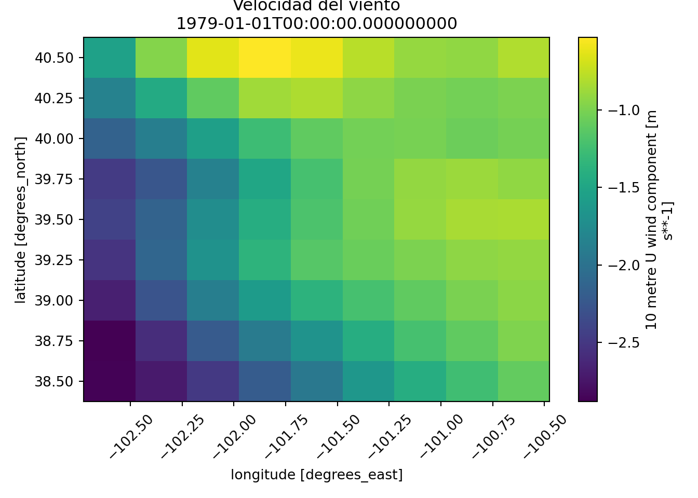
# -------------------------------
# 7. Ejemplo: promedio temporal
# -------------------------------
# Calcular media a lo largo del tiempo
da_mean = da.mean(dim="time")
# Graficar
da_mean.plot(cmap="viridis")
# Rotar etiquetas de longitud para evitar solapamiento
plt.xticks(rotation=45)(array([-102.75, -102.5 , -102.25, -102. , -101.75, -101.5 , -101.25,
-101. , -100.75, -100.5 , -100.25]), [Text(-102.75, 0, '−102.75'), Text(-102.5, 0, '−102.50'), Text(-102.25, 0, '−102.25'), Text(-102.0, 0, '−102.00'), Text(-101.75, 0, '−101.75'), Text(-101.5, 0, '−101.50'), Text(-101.25, 0, '−101.25'), Text(-101.0, 0, '−101.00'), Text(-100.75, 0, '−100.75'), Text(-100.5, 0, '−100.50'), Text(-100.25, 0, '−100.25')])# Ajustar el layout para que las etiquetas no se corten
plt.tight_layout()
plt.title("Velocidad promedio del viento")
plt.show()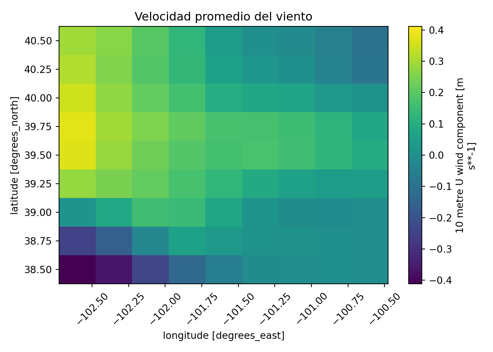
XXX: no leee la metadata
Podemos usar sf::st_crs para asignar coordenadas el cubo sin cargar sf. Es decir solo con library(stars) se habilitan las funciones de sf las cuales muchas sirven para aplicarlas a cubos raster.
# #| eval: false
# ============================================================
# Lectura de NetCDF con múltiples bandas usando {stars}
# + Gestión de directorio local ./data_heavy/
# + Conversión de tiempo a fechas reales
# + Asignación de CRS WGS84
# ============================================================
# -------------------------------
# 1. Cargar librerías necesarias
# -------------------------------
library(stars) # Manejo de datos raster multidimensionalesLoading required package: abindLoading required package: sfLinking to GEOS 3.12.1, GDAL 3.8.4, PROJ 9.4.0; sf_use_s2() is TRUElibrary(units) # Manejo de unidadesudunits database from /usr/share/xml/udunits/udunits2.xml# -------------------------------
# 2. Configuración de rutas
# -------------------------------
data_dir <- "./data_heavy/"
# Crear el directorio si no existe
if (!dir.exists(data_dir)) {
dir.create(data_dir, recursive = TRUE)
message(paste("Directorio creado:", data_dir))
}
# Definición de rutas completas
url <- "http://geocorp.co/wind/goodland_10u_1.zip"
zip_file <- file.path(data_dir, "10fg_2017_2018.zip")
nc_file <- file.path(data_dir, "goodland_10u_1.nc")
# -------------------------------
# 3. Descargar y descomprimir datos
# -------------------------------
# Descargar solo si el archivo NO existe en la ruta destino
if (!file.exists(zip_file)) {
message("Iniciando descarga...")
download.file(url, zip_file, mode = "wb")
} else {
message("El archivo zip ya existe en el directorio de datos.")
}El archivo zip ya existe en el directorio de datos.# Descomprimir específicamente en el directorio indicado
unzip(zip_file, exdir = data_dir)
# -------------------------------
# 4. Configuración de entorno y lectura
# -------------------------------
# Ajuste de límite de bandas para series temporales extensas
Sys.setenv(GDAL_MAX_BAND_COUNT = 120000)
# Lectura del archivo desde la ruta procesada
if (file.exists(nc_file)) {
y <- read_stars(nc_file, quiet = TRUE)
print(y)
y
} else {
stop("Archivo .nc no encontrado en la ruta especificada.")
}stars object with 3 dimensions and 1 attribute
attribute(s), summary of first 1e+05 cells:
Min. 1st Qu. Median Mean 3rd Qu.
goodland_10u_1.nc [m/s] -6.195632 -0.8395011 1.254741 0.9318181 2.778291
Max.
goodland_10u_1.nc [m/s] 8.446477
dimension(s):
from to offset delta refsys
x 1 9 -102.7 0.25 NA
y 1 9 40.62 -0.25 NA
time 1 113232 NA NA udunits
values
x NULL
y NULL
time [692496,692497) [hours since 1900-01-01 00:00:00.0],...,[815231,815232) [hours since 1900-01-01 00:00:00.0]
x/y
x [x]
y [y]
time stars object with 3 dimensions and 1 attribute
attribute(s), summary of first 1e+05 cells:
Min. 1st Qu. Median Mean 3rd Qu.
goodland_10u_1.nc [m/s] -6.195632 -0.8395011 1.254741 0.9318181 2.778291
Max.
goodland_10u_1.nc [m/s] 8.446477
dimension(s):
from to offset delta refsys
x 1 9 -102.7 0.25 NA
y 1 9 40.62 -0.25 NA
time 1 113232 NA NA udunits
values
x NULL
y NULL
time [692496,692497) [hours since 1900-01-01 00:00:00.0],...,[815231,815232) [hours since 1900-01-01 00:00:00.0]
x/y
x [x]
y [y]
time # -------------------------------
# 5. Asignar sistema de referencia (CRS)
# -------------------------------
# Según los valores de coordenadas:
# x ≈ longitudes (-102.7, etc.)
# y ≈ latitudes (40.62, etc.)
# → corresponde a WGS84 (EPSG:4326)
st_crs(y) <- 4326 # Asignación directa
ystars object with 3 dimensions and 1 attribute
attribute(s), summary of first 1e+05 cells:
Min. 1st Qu. Median Mean 3rd Qu.
goodland_10u_1.nc [m/s] -6.195632 -0.8395011 1.254741 0.9318181 2.778291
Max.
goodland_10u_1.nc [m/s] 8.446477
dimension(s):
from to offset delta refsys
x 1 9 -102.7 0.25 WGS 84
y 1 9 40.62 -0.25 WGS 84
time 1 113232 NA NA udunits
values
x NULL
y NULL
time [692496,692497) [hours since 1900-01-01 00:00:00.0],...,[815231,815232) [hours since 1900-01-01 00:00:00.0]
x/y
x [x]
y [y]
time # -------------------------------
# 6. Convertir dimensión temporal a fechas reales
# -------------------------------
# Extraer dimensión tiempo
time_vals <- st_get_dimension_values(y, "time")
# Ver unidades del tiempo
attr(time_vals, "units")$numerator
[1] "hours since 1900-01-01 00:00:00.0"
$denominator
character(0)
attr(,"class")
[1] "symbolic_units"# En este caso:
# "hours since 1900-01-01 00:00:00"
# Convertir a POSIXct (fechas reales)
time_real <- as.POSIXct(
time_vals,
origin = "1900-01-01",
tz = "UTC"
)
# Reemplazar dimensión en el objeto stars
st_set_dimensions(y, "time", values = time_real) -> y
# -------------------------------
# 7. Verificar resultado
# -------------------------------
ystars object with 3 dimensions and 1 attribute
attribute(s), summary of first 1e+05 cells:
Min. 1st Qu. Median Mean 3rd Qu.
goodland_10u_1.nc [m/s] -6.195632 -0.8395011 1.254741 0.9318181 2.778291
Max.
goodland_10u_1.nc [m/s] 8.446477
dimension(s):
from to offset delta refsys values x/y
x 1 9 -102.7 0.25 WGS 84 NULL [x]
y 1 9 40.62 -0.25 WGS 84 NULL [y]
time 1 113232 NA NA POSIXct 1979-01-01,...,1992-12-31 23:00:00 # Revisar primeras fechas
head(st_get_dimension_values(y, "time"))[1] "1979-01-01 00:00:00 UTC" "1979-01-01 01:00:00 UTC"
[3] "1979-01-01 02:00:00 UTC" "1979-01-01 03:00:00 UTC"
[5] "1979-01-01 04:00:00 UTC" "1979-01-01 05:00:00 UTC"# -------------------------------
# 8. Ejemplo: extraer un tiempo específico
# -------------------------------
# Índice temporal que quieres graficar
i <- 1
# Seleccionar primer instante temporal
y_ti <- y[,,,i]
# Obtener la fecha correspondiente
fecha_i <- st_get_dimension_values(y, "time")[i]
# Crear título dinámico
titulo <- paste0(
"Velocidad del viento: ",
format(fecha_i, "%Y-%m-%d %H:%M UTC")
)
# -------------------------------
# Configuración de paleta y cortes
# -------------------------------
# Viridis es perceptualmente uniforme y coincide con la estética de Python
#pal <- hcl.colors(100, "YlGnBu", rev = TRUE)
pal <- hcl.colors(100, "Viridis")
valores <- as.vector(y_ti[[1]])
brks <- seq(min(valores, na.rm = TRUE),
max(valores, na.rm = TRUE),
length.out = length(pal) + 1)
# -------------------------------
# Graficación mejorada
# -------------------------------
# Se aumenta key.width para legibilidad y se ajustan márgenes
# Nota: estos comandos de configuración del plot no tienen efecto
# al plotear objetos stars
par(mar = c(
4, # Margen inferior: suficiente espacio para etiquetas del eje X
4, # Margen izquierdo: espacio para etiquetas del eje Y
5, # Margen superior: espacio para el título (un poco más compacto)
1 # Margen derecho: mínimo (útil si la leyenda está fuera o no es grande)
))
plot(
y_ti, # Objeto stars a graficar
col = pal, # Paleta de colores
main = "", # Título del gráfico
breaks = brks, # Intervalos de valores (deben ser length(col) + 1)
key.pos = 4, # Posición de la leyenda (4 = derecha, 1 = abajo, ...)
key.width = lcm(2), # Ancho de la barra de la leyenda (en cm)
key.length = 1, # Longitud relativa de la leyenda (escala vertical)
axes = TRUE, # Mostrar ejes (coordenadas X e Y)
reset = FALSE, # Para poder añadir elementos después
cex.axis = 0.8 # Tamaño de fuente en ejes
)
# Adición de etiquetas de eje de forma manual para mayor claridad
title(
main = titulo, # Texto del título principal
cex.main = 0.8, # Tamaño del título (1 = normal; 1.2 = 20% más grande)
font.main = 1, # Tipo de fuente del título (1 = normal, 2 = negrita,
# 3 = cursiva, 4 = negrita+cursiva)
line = 0 # Ajustar según necesidad para evitar solapamiento
)
title(
xlab = "Longitude [degrees_east]", # Etiqueta del eje X
line = 2.5 # Distancia vertical desde el eje X
# hacia abajo (en líneas de texto);
# valores mayores → más separado del eje
)
title(ylab = "Latitude [degrees_north]", line = 2.5)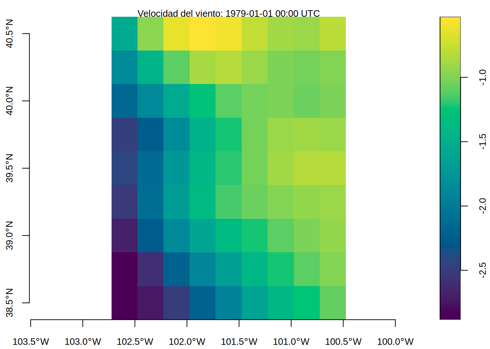
# -------------------------------
# 9. Ejemplo: promedio temporal
# -------------------------------
# Calcular media a lo largo del tiempo
y_mean <- st_apply(y, c("x", "y"), mean, na.rm = TRUE)
pal <- hcl.colors(100, "Viridis")
valores <- as.vector(y_mean[[1]])
brks <- seq(min(valores, na.rm = TRUE),
max(valores, na.rm = TRUE),
length.out = length(pal) + 1)
par(mar = c(4, 4, 4, 1))
titulo = "Velocidad promedio del viento"
plot(
y_mean, # Objeto stars a graficar
col = pal, # Paleta de colores
main = "", # Título del gráfico
breaks = brks, # Intervalos de valores (deben ser length(col) + 1)
key.pos = 4, # Posición de la leyenda (4 = derecha, 1 = abajo, ...)
key.width = lcm(2), # Ancho de la barra de la leyenda (en cm)
key.length = 1, # Longitud relativa de la leyenda (escala vertical)
axes = TRUE, # Mostrar ejes (coordenadas X e Y)
reset = FALSE, # Para poder añadir elementos después
cex.axis = 0.8 # Tamaño de fuente en ejes
)
# Adición de etiquetas de eje de forma manual para mayor claridad
title(
main = titulo, # Texto del título principal
cex.main = 0.8, # Tamaño del título (1 = normal; 1.2 = 20% más grande)
font.main = 1, # Tipo de fuente del título (1 = normal, 2 = negrita,
# 3 = cursiva, 4 = negrita+cursiva)
line = 0 # Ajustar según necesidad para evitar solapamiento
)
title(
xlab = "Longitude [degrees_east]", # Etiqueta del eje X
line = 2.5 # Distancia vertical desde el eje X
# hacia abajo (en líneas de texto);
# valores mayores → más separado del eje
)
title(ylab = "Latitude [degrees_north]", line = 2.5)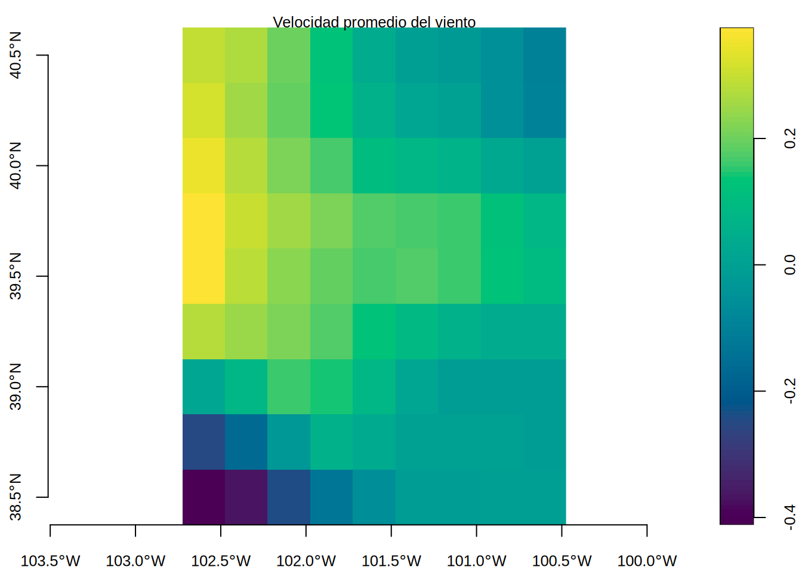
# #| eval: false
j_eval('
# ============================================================
# Lectura de NetCDF con múltiples bandas usando {Rasters}
# + Interpretación nativa de dimensiones
# + Cálculo estadístico con {Statistics}
# + Gestión de directorio local ./data_heavy/
# ============================================================
# -------------------------------
# 1. Cargar librerías necesarias
# -------------------------------
using Downloads
using Rasters
using NCDatasets
using Plots
using Statistics
# -------------------------------
# 2. Configuración de rutas y directorios
# -------------------------------
data_dir = "./data_heavy/"
# Crear el directorio si no existe (recursivo por defecto)
if !isdir(data_dir)
mkpath(data_dir)
println("Directorio creado: $data_dir")
end
url = "http://geocorp.co/wind/goodland_10u_1.zip"
zip_file = joinpath(data_dir, "10fg_2017_2018.zip")
nc_file = joinpath(data_dir, "goodland_10u_1.nc")
# -------------------------------
# 3. Descargar y descomprimir datos
# -------------------------------
# Descargar solo si el archivo no existe en la ruta destino
if !isfile(zip_file)
println("Iniciando descarga en $zip_file...")
Downloads.download(url, zip_file)
end
# Extraer el contenido dentro del directorio de datos pesados
# Se utiliza el flag -d para especificar el destino de extracción
run(`unzip -o $zip_file -d $data_dir`)
# -------------------------------
# 4. Leer el archivo NetCDF
# -------------------------------
# Rasters.jl utiliza lazy loading a través de DiskArrays.jl
# Solo se cargan en memoria los metadatos y punteros al archivo
if isfile(nc_file)
cube = Raster(nc_file)
println("\nResumen del dataset:")
println(summary(cube))
println("\nDimensiones detectadas:")
println(dims(cube))
else
error("El archivo NetCDF no se encuentra en la ruta: $nc_file")
end
# -------------------------------
# 5. Ejemplo: extraer un tiempo específico
# -------------------------------
# Ti() permite seleccionar mediante índice en la dimensión temporal
# Los recortes con cube[...] su puramente perezosos
cube_t1 = cube[Ti(1)]
println(summary(cube_t1))
println(dims(cube_t1))
p1 = plot(cube_t1, title="Velocidad del viento - Instante 1", c=:viridis)
display(p1)
# -------------------------------
# 6. Ejemplo: promedio temporal
# -------------------------------
# Reducir el cubo multidimensional promediando sobre el tiempo (Ti)
# Se usa dropdims para remover la dimensión residual de longitud 1
cube_mean = dropdims(mean(cube, dims=Ti), dims=Ti)
p2 = plot(cube_mean, title="Velocidad promedio del viento", c=:viridis)
savefig(p2, "images/c10_netcdf_mean_plot_julia.png")
')Starting Julia ...julia> # ============================================================
julia> # Lectura de NetCDF con múltiples bandas usando {Rasters}
julia> # + Interpretación nativa de dimensiones
julia> # + Cálculo estadístico con {Statistics}
julia> # + Gestión de directorio local ./data_heavy/
julia> # ============================================================
julia> # -------------------------------
julia> # 1. Cargar librerías necesarias
julia> # -------------------------------
julia> using Downloads
julia> using Rasters
julia> using NCDatasets
julia> using Plots
julia> using Statistics
julia> # -------------------------------
julia> # 2. Configuración de rutas y directorios
julia> # -------------------------------
julia> data_dir = "./data_heavy/"
"./data_heavy/"
julia> # Crear el directorio si no existe (recursivo por defecto)
julia> if !isdir(data_dir) mkpath(data_dir) println("Directorio creado: $data_dir") end
julia> url = "http://geocorp.co/wind/goodland_10u_1.zip"
"http://geocorp.co/wind/goodland_10u_1.zip"
julia> zip_file = joinpath(data_dir, "10fg_2017_2018.zip")
"./data_heavy/10fg_2017_2018.zip"
julia> nc_file = joinpath(data_dir, "goodland_10u_1.nc")
"./data_heavy/goodland_10u_1.nc"
julia> # -------------------------------
julia> # 3. Descargar y descomprimir datos
julia> # -------------------------------
julia> # Descargar solo si el archivo no existe en la ruta destino
julia> if !isfile(zip_file) println("Iniciando descarga en $zip_file...") Downloads.download(url, zip_file) end
julia> # Extraer el contenido dentro del directorio de datos pesados
julia> # Se utiliza el flag -d para especificar el destino de extracción
julia> run(`unzip -o $zip_file -d $data_dir`)
Archive: ./data_heavy/10fg_2017_2018.zip inflating: ./data_heavy/goodland_10u_1.nc Process(`unzip -o ./data_heavy/10fg_2017_2018.zip -d ./data_heavy/`, ProcessExited(0))
julia> # -------------------------------
julia> # 4. Leer el archivo NetCDF
julia> # -------------------------------
julia> # Rasters.jl utiliza lazy loading a través de DiskArrays.jl
julia> # Solo se cargan en memoria los metadatos y punteros al archivo
julia> if isfile(nc_file) cube = Raster(nc_file) println(" Resumen del dataset:") println(summary(cube)) println(" Dimensiones detectadas:") println(dims(cube)) else error("El archivo NetCDF no se encuentra en la ruta: $nc_file") end
Resumen del dataset:
9×9×113232 Raster{Union{Missing, Float64}, 3} u10
Dimensiones detectadas:
(↓ X Mapped{Float32} [-102.6f0, …, -100.6f0] ForwardOrdered Regular Points,
→ Y Mapped{Float32} [40.5f0, …, 38.5f0] ReverseOrdered Regular Points,
↗ Ti Sampled{Dates.DateTime} [Dates.DateTime("1979-01-01T00:00:00"), …, Dates.DateTime("1992-12-31T23:00:00")] ForwardOrdered Irregular Points)
julia> # -------------------------------
julia> # 5. Ejemplo: extraer un tiempo específico
julia> # -------------------------------
julia> # Ti() permite seleccionar mediante índice en la dimensión temporal
julia> # Los recortes con cube[...] su puramente perezosos
julia> cube_t1 = cube[Ti(1)]
┌ 9×9 Raster{Union{Missing, Float64}, 2} u10 ┐
├────────────────────────────────────────────┴────────────────────────── dims ┐
↓ X Mapped{Float32} [-102.6f0, …, -100.6f0] ForwardOrdered Regular Points,
→ Y Mapped{Float32} [40.5f0, …, 38.5f0] ReverseOrdered Regular Points
├─────────────────────────────────────────────────────────────────── metadata ┤
Metadata{Rasters.NCDsource} of Dict{String, Any} with 6 entries:
"missing_value" => -32767
"units" => "m s**-1"
"add_offset" => 0.515112
"long_name" => "10 metre U wind component"
"scale_factor" => 0.000445157
"_FillValue" => -32767
├───────────────────────────────────────────────────────────────────── raster ┤
missingval: missing
extent: Extent(X = (-102.6f0, -100.6f0), Y = (38.5f0, 40.5f0))
crs: EPSG:4326
mappedcrs: EPSG:4326
└─────────────────────────────────────────────────────────────────────────────┘
↓ → 40.5 40.25 40.0 39.75 39.5 39.25 39.0 38.75 38.5
-102.6 -1.54597 -1.8509 -2.15628 -2.47812 -2.42114 -2.5262 -2.67978 -2.88366 -2.86586
-102.35 -0.968597 -1.45515 -1.89007 -2.25198 -2.14025 -2.11132 -2.27113 -2.58719 -2.72341
-102.1 -0.637845 -1.09947 -1.56155 -1.85891 -1.73827 -1.68574 -1.88963 -2.22038 -2.49103
-101.85 -0.529227 -0.862204 -1.26952 -1.49433 -1.41286 -1.3639 -1.59671 -1.91144 -2.20791
-101.6 -0.598671 -0.817243 -1.10392 -1.22634 -1.1983 -1.15156 -1.36879 -1.67506 -1.9377
-101.35 -0.782076 -0.929423 -1.03225 -1.0238 -1.03626 -1.06475 -1.22056 -1.42088 -1.63322
-101.1 -0.902268 -1.00644 -1.01534 -0.907165 -0.902268 -0.993526 -1.10571 -1.22056 -1.41598
-100.85 -0.917404 -1.03403 -1.05362 -0.887578 -0.83505 -0.932094 -1.00243 -1.10526 -1.24816
-100.6 -0.807895 -0.989964 -1.01934 -0.921855 -0.826592 -0.914733 -0.941442 -0.989074 -1.09101
julia> println(summary(cube_t1))
9×9 Raster{Union{Missing, Float64}, 2} u10
julia> println(dims(cube_t1))
(↓ X Mapped{Float32} [-102.6f0, …, -100.6f0] ForwardOrdered Regular Points,
→ Y Mapped{Float32} [40.5f0, …, 38.5f0] ReverseOrdered Regular Points)
julia> p1 = plot(cube_t1, title="Velocidad del viento - Instante 1", c=:viridis)
julia> display(p1)
julia> # -------------------------------
julia> # 6. Ejemplo: promedio temporal
julia> # -------------------------------
julia> # Reducir el cubo multidimensional promediando sobre el tiempo (Ti)
julia> # Se usa dropdims para remover la dimensión residual de longitud 1
julia> cube_mean = dropdims(mean(cube, dims=Ti), dims=Ti)
┌ 9×9 Raster{Union{Missing, Float64}, 2} u10 ┐
├────────────────────────────────────────────┴────────────────────────── dims ┐
↓ X Mapped{Float32} [-102.6f0, …, -100.6f0] ForwardOrdered Regular Points,
→ Y Mapped{Float32} [40.5f0, …, 38.5f0] ReverseOrdered Regular Points
├─────────────────────────────────────────────────────────────────── metadata ┤
Metadata{Rasters.NCDsource} of Dict{String, Any} with 6 entries:
"missing_value" => -32767
"units" => "m s**-1"
"add_offset" => 0.515112
"long_name" => "10 metre U wind component"
"scale_factor" => 0.000445157
"_FillValue" => -32767
├───────────────────────────────────────────────────────────────────── raster ┤
missingval: missing
extent: Extent(X = (-102.6f0, -100.6f0), Y = (38.5f0, 40.5f0))
crs: EPSG:4326
mappedcrs: EPSG:4326
└─────────────────────────────────────────────────────────────────────────────┘
↓ → 40.5 40.25 40.0 39.75 39.5 39.25 39.0 38.75 38.5
-102.6 0.295189 0.31345 0.347648 0.375667 0.36937 0.280308 0.0153829 -0.248943 -0.411666
-102.35 0.266643 0.256394 0.276297 0.297855 0.28499 0.247589 0.0810851 -0.165808 -0.365913
-102.1 0.198226 0.189648 0.215253 0.252146 0.229339 0.215133 0.159627 -0.0313264 -0.240997
-101.85 0.127658 0.131899 0.166636 0.212096 0.191232 0.171343 0.146423 0.0572966 -0.135295
-101.6 0.0407514 0.056066 0.102611 0.17258 0.166998 0.1289 0.0771048 0.0342193 -0.0617573
-101.35 -0.00485912 0.0199577 0.0792812 0.169481 0.174125 0.0894769 0.014992 0.00487531 -0.015885
-101.1 -0.0207165 -0.00112626 0.0654643 0.156406 0.159255 0.0572726 -0.0132297 0.000209355 -0.0102075
-100.85 -0.0552735 -0.0509118 0.0277755 0.120912 0.124278 0.0403025 -0.0162323 -0.00148902 -0.00498304
-100.6 -0.100034 -0.0945189 0.00331711 0.0783602 0.0932686 0.044006 -0.0116717 -0.0125467 -0.00942332
julia> p2 = plot(cube_mean, title="Velocidad promedio del viento", c=:viridis)
julia> savefig(p2, "images/c10_netcdf_mean_plot_julia.png")
"/home/rstudio/work/01_prog_sig/images/c10_netcdf_mean_plot_julia.png"
knitr::include_graphics(c("images/c10_netcdf_time_plot_julia.png", "images/c10_netcdf_mean_plot_julia.png"))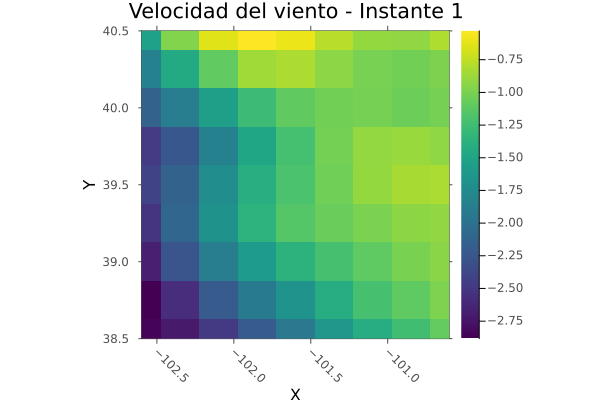
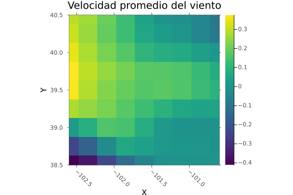
El cumplimiento de las convenciones CF (Climate and Forecast) constituye un marco de interoperabilidad, pero no garantiza una traducción automática y unívoca hacia objetos de datos espaciales en todos los entornos de programación. Mientras que bibliotecas como xarray en Python cuentan con motores de decodificación específicos (como cftime), el paquete stars en R depende de la abstracción de GDAL, lo que puede derivar en una interpretación incompleta de los metadatos.
Factores que impiden la decodificación de metadatos:
La necesidad de intervenir manualmente en la asignación de Sistemas de Referencia de Coordenadas (CRS) y en la conversión de ejes temporales responde a inconsistencias estructurales o limitaciones en los controladores de lectura:
grid_mapping, las librerías basadas en GDAL no pueden inferir la proyección matemática exacta. En estos casos, el software interpreta los datos como una rejilla regular (curvilínea o no) pero carente de elipsoide o datum definido.calendar, el software retiene los valores como simples flotantes o enteros, delegando la conversión al usuario para evitar errores de redondeo o desajustes de zona horaria.Por lo tanto, la asignación manual del CRS mediante st_set_crs() y la reconstrucción de la dimensión temporal con st_set_dimensions() tras una conversión a POSIXct son procedimientos necesarios para asegurar el rigor analítico. Estas acciones garantizan que el manejo de series temporales y la superposición de capas vectoriales se realicen sobre una base geográfica y cronológica verificada, mitigando las deficiencias de la detección automática.
Esta tabla compara las funciones clave utilizadas para la gestión de cubos NetCDF.
| Operación | Python 🐍 | R 🔵 | Julia 🟣 |
|---|---|---|---|
| Cargar librería | import xarray as xr |
library(stars) |
using Rasters |
| Lectura (Lazy) | xr.open_dataset(file) |
read_stars(file, proxy=TRUE) |
Raster(file) |
| Asignar CRS | ds.rio.write_crs("epsg:4326") |
st_crs(y) <- 4326 |
Automático vía metadatos |
| Extraer tiempo | ds.time.values |
st_get_dimension_values(y, "time") |
lookup(cube, Ti) |
| Conversión tiempo | Automática (Convenciones CF) | Manual via as.POSIXct() |
Automática (Convenciones CF) |
| Selección (Slice) | da.isel(time=0) |
y[,,,i] |
cube[Ti(1)] |
| Media temporal | da.mean(dim="time") |
st_apply(y, c("x", "y"), mean) |
mean(cube, dims=Ti) |
Notas:
El manejo de datos de reanálisis (como ERA5 de Copernicus) implica trabajar con estructuras de cinco dimensiones (5D). Estas dimensiones permiten capturar la temperatura (t) no solo en superficie (\(x, y\)), sino en diferentes niveles de presión atmosférica (level), a través del tiempo (time) y considerando múltiples escenarios o miembros de ensamble (number) para cuantificar la incertidumbre. Para un profesional en Colombia, estos datos son vitales en el análisis de eventos climáticos extremos en la Región Andina o el Caribe, permitiendo una comprensión volumétrica y temporal de la atmósfera sobre el territorio nacional.

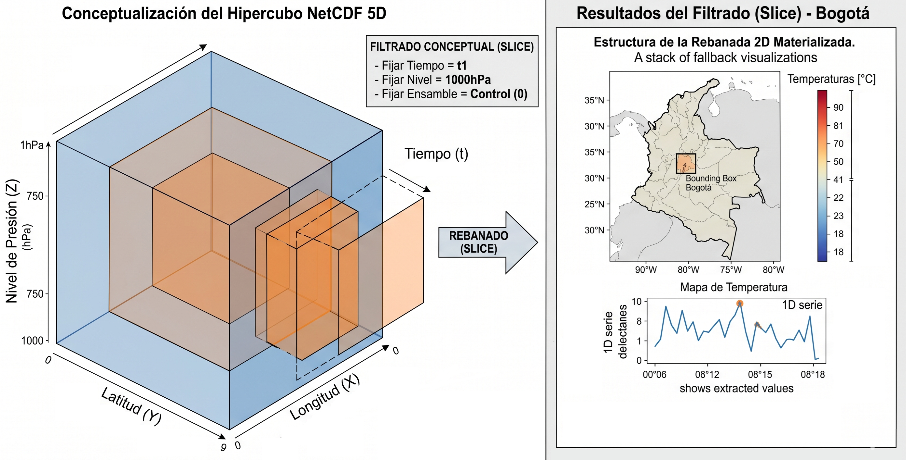
Procesar un archivo de cientos de megabytes (o gigabytes) en tres lenguajes distintos requiere entender cómo cada uno gestiona la memoria RAM para evitar colapsos del sistema. La clave no es “leer” el archivo, sino “conectarse” a él:
Para entender por qué nuestro archivo download5Dcolombia.nc tiene exactamente 37 niveles y 10 miembros, debemos remitirnos a la arquitectura del modelo global del Centro Europeo de Previsiones Meteorológicas a Plazo Medio (ECMWF).
El estándar de ERA5 para niveles de presión define 37 capas que van desde los 1000 hPa (cerca del nivel del mar) hasta 1 hPa (en la parte alta de la estratosfera).
Propósito:
El dataset que estamos usando es el ERA5 EDA (Ensemble Data Assimilation). A diferencia del dataset de “alta resolución” que solo entrega un valor, el EDA entrega 10 versiones ligeramente diferentes de la misma realidad meteorológica.
Propósito:
0 es el experimento de control.Descargar el archivo download5Dcolombia.zip de 262 MB.
URL de descarga: https://drive.google.com/file/d/1UgEsmJx2XM2Iuxr7L5s4IQ83rRS2Ngh1/view?usp=sharing
# #| eval: false
"""
Verificación integral de un cubo NetCDF ERA5 (EDA)
Este script:
1. Controla existencia de archivos (.nc / .zip)
2. Carga el dataset en modo lazy
3. Inspecciona:
- dimensiones
- variable principal
- metadatos
- forma del arreglo
4. Verifica la estructura vertical (niveles de presión)
Contexto físico:
---------------
La presión disminuye con la altura:
~1 hPa → estratosfera alta
~500 hPa → troposfera media
~1000 hPa → superficie
"""'\nVerificación integral de un cubo NetCDF ERA5 (EDA)\n\nEste script:\n1. Controla existencia de archivos (.nc / .zip)\n2. Carga el dataset en modo lazy\n3. Inspecciona:\n - dimensiones\n - variable principal\n - metadatos\n - forma del arreglo\n4. Verifica la estructura vertical (niveles de presión)\n\nContexto físico:\n---------------\nLa presión disminuye con la altura:\n ~1 hPa → estratosfera alta\n ~500 hPa → troposfera media\n ~1000 hPa → superficie\n'import xarray as xr
import os
import zipfile
# -------------------------------------------------------------------------
# Rutas
# -------------------------------------------------------------------------
path = "./data_heavy/"
ncname = "download5Dcolombia"
ncfile5d = os.path.join(path, ncname + ".nc")
zipfile_path = os.path.join(path, ncname + ".zip")
# -------------------------------------------------------------------------
# Control de existencia y descompresión
# -------------------------------------------------------------------------
if not os.path.exists(ncfile5d):
if os.path.exists(zipfile_path):
print(f"Archivo .nc no encontrado. Descomprimiendo {zipfile_path}")
with zipfile.ZipFile(zipfile_path, 'r') as zip_ref:
zip_ref.extractall(path)
else:
raise FileNotFoundError("No existe .nc ni .zip")
else:
print(f"Usando archivo existente: {ncfile5d}")Usando archivo existente: ./data_heavy/download5Dcolombia.nc# -------------------------------------------------------------------------
# Carga (lazy)
# -------------------------------------------------------------------------
# Carga lazy pero sin dask
ds = xr.open_dataset(ncfile5d)
# chunks="auto" activa Dask y divide el cubo en bloques manejables para la RAM
# Se requieren las librerías:
# xarray (instalada en el contenedor),
# netcdf4 (no instalada en el contenedor)
# y toolz (no instalada en el contenedor)
#ds = xr.open_dataset(ncfile5d, chunks="auto")
print("\n=== DATASET ===")
=== DATASET ===print(ds)<xarray.Dataset> Size: 1GB
Dimensions: (time: 480, number: 10, level: 37, latitude: 35, longitude: 25)
Coordinates:
* time (time) datetime64[ns] 4kB 2020-01-01 ... 2020-02-29T21:00:00
* number (number) int32 40B 0 1 2 3 4 5 6 7 8 9
* level (level) int32 148B 1 2 3 5 7 10 20 ... 875 900 925 950 975 1000
* latitude (latitude) float32 140B 12.5 12.0 11.5 11.0 ... -3.5 -4.0 -4.5
* longitude (longitude) float32 100B -79.1 -78.6 -78.1 ... -68.1 -67.6 -67.1
Data variables:
t (time, number, level, latitude, longitude) float64 1GB ...
Attributes:
Conventions: CF-1.6
history: 2020-09-30 17:55:04 GMT by grib_to_netcdf-2.16.0: /opt/ecmw...# -------------------------------------------------------------------------
# Dimensiones
# -------------------------------------------------------------------------
print("\n=== DIMENSIONES ===")
=== DIMENSIONES ===print(ds.dims)FrozenMappingWarningOnValuesAccess({'time': 480, 'number': 10, 'level': 37, 'latitude': 35, 'longitude': 25})# -------------------------------------------------------------------------
# Variable principal
# -------------------------------------------------------------------------
print("\n=== VARIABLES ===")
=== VARIABLES ===print(list(ds.data_vars))['t']# -------------------------------------------------------------------------
# Metadatos
# -------------------------------------------------------------------------
print("\n=== METADATOS ===")
=== METADATOS ===print(ds.attrs){'Conventions': 'CF-1.6', 'history': '2020-09-30 17:55:04 GMT by grib_to_netcdf-2.16.0: /opt/ecmwf/eccodes/bin/grib_to_netcdf -S param -o /cache/data1/adaptor.mars.internal-1601485963.200975-3104-28-04adcc76-77fc-4223-96e1-62f83cb65870.nc /cache/tmp/04adcc76-77fc-4223-96e1-62f83cb65870-adaptor.mars.internal-1601485963.2020729-3104-9-tmp.grib'}# -------------------------------------------------------------------------
# Forma del arreglo
# -------------------------------------------------------------------------
print("\n=== SHAPE ===")
=== SHAPE ===print(ds["t"].shape)(480, 10, 37, 35, 25)# -------------------------------------------------------------------------
# Niveles de presión
# -------------------------------------------------------------------------
z_levels = ds.level.values
print("\nPrimeros niveles (Alta atmósfera):")
Primeros niveles (Alta atmósfera):print(z_levels[:2])[1 2]print("\nÚltimos niveles (Superficie):")
Últimos niveles (Superficie):print(z_levels[-2:])[ 975 1000]# #| eval: false
# -------------------------------------------------------------------------
# Librerías
# -------------------------------------------------------------------------
library(stars)
library(dplyr)
Attaching package: 'dplyr'The following objects are masked from 'package:stats':
filter, lagThe following objects are masked from 'package:base':
intersect, setdiff, setequal, unionlibrary(sf)
# Ajuste de variables de entorno de GDAL
# Se incrementa el límite de bandas para permitir el procesamiento de cubos 5D
# con una densidad temporal o vertical elevada (ej. ERA5 o modelos climáticos).
Sys.setenv(GDAL_MAX_BAND_COUNT = 1200000)
# -------------------------------------------------------------------------
# Rutas y nombres de archivos
# -------------------------------------------------------------------------
path <- "./data_heavy/"
ncname <- "download5Dcolombia"
ncfile5d <- paste0(path, ncname, ".nc")
zipfile <- paste0(path, ncname, ".zip")
# -------------------------------------------------------------------------
# Control de existencia y descompresión de archivos
# -------------------------------------------------------------------------
if (!file.exists(ncfile5d)) {
if (file.exists(zipfile)) {
message("Descomprimiendo archivo...")
unzip(zipfile, exdir = path)
} else {
stop("No existe .nc ni .zip")
}
} else {
message("Usando archivo existente")
}Usando archivo existente# -------------------------------------------------------------------------
# Carga lazy
# -------------------------------------------------------------------------
# Lectura mediante proxy=TRUE para manipulación diferida (lazy evaluation).
# Esto permite definir recortes espaciales y temporales sin cargar todo el
# archivo.
st_col5d = read_stars(ncfile5d, proxy=TRUE)Warning in CPL_get_metadata(file, NA_character_, options): GDAL Message 1:
dimension #1 (number) is not a Time dimension.Warning in CPL_read_gdal(as.character(x), as.character(options),
as.character(driver), : GDAL Message 1: The dataset has several variables that
could be identified as vector fields, but not all share the same primary
dimension. Consequently they will be ignored.Warning in CPL_read_gdal(as.character(x), as.character(options),
as.character(driver), : GDAL Message 1: dimension #1 (number) is not a Time
dimension.# Warning: dimension #1 (number) is not a Time dimension.
# Explicación: GDAL identifica "number" (ensamble) y aclara que no cumple
# con los atributos CF de tiempo; se procesa como dimensión entera.
# Warning: The dataset has several variables that could be identified as vector fields...
# Explicación: Si hubiera vientos U/V, GDAL no los agrupa automáticamente por
# discrepancias dimensionales; se cargan como atributos escalares.
# Chequeto de CRS
st_crs(st_col5d)Coordinate Reference System: NA# Asignación de CRS en {stars}
# Opción 1: Asignación directa (reemplaza el NA en el objeto existente)
#st_crs(st_col5d) <- 4326
# Opción 2: Usando st_set_crs (estilo funcional/pipe)
st_col5d <- st_col5d %>% st_set_crs(4326)
#st_col5d <- st_set_crs(st_col5d, 4326)
cat("\n=== DATASET ===\n")
=== DATASET ===print(st_col5d)stars_proxy object with 1 attribute in 1 file(s):
$download5Dcolombia.nc
[1] "[...]/download5Dcolombia.nc"
dimension(s):
from to offset
x 1 25 -79.35
y 1 35 12.75
level 1 37 NA
number 1 10 0
time 1 480 1051896 [hours since 1900-01-01 00:00:00.0]
delta refsys
x 0.5 WGS 84
y -0.5 WGS 84
level NA udunits
number 1 NA
time 3 [hours since 1900-01-01 00:00:00.0] udunits
values x/y
x NULL [x]
y NULL [y]
level [1,2) [millibars],...,[1000,1025) [millibars]
number NULL
time NULL # -------------------------------------------------------------------------
# Dimensiones
# -------------------------------------------------------------------------
cat("\n=== DIMENSIONES ===\n")
=== DIMENSIONES ===print(st_dimensions(st_col5d)) from to offset
x 1 25 -79.35
y 1 35 12.75
level 1 37 NA
number 1 10 0
time 1 480 1051896 [hours since 1900-01-01 00:00:00.0]
delta refsys
x 0.5 WGS 84
y -0.5 WGS 84
level NA udunits
number 1 NA
time 3 [hours since 1900-01-01 00:00:00.0] udunits
values x/y
x NULL [x]
y NULL [y]
level [1,2) [millibars],...,[1000,1025) [millibars]
number NULL
time NULL # -------------------------------------------------------------------------
# Variable
# -------------------------------------------------------------------------
cat("\n=== VARIABLES ===\n")
=== VARIABLES ===print(names(st_col5d))[1] "download5Dcolombia.nc"# -------------------------------------------------------------------------
# Metadatos
# -------------------------------------------------------------------------
cat("\n=== VALORES ===\n")
=== VALORES ===print(st_get_dimension_values(st_col5d, names(st_dimensions(st_col5d))[1])) [1] -79.1 -78.6 -78.1 -77.6 -77.1 -76.6 -76.1 -75.6 -75.1 -74.6 -74.1 -73.6
[13] -73.1 -72.6 -72.1 -71.6 -71.1 -70.6 -70.1 -69.6 -69.1 -68.6 -68.1 -67.6
[25] -67.1# (Nota: stars no expone attrs globales tan directo como xarray/Julia)
# -------------------------------------------------------------------------
# Forma
# -------------------------------------------------------------------------
cat("\n=== SHAPE ===\n")
=== SHAPE ===print(dim(st_col5d)) x y level number time
25 35 37 10 480 # -------------------------------------------------------------------------
# Niveles
# -------------------------------------------------------------------------
niveles_presion <- st_get_dimension_values(st_col5d, "level")
cat("\nPrimeros niveles:\n")
Primeros niveles:print(head(niveles_presion, 2))Units: [millibars]
[1] 1 2cat("\nÚltimos niveles:\n")
Últimos niveles:print(tail(niveles_presion, 2))Units: [millibars]
[1] 975 1000# #| eval: false
j_eval('
using Rasters
# Usa internamente DiskArrays.jl
# Cuando cargas un NetCDF grande, Julia crea una "vista" del disco duro
using NCDatasets
using Printf
using Statistics
# -------------------------------------------------------------------------
# Rutas
# -------------------------------------------------------------------------
path = "./data_heavy/"
ncname = "download5Dcolombia"
ncfile5d = joinpath(path, ncname * ".nc")
zipfile = joinpath(path, ncname * ".zip")
# -------------------------------------------------------------------------
# Control de archivos
# -------------------------------------------------------------------------
if !isfile(ncfile5d)
if !isfile(zipfile)
error("No existe .nc ni .zip")
end
else
println("Usando archivo existente")
end
# -------------------------------------------------------------------------
# Carga lazy
# -------------------------------------------------------------------------
# Dimensiones: X, Y, Z (level), Int (number), Ti (time)
cube = Raster(ncfile5d); nothing
# -------------------------------------------------------------------------
# Dimensiones
# -------------------------------------------------------------------------
println("\n=== DIMENSIONES ===")
println(Rasters.dims(cube))
# -------------------------------------------------------------------------
# Variable
# -------------------------------------------------------------------------
println("\n=== VARIABLE ===")
println(Rasters.name(cube))
# -------------------------------------------------------------------------
# Metadatos
# -------------------------------------------------------------------------
println("\n=== METADATOS ===")
println(Rasters.metadata(cube))
# -------------------------------------------------------------------------
# Shape
# -------------------------------------------------------------------------
println("\n=== SHAPE ===")
println(size(cube))
# -------------------------------------------------------------------------
# Niveles
# -------------------------------------------------------------------------
z_levels = dims(cube, Z); nothing
println("\nPrimeros niveles:")
println(z_levels[1:2])
println("\nÚltimos niveles:")
println(z_levels[end-1:end])
')julia> using Rasters
julia> # Usa internamente DiskArrays.jl
julia> # Cuando cargas un NetCDF grande, Julia crea una "vista" del disco duro
julia> using NCDatasets
julia> using Printf
julia> using Statistics
julia> # -------------------------------------------------------------------------
julia> # Rutas
julia> # -------------------------------------------------------------------------
julia> path = "./data_heavy/"
"./data_heavy/"
julia> ncname = "download5Dcolombia"
"download5Dcolombia"
julia> ncfile5d = joinpath(path, ncname * ".nc")
"./data_heavy/download5Dcolombia.nc"
julia> zipfile = joinpath(path, ncname * ".zip")
"./data_heavy/download5Dcolombia.zip"
julia> # -------------------------------------------------------------------------
julia> # Control de archivos
julia> # -------------------------------------------------------------------------
julia> if !isfile(ncfile5d) if !isfile(zipfile) error("No existe .nc ni .zip") end else println("Usando archivo existente") end
Usando archivo existente
julia> # -------------------------------------------------------------------------
julia> # Carga lazy
julia> # -------------------------------------------------------------------------
julia> # Dimensiones: X, Y, Z (level), Int (number), Ti (time)
julia> cube = Raster(ncfile5d); nothing
julia> # -------------------------------------------------------------------------
julia> # Dimensiones
julia> # -------------------------------------------------------------------------
julia> println(" === DIMENSIONES ===")
=== DIMENSIONES ===
julia> println(Rasters.dims(cube))
(↓ X Mapped{Float32} [-79.1f0, …, -67.1f0] ForwardOrdered Regular Points,
→ Y Mapped{Float32} [12.5f0, …, -4.5f0] ReverseOrdered Regular Points,
↗ Z Sampled{Int32} [1, …, 1000] ForwardOrdered Irregular Points,
⬔ number Sampled{Int32} [0, …, 9] ForwardOrdered Regular Points,
◩ Ti Sampled{Dates.DateTime} [Dates.DateTime("2020-01-01T00:00:00"), …, Dates.DateTime("2020-02-29T21:00:00")] ForwardOrdered Irregular Points)
julia> # -------------------------------------------------------------------------
julia> # Variable
julia> # -------------------------------------------------------------------------
julia> println(" === VARIABLE ===")
=== VARIABLE ===
julia> println(Rasters.name(cube))
t
julia> # -------------------------------------------------------------------------
julia> # Metadatos
julia> # -------------------------------------------------------------------------
julia> println(" === METADATOS ===")
=== METADATOS ===
julia> println(Rasters.metadata(cube))
DimensionalData.Dimensions.Lookups.Metadata{Rasters.NCDsource, Dict{String, Any}}(Dict{String, Any}("missing_value" => -32767, "units" => "K", "add_offset" => 249.09367691600488, "long_name" => "Temperature", "scale_factor" => 0.001961963888675958, "standard_name" => "air_temperature", "_FillValue" => -32767))
julia> # -------------------------------------------------------------------------
julia> # Shape
julia> # -------------------------------------------------------------------------
julia> println(" === SHAPE ===")
=== SHAPE ===
julia> println(size(cube))
(25, 35, 37, 10, 480)
julia> # -------------------------------------------------------------------------
julia> # Niveles
julia> # -------------------------------------------------------------------------
julia> z_levels = dims(cube, Z); nothing
julia> println(" Primeros niveles:")
Primeros niveles:
julia> println(z_levels[1:2])
Z{DimensionalData.Dimensions.Lookups.Sampled{Int32, Vector{Int32}, DimensionalData.Dimensions.Lookups.ForwardOrdered, DimensionalData.Dimensions.Lookups.Irregular{Tuple{Nothing, Nothing}}, DimensionalData.Dimensions.Lookups.Points, DimensionalData.Dimensions.Lookups.Metadata{Rasters.NCDsource, Dict{String, Any}}}}(Int32[1, 2])
julia> println(" Últimos niveles:")
Últimos niveles:
julia> println(z_levels[end-1:end])
Z{DimensionalData.Dimensions.Lookups.Sampled{Int32, Vector{Int32}, DimensionalData.Dimensions.Lookups.ForwardOrdered, DimensionalData.Dimensions.Lookups.Irregular{Tuple{Nothing, Nothing}}, DimensionalData.Dimensions.Lookups.Points, DimensionalData.Dimensions.Lookups.Metadata{Rasters.NCDsource, Dict{String, Any}}}}(Int32[975, 1000])
# #| eval: false
import matplotlib.pyplot as plt
# ============================================================
# Selección avanzada en cubo 5D (ERA5) con xarray
# - Selección por dimensiones (level, number, time)
# - Selección espacial (bounding box Bogotá)
# - Extracción de variable
# - Reducción a slice 2D + Visualización
# ============================================================
# -------------------------------------------------------------------------
# Selección 1: Subconjunto por dimensiones (label-based)
# -------------------------------------------------------------------------
# Selecciona:
# - miembro de ensamble 0
# - primeros dos niveles de presión
# - primer instante temporal
sel_dim = ds.sel(
number=0,
level=ds.level[:2],
time=ds.time[0]
)
print(sel_dim)<xarray.Dataset> Size: 14kB
Dimensions: (level: 2, latitude: 35, longitude: 25)
Coordinates:
* level (level) int32 8B 1 2
* latitude (latitude) float32 140B 12.5 12.0 11.5 11.0 ... -3.5 -4.0 -4.5
* longitude (longitude) float32 100B -79.1 -78.6 -78.1 ... -68.1 -67.6 -67.1
number int32 4B 0
time datetime64[ns] 8B 2020-01-01
Data variables:
t (level, latitude, longitude) float64 14kB ...
Attributes:
Conventions: CF-1.6
history: 2020-09-30 17:55:04 GMT by grib_to_netcdf-2.16.0: /opt/ecmw...# -------------------------------------------------------------------------
# Selección 2: Recorte espacial (Bogotá - WGS84)
# -------------------------------------------------------------------------
# Nota:
# - longitude = eje X
# - latitude = eje Y
# - slice respeta orden de coordenadas
sel_bogota = ds.sel(
longitude=slice(-74.25, -73.90),
latitude=slice(4.85, 4.45)
)
print(sel_bogota)<xarray.Dataset> Size: 1MB
Dimensions: (time: 480, number: 10, level: 37, latitude: 1, longitude: 1)
Coordinates:
* time (time) datetime64[ns] 4kB 2020-01-01 ... 2020-02-29T21:00:00
* number (number) int32 40B 0 1 2 3 4 5 6 7 8 9
* level (level) int32 148B 1 2 3 5 7 10 20 ... 875 900 925 950 975 1000
* latitude (latitude) float32 4B 4.5
* longitude (longitude) float32 4B -74.1
Data variables:
t (time, number, level, latitude, longitude) float64 1MB ...
Attributes:
Conventions: CF-1.6
history: 2020-09-30 17:55:04 GMT by grib_to_netcdf-2.16.0: /opt/ecmw...# -------------------------------------------------------------------------
# Extracción de variable
# -------------------------------------------------------------------------
# 't' corresponde a temperatura (K)
t_bogota = sel_bogota["t"]
print(t_bogota)<xarray.DataArray 't' (time: 480, number: 10, level: 37, latitude: 1,
longitude: 1)> Size: 1MB
[177600 values with dtype=float64]
Coordinates:
* time (time) datetime64[ns] 4kB 2020-01-01 ... 2020-02-29T21:00:00
* number (number) int32 40B 0 1 2 3 4 5 6 7 8 9
* level (level) int32 148B 1 2 3 5 7 10 20 ... 875 900 925 950 975 1000
* latitude (latitude) float32 4B 4.5
* longitude (longitude) float32 4B -74.1
Attributes:
units: K
long_name: Temperature
standard_name: air_temperature# -------------------------------------------------------------------------
# Slice 2D (reducción dimensional)
# -------------------------------------------------------------------------
# Selecciona:
# - nivel más bajo (aprox. superficie)
# - ensamble 0
# - tiempo 0
capa_2d = t_bogota.isel(
level=-1,
number=0,
time=0
)
print(capa_2d)<xarray.DataArray 't' (latitude: 1, longitude: 1)> Size: 8B
[1 values with dtype=float64]
Coordinates:
* latitude (latitude) float32 4B 4.5
* longitude (longitude) float32 4B -74.1
level int32 4B 1000
number int32 4B 0
time datetime64[ns] 8B 2020-01-01
Attributes:
units: K
long_name: Temperature
standard_name: air_temperature# Visualización de la matriz de datos
# El objeto se materializa (RAM) al usar .values
print(capa_2d.values)[[299.01977199]]# Verificación de las dimensiones restantes
print(capa_2d.dims)('latitude', 'longitude')# Verificación de los valores de las coordenadas
print(capa_2d.coords)Coordinates:
* latitude (latitude) float32 4B 4.5
* longitude (longitude) float32 4B -74.1
level int32 4B 1000
number int32 4B 0
time datetime64[ns] 8B 2020-01-01# Extracción de los valores de latitud o longitud asociados
eje_x = capa_2d.longitude.values
eje_y = capa_2d.latitude.values
print(eje_x)[-74.1]print(eje_y)[4.5]# Verificación y extracción robusta
for dim in capa_2d.dims:
print(f"Valores en la dimensión {dim}: {capa_2d[dim].values}")Valores en la dimensión latitude: [4.5]
Valores en la dimensión longitude: [-74.1]# -------------------------------------------------------------------------
# Plot
# -------------------------------------------------------------------------
if capa_2d.size > 1:
# Imprimir como mapa: requiere mínimo matriz de 2 x 2
# El objeto se materializa (RAM) al usar .plot()
capa_2d.plot(cmap="coolwarm")
else:
print("⚠️ Solo hay un pixel, no se puede hacer plot espacial")
# Esto ya no es un mapa, es un escalar
plt.imshow(capa_2d.values.reshape(1,1), cmap="coolwarm")
plt.colorbar(label="Temperatura (K)")⚠️ Solo hay un pixel, no se puede hacer plot espacial
<matplotlib.image.AxesImage object at 0x78c21bbb7740>
<matplotlib.colorbar.Colorbar object at 0x78c2174140e0>plt.title("Temperatura ERA5 - Bogotá (Superficie)")
plt.show()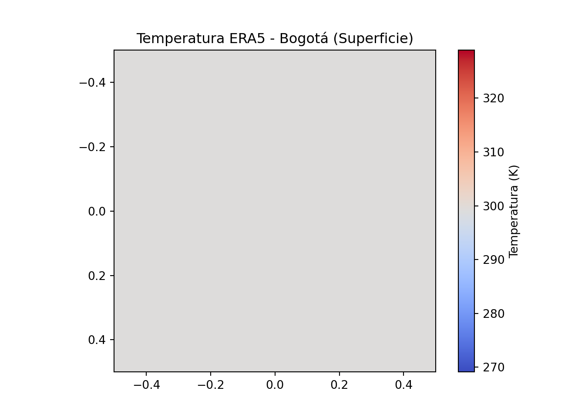
# #| eval: false
library(stars)
library(dplyr)
library(sf)
library(ggplot2)
# ============================================================
# Selección avanzada en cubo 5D (ERA5) con {stars}
# - Selección por dimensiones
# - Recorte espacial (Bogotá)
# - Extracción de variable
# - Reducción a slice 2D + Visualización
# ============================================================
# -------------------------------------------------------------------------
# Selección de atributos mediante indexación posicional
# -------------------------------------------------------------------------
# El filtrado se realiza sobre las dimensiones del cubo (atributos, x, y, level, number, time).
# st_as_stars() materializa el recorte en memoria tras la selección.
# pero la indexación posicional no funciona, porque internamente
# el orden de las dimensiones puede ser diferente a como se despliega en el objeto stars
# mySel1 <- st_as_stars(st_col5d[ , 1:25, 1:35, 1:2, 1, 1 ])
# mySel1 <- st_as_stars(st_col5d[ atributo, x, y, level, number, time])
# mySel1 <- st_as_stars(st_col5d[,1:25,1:35,1:2,1,1])
# Simplificación de la estructura
# adrop() elimina dimensiones unitarias (longitud 1) generadas tras la selección.
# mySel1 <- mySel1 %>% adrop()
# -------------------------------------------------------------------------
# Selección 1: Subconjunto por dimensiones.
# Mediante verbos de dplyr.
# -------------------------------------------------------------------------
# Selecciona:
# - niveles 1 y 2
# - miembro de ensamble 1
# - tiempo 1
sel_dim <- st_col5d %>%
slice(level, 1:2) %>%
slice(number, 1) %>%
slice(time, 1)
# Materializa en memoria
sel_dim <- st_as_stars(sel_dim)Warning in CPL_get_metadata(file, NA_character_, options): GDAL Message 1:
dimension #1 (number) is not a Time dimension.Warning in CPL_read_gdal(as.character(x), as.character(options),
as.character(driver), : GDAL Message 1: The dataset has several variables that
could be identified as vector fields, but not all share the same primary
dimension. Consequently they will be ignored.Warning in CPL_read_gdal(as.character(x), as.character(options),
as.character(driver), : GDAL Message 1: dimension #1 (number) is not a Time
dimension.sel_dimstars object with 3 dimensions and 1 attribute
attribute(s):
Min. 1st Qu. Median Mean 3rd Qu. Max.
download5Dcolombia.nc [K] 246.5078 251.7021 256.4746 257.2614 263.3567 265.8842
dimension(s):
from to offset delta refsys values x/y
x 1 25 -79.35 0.5 WGS 84 NULL [x]
y 1 35 12.75 -0.5 WGS 84 NULL [y]
level 1 2 NA NA udunits [1,2) [millibars], [2,3) [millibars] # -------------------------------------------------------------------------
# Selección 2: Recorte espacial (Bogotá)
# -------------------------------------------------------------------------
# Bounding box en WGS84
bog_bbox <- st_bbox(
c(xmin = -74.25, ymin = 4.45,
xmax = -73.90, ymax = 4.85),
crs = st_crs(4326)
)
# Recorte espacial sobre el proxy
# Nota: Ambos objetos deben tener el mismo CRS
sel_bogota <- st_crop(st_col5d, bog_bbox)
sel_bogota <- st_as_stars(sel_bogota)Warning in CPL_get_metadata(file, NA_character_, options): GDAL Message 1:
dimension #1 (number) is not a Time dimension.Warning in CPL_read_gdal(as.character(x), as.character(options),
as.character(driver), : GDAL Message 1: The dataset has several variables that
could be identified as vector fields, but not all share the same primary
dimension. Consequently they will be ignored.Warning in CPL_read_gdal(as.character(x), as.character(options),
as.character(driver), : GDAL Message 1: dimension #1 (number) is not a Time
dimension.sel_bogotastars object with 5 dimensions and 1 attribute
attribute(s):
Min. 1st Qu. Median Mean 3rd Qu. Max.
download5Dcolombia.nc [K] 186.1205 226.303 259.9218 254.9801 288.8509 303.3165
dimension(s):
from to offset
x 11 11 -79.35
y 16 17 12.75
level 1 37 NA
number 1 10 0
time 1 480 1051896 [hours since 1900-01-01 00:00:00.0]
delta refsys
x 0.5 WGS 84
y -0.5 WGS 84
level NA udunits
number 1 NA
time 3 [hours since 1900-01-01 00:00:00.0] udunits
values x/y
x NULL [x]
y NULL [y]
level [1,2) [millibars],...,[1000,1025) [millibars]
number NULL
time NULL # -------------------------------------------------------------------------
# Slice 2D
# -------------------------------------------------------------------------
# Selecciona:
# - último nivel
# - ensamble 1
# - tiempo 1
capa_2d <- sel_bogota %>%
slice(level, length(st_get_dimension_values(st_col5d, "level"))) %>%
slice(number, 1) %>%
slice(time, 1) %>%
adrop() # borra dimensiones unitarias
capa_2dstars object with 2 dimensions and 1 attribute
attribute(s):
Min. 1st Qu. Median Mean 3rd Qu. Max.
download5Dcolombia.nc [K] 299.0198 299.1434 299.267 299.267 299.3906 299.5142
dimension(s):
from to offset delta refsys x/y
x 11 11 -79.35 0.5 WGS 84 [x]
y 16 17 12.75 -0.5 WGS 84 [y]# Alternativa mediante indexación de atributos
print(capa_2d[[1]])Units: [K]
[,1] [,2]
[1,] 299.5142 299.0198# Verificación de las dimensiones restantes (nombres)
print(names(st_dimensions(capa_2d)))[1] "x" "y"# Verificación de los valores de las coordenadas y metadatos completos
print(st_dimensions(capa_2d)) from to offset delta refsys x/y
x 11 11 -79.35 0.5 WGS 84 [x]
y 16 17 12.75 -0.5 WGS 84 [y]# Extracción de los valores de longitud (x) y latitud (y)
# Se asume que las dimensiones se llaman "x" e "y" tras el procesamiento
eje_x <- st_get_dimension_values(capa_2d, "x")
eje_y <- st_get_dimension_values(capa_2d, "y")
print(eje_x)[1] -74.1print(eje_y)[1] 5.0 4.5# Verificación y extracción robusta
dimensiones_nombres <- names(st_dimensions(capa_2d))
for (dim in dimensiones_nombres) {
valores <- st_get_dimension_values(capa_2d, dim)
cat(paste0("Valores en la dimensión ", dim, ": "), paste(valores, collapse = ", "), "\n")
}Valores en la dimensión x: -74.0999984741211
Valores en la dimensión y: 5, 4.5 # -------------------------------------------------------------------------
# Plot simple según tamaño del objeto stars
# -------------------------------------------------------------------------
# -------------------------------------------------------------------------
# Control de renderizado para resolución espacial baja y variables con unidades
# -------------------------------------------------------------------------
library(viridis)Loading required package: viridisLite# 1. Recuperar dimensiones
dim_x <- dim(capa_2d)["x"]
dim_y <- dim(capa_2d)["y"]
if (dim_x >= 2 && dim_y >= 2) {
plot(capa_2d[1],
main = "Temperatura ERA5 - Bogotá [K]",
col = paleta_colores,
breaks = cortes_leyenda,
key.pos = 4)
} else {
message("Resolución espacial baja. Renderizando matriz nativa sin unidades.")
# -------------------------------------------------------------------------
# Control de renderizado de matriz nativa aplicando el rango global
# -------------------------------------------------------------------------
library(viridis)
# 1. Definir rango global (del stars original sel_bogota)
rango_global <- range(sel_bogota[[1]], na.rm = TRUE)
# 2. Remover la clase 'units' (ej. [K]) para evitar conflictos con image() nativo
rango_num <- as.numeric(rango_global)
# 3. Extraer valores y asegurar estructura de matriz puramente numérica
matriz_valores <- as.numeric(drop(capa_2d[[1]]))
matriz_valores <- matrix(matriz_valores, nrow = dim_x, ncol = dim_y)
# 4. Configurar la paleta de colores
paleta_colores <- viridis::magma(11)
# Dividir la ventana gráfica: 80% para el mapa, 20% para la leyenda
layout(matrix(1:2, ncol = 2), widths = c(4, 1))
# --- PANEL 1: MAPA ---
par(mar = c(5, 4, 4, 0) + 0.1)
# Se utiliza zlim = rango_num para obligar a que los colores de la matriz
# se mapeen estrictamente dentro del rango global, no del local.
image(z = matriz_valores,
main = "Temperatura ERA5 [K]",
col = paleta_colores,
zlim = rango_num,
axes = FALSE)
box()
# --- PANEL 2: LEYENDA ---
par(mar = c(5, 0, 4, 4) + 0.1)
# Se construye el eje de la leyenda basándose en el rango global numérico
eje_leyenda <- seq(rango_num[1], rango_num[2], length.out = length(paleta_colores) + 1)
image(x = 1,
y = eje_leyenda,
z = t(as.matrix(eje_leyenda[-1])),
col = paleta_colores,
zlim = rango_num,
axes = FALSE,
xlab = "",
ylab = "")
# Añadir los valores del rango global en el eje derecho
axis(4)
# Restaurar la configuración de la ventana gráfica
layout(1)
par(mar = c(5, 4, 4, 2) + 0.1)
}Resolución espacial baja. Renderizando matriz nativa sin unidades.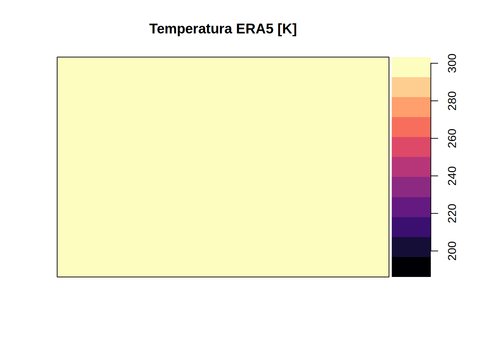
ggplot() +
# geom_stars extrae automáticamente las coordenadas y el valor del píxel
geom_stars(data = capa_2d)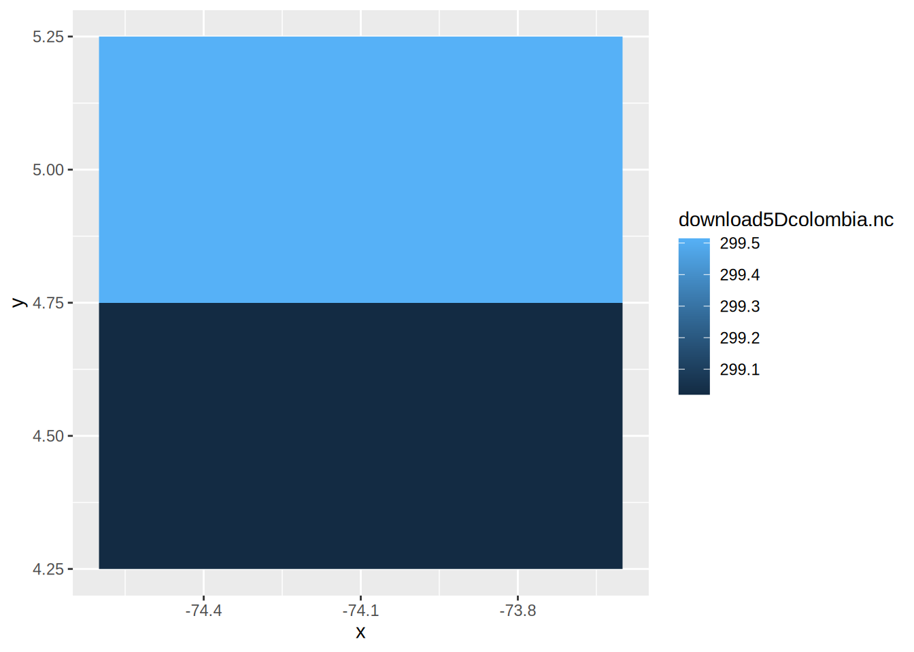
# #| eval: false
j_eval(r"---(
# ============================================================
# Selección avanzada en cubo 5D (ERA5) con Rasters.jl
# - Selección por dimensiones (Z, Ti, number)
# - Recorte espacial (Bogotá)
# - Extracción implícita de variable
# - Reducción a slice 2D + Visualización
# ============================================================
using Rasters
# Usa internamente DiskArrays.jl
# Cuando cargas un NetCDF grande, Julia crea una "vista" del disco duro
using Plots
# -------------------------------------------------------------------------
# Selección 1: Subconjunto por dimensiones
# -------------------------------------------------------------------------
# En Julia, específicamente en el ecosistema de Rasters.jl y DimensionalData.jl, existen dos tipos de dimensiones:
# - Dimensiones Estándar: Son "atajos" predefinidos para los ejes más comunes: X, Y, Z y Ti (para el tiempo).
# Por eso puedes usarlos directamente como Z(1) o Ti(1).
# - Dimensiones Genéricas (Custom): Cualquier otra dimensión que venga en un NetCDF (como number, ensemble,
# level_str, etc.) no tiene un "atajo" de una sola letra. Para referirte a ellas, debes usar el constructor
# genérico Dim{:nombre_de_la_variable}.
#
# Selecciona:
# - niveles 1:2
# - tiempo 1
# Los recortes con cube[...] su puramente perezosos
sel_dim = cube[Z(1:2), Ti(1)]; nothing
# -------------------------------------------------------------------------
# Selección 2: Recorte espacial (Bogotá)
# -------------------------------------------------------------------------
# Filtrado por rango en coordenadas
# Between permite filtrar rangos espaciales directamente
# Los recortes con cube[...] su puramente perezosos
sel_bogota = cube[
X(Between(-74.25, -73.90)),
Y(Between(4.45, 4.85))
]; nothing
# -------------------------------------------------------------------------
# Slice 2D
# -------------------------------------------------------------------------
# Selecciona:
# - último nivel (superficie): Z(37) -> Nivel de 1000 hPa (superficie)
# - miembro de ensamble 1: Dim{:number}(1) -> Miembro de ensamble de control
# - tiempo 1: Ti(1) -> Primer paso de tiempo.
#
# Nota: Si usaras solo - number(1) - Julia daría error porque "number" no es un tipo definido.
capa_2d = sel_bogota[Z(end), Dim{:number}(1), Ti(1)]
# Visualización de la matriz de datos (arreglo de Julia)
println(parent(capa_2d))
# Verificación de las dimensiones restantes
# Nota: escribir f.(x) es equivalente a invocar broadcast(f, x)
println(Rasters.name.(dims(capa_2d)))
# Verificación de los valores de las coordenadas
# Nota: escribir f.(x) es equivalente a invocar broadcast
println(lookup.(dims(capa_2d)))
# Extracción de los valores de longitud (X) y latitud (Y)
# Se asume el uso de selectores DimensionalData.X y DimensionalData.Y
eje_x = lookup(capa_2d, X)
eje_y = lookup(capa_2d, Y)
println(eje_x)
println(eje_y)
# Verificación y extracción robusta
for d in dims(capa_2d)
nom = Rasters.name(d)
vals = lookup(d)
println("Valores en la dimensión $nom: $vals")
end
# -------------------------------------------------------------------------
# Visualización
# -------------------------------------------------------------------------
# Objeto ya reducido a 2D (X, Y)
p_5d = plot(
capa_2d,
title = "Temperatura ERA5 - Bogotá (Superficie)",
c = :thermal,
xrotation=45,
bottom_margin=10Plots.mm
)
savefig(p_5d, "images/c10_era5_bogota_5d_julia.png")
)---")julia> # ============================================================
julia> # Selección avanzada en cubo 5D (ERA5) con Rasters.jl
julia> # - Selección por dimensiones (Z, Ti, number)
julia> # - Recorte espacial (Bogotá)
julia> # - Extracción implícita de variable
julia> # - Reducción a slice 2D + Visualización
julia> # ============================================================
julia> using Rasters
julia> # Usa internamente DiskArrays.jl
julia> # Cuando cargas un NetCDF grande, Julia crea una "vista" del disco duro
julia> using Plots
julia> # -------------------------------------------------------------------------
julia> # Selección 1: Subconjunto por dimensiones
julia> # -------------------------------------------------------------------------
julia> # En Julia, específicamente en el ecosistema de Rasters.jl y DimensionalData.jl, existen dos tipos de dimensiones:
julia> # - Dimensiones Estándar: Son "atajos" predefinidos para los ejes más comunes: X, Y, Z y Ti (para el tiempo).
julia> # Por eso puedes usarlos directamente como Z(1) o Ti(1).
julia> # - Dimensiones Genéricas (Custom): Cualquier otra dimensión que venga en un NetCDF (como number, ensemble,
julia> # level_str, etc.) no tiene un "atajo" de una sola letra. Para referirte a ellas, debes usar el constructor
julia> # genérico Dim{:nombre_de_la_variable}.
julia> #
julia> # Selecciona:
julia> # - niveles 1:2
julia> # - tiempo 1
julia> # Los recortes con cube[...] su puramente perezosos
julia> sel_dim = cube[Z(1:2), Ti(1)]; nothing
julia> # -------------------------------------------------------------------------
julia> # Selección 2: Recorte espacial (Bogotá)
julia> # -------------------------------------------------------------------------
julia> # Filtrado por rango en coordenadas
julia> # Between permite filtrar rangos espaciales directamente
julia> # Los recortes con cube[...] su puramente perezosos
julia> sel_bogota = cube[ X(Between(-74.25, -73.90)), Y(Between(4.45, 4.85)) ]; nothing
julia> # -------------------------------------------------------------------------
julia> # Slice 2D
julia> # -------------------------------------------------------------------------
julia> # Selecciona:
julia> # - último nivel (superficie): Z(37) -> Nivel de 1000 hPa (superficie)
julia> # - miembro de ensamble 1: Dim{:number}(1) -> Miembro de ensamble de control
julia> # - tiempo 1: Ti(1) -> Primer paso de tiempo.
julia> #
julia> # Nota: Si usaras solo - number(1) - Julia daría error porque "number" no es un tipo definido.
julia> capa_2d = sel_bogota[Z(end), Dim{:number}(1), Ti(1)]
┌ 1×1 Raster{Union{Missing, Float64}, 2} t ┐
├──────────────────────────────────────────┴─────────────────── dims ┐
↓ X Mapped{Float32} [-74.1f0] ForwardOrdered Regular Points,
→ Y Mapped{Float32} [4.5f0] ReverseOrdered Regular Points
├────────────────────────────────────────────────────────── metadata ┤
Metadata{Rasters.NCDsource} of Dict{String, Any} with 7 entries:
"missing_value" => -32767
"units" => "K"
"add_offset" => 249.094
"long_name" => "Temperature"
"scale_factor" => 0.00196196
"standard_name" => "air_temperature"
"_FillValue" => -32767
├──────────────────────────────────────────────────────────── raster ┤
missingval: missing
extent: Extent(X = (-74.1f0, -74.1f0), Y = (4.5f0, 4.5f0))
crs: EPSG:4326
mappedcrs: EPSG:4326
└────────────────────────────────────────────────────────────────────┘
↓ → 4.5
-74.1 263.954
julia> # Visualización de la matriz de datos (arreglo de Julia)
julia> println(parent(capa_2d))
Union{Missing, Float64}[263.9535914088366;;]
julia> # Verificación de las dimensiones restantes
julia> # Nota: escribir f.(x) es equivalente a invocar broadcast(f, x)
julia> println(Rasters.name.(dims(capa_2d)))
(:X, :Y)
julia> # Verificación de los valores de las coordenadas
julia> # Nota: escribir f.(x) es equivalente a invocar broadcast
julia> println(lookup.(dims(capa_2d)))
(Float32[-74.1], Float32[4.5])
julia> # Extracción de los valores de longitud (X) y latitud (Y)
julia> # Se asume el uso de selectores DimensionalData.X y DimensionalData.Y
julia> eje_x = lookup(capa_2d, X)
Mapped{Float32} ForwardOrdered Regular DimensionalData.Dimensions.Lookups.Points
wrapping: 1-element Vector{Float32}:
-74.1
julia> eje_y = lookup(capa_2d, Y)
Mapped{Float32} ReverseOrdered Regular DimensionalData.Dimensions.Lookups.Points
wrapping: 1-element Vector{Float32}:
4.5
julia> println(eje_x)
Float32[-74.1]
julia> println(eje_y)
Float32[4.5]
julia> # Verificación y extracción robusta
julia> for d in dims(capa_2d) nom = Rasters.name(d) vals = lookup(d) println("Valores en la dimensión $nom: $vals") end
Valores en la dimensión X: Float32[-74.1] Valores en la dimensión Y: Float32[4.5]
julia> # -------------------------------------------------------------------------
julia> # Visualización
julia> # -------------------------------------------------------------------------
julia> # Objeto ya reducido a 2D (X, Y)
julia> p_5d = plot( capa_2d, title = "Temperatura ERA5 - Bogotá (Superficie)", c = :thermal, xrotation=45, bottom_margin=10Plots.mm )
julia> savefig(p_5d, "images/c10_era5_bogota_5d_julia.png")
"/home/rstudio/work/01_prog_sig/images/c10_era5_bogota_5d_julia.png"
knitr::include_graphics("images/c10_era5_bogota_5d_julia.png")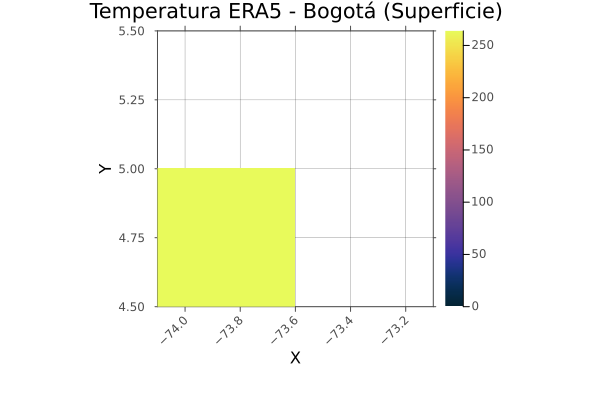
“colapsar” estas dimensiones mediante estadística
# #| eval: false
# 1. Calcular el promedio de temperatura sobre los 10 miembros de ensamble
# Esto reduce la dimensión - number - y nos deja con la 'media del ensamble'
# Nota: Al usar dask el objeto t_mean no se calcula inmediatamente
# Si usas ds = xr.open_dataset(ncfile5d), t_mean va a RAM!
t_mean = ds['t'].mean(dim='number')
t_mean<xarray.DataArray 't' (time: 480, level: 37, latitude: 35, longitude: 25)> Size: 124MB
array([[[[261.81838611, 261.83113887, 261.87920699, ..., 263.71678237,
263.79447614, 263.88296071],
[262.05421417, 262.07834632, 262.14623027, ..., 263.86137911,
263.98262847, 264.11035232],
[262.21097508, 262.26394811, 262.35929955, ..., 263.99557744,
264.14880682, 264.30537153],
...,
[259.02984683, 258.99139234, 259.00316412, ..., 262.27552369,
262.27571989, 262.27179596],
[258.69121187, 258.62568227, 258.62489749, ..., 262.46112548,
262.49428267, 262.51194034],
[258.5371977 , 258.47049093, 258.47578823, ..., 262.5957162 ,
262.64417671, 262.66222678]],
[[254.24187016, 254.43983232, 254.56853715, ..., 254.02291499,
254.03821831, 254.00898505],
[253.903039 , 254.0821663 , 254.16711934, ..., 253.80847234,
253.74117698, 253.64837608],
[253.69742518, 253.81475062, 253.82966155, ..., 253.59579545,
253.46709062, 253.32877217],
...
[298.57833012, 299.32583836, 299.67428314, ..., 299.9210982 ,
299.86380886, 300.05588512],
[300.44631593, 300.42434194, 299.47671338, ..., 299.84929032,
299.73392685, 299.96641957],
[299.73981274, 299.92835747, 299.20243083, ..., 299.62503785,
299.48358025, 299.67016302]],
[[298.73273667, 298.78884884, 298.79493093, ..., 298.30561714,
298.25460607, 298.20693035],
[298.96719136, 298.93344558, 298.84241046, ..., 298.17553893,
298.1555269 , 298.04624551],
[298.99544364, 298.93992006, 298.8508469 , ..., 297.66013102,
297.43038504, 297.40272135],
...,
[299.67153639, 300.68273258, 301.07080904, ..., 301.56993265,
301.56090762, 301.79791286],
[301.7302251 , 301.94054763, 300.90168775, ..., 301.38413467,
301.31291538, 301.60426702],
[300.96623637, 301.39727983, 300.62779759, ..., 301.1163266 ,
300.99252668, 301.20461498]]]], shape=(480, 37, 35, 25))
Coordinates:
* time (time) datetime64[ns] 4kB 2020-01-01 ... 2020-02-29T21:00:00
* level (level) int32 148B 1 2 3 5 7 10 20 ... 875 900 925 950 975 1000
* latitude (latitude) float32 140B 12.5 12.0 11.5 11.0 ... -3.5 -4.0 -4.5
* longitude (longitude) float32 100B -79.1 -78.6 -78.1 ... -68.1 -67.6 -67.1
Attributes:
units: K
long_name: Temperature
standard_name: air_temperature# 2. Seleccionar un nivel de presión específico para Bogotá (aprox 750 hPa)
# Buscamos el nivel más cercano a la presión de la capital
t_bogota_alt = t_mean.sel(level=750, method='nearest')
t_bogota_alt<xarray.DataArray 't' (time: 480, latitude: 35, longitude: 25)> Size: 3MB
array([[[285.2461969 , 285.5452002 , 285.84636166, ..., 285.32075153,
285.29112588, 285.29014489],
[285.7568961 , 286.05982333, 286.30624599, ..., 285.36980063,
285.34664945, 285.36783866],
[286.08984138, 286.39688872, 286.56954155, ..., 285.28955631,
285.40099585, 285.47378471],
...,
[286.35941521, 287.685899 , 287.78615535, ..., 285.95191531,
285.9797752 , 285.94838378],
[286.39139523, 287.43712198, 287.7404416 , ..., 285.94367507,
285.97800943, 285.936612 ],
[286.78359181, 287.2889937 , 287.66510218, ..., 286.06021572,
286.11318875, 286.0615891 ]],
[[284.47220215, 284.79455282, 285.13946607, ..., 285.0617723 ,
285.01860909, 285.01527375],
[285.09630286, 285.43395685, 285.76768691, ..., 285.00958406,
284.95111753, 284.90834672],
[285.61131838, 285.91954291, 286.1157393 , ..., 284.82417847,
284.83261492, 284.8332035 ],
...
[287.26564633, 286.3005563 , 285.64349459, ..., 285.34292172,
285.39981868, 285.42493181],
[286.43043831, 285.50419515, 285.52126424, ..., 285.31388466,
285.33566246, 285.3819648 ],
[286.83499526, 285.63976686, 285.66801914, ..., 285.29975852,
285.27189863, 285.33487767]],
[[284.82751381, 284.94895937, 285.12475134, ..., 286.69118331,
286.89640473, 287.02589435],
[284.97544589, 285.13024484, 285.3388016 , ..., 286.31605581,
286.54227025, 286.6917719 ],
[285.18262927, 285.41649537, 285.6972524 , ..., 285.545004 ,
285.74571291, 286.04608958],
...,
[286.92406842, 286.42867254, 286.03883031, ..., 285.87814547,
285.91836573, 286.10848003],
[286.52108104, 285.99135079, 286.11240396, ..., 285.94877617,
286.0180335 , 286.1865662 ],
[286.93328965, 286.03176724, 286.16753515, ..., 285.88108842,
286.00920466, 286.15772533]]], shape=(480, 35, 25))
Coordinates:
* time (time) datetime64[ns] 4kB 2020-01-01 ... 2020-02-29T21:00:00
* latitude (latitude) float32 140B 12.5 12.0 11.5 11.0 ... -3.5 -4.0 -4.5
* longitude (longitude) float32 100B -79.1 -78.6 -78.1 ... -68.1 -67.6 -67.1
level int32 4B 750
Attributes:
units: K
long_name: Temperature
standard_name: air_temperatureprint(f"Estructura resultante: {t_bogota_alt.dims}")Estructura resultante: ('time', 'latitude', 'longitude')# #| eval: false
# 1. Reducir la dimensión de ensamble (number) calculando la media
# Usamos st_apply sobre las dimensiones espaciales, temporales y de nivel
t_mean <- st_apply(st_col5d, c("x", "y", "level", "time"), mean)
# 2. Verificar que el nivel 27 corresponda a 750 hPa (Bogotá)
# Extracción de los valores de la dimensión "level"
valores_dimension <- st_get_dimension_values(st_col5d, "level")
valores_dimensionUnits: [millibars]
[1] 1 2 3 5 7 10 20 30 50 70 100 125 150 175 200
[16] 225 250 300 350 400 450 500 550 600 650 700 750 775 800 825
[31] 850 875 900 925 950 975 1000# Generar índices a partir de los valores
indices_dimension <- seq_along(st_get_dimension_values(st_col5d, "level"))
indices_dimension [1] 1 2 3 4 5 6 7 8 9 10 11 12 13 14 15 16 17 18 19 20 21 22 23 24 25
[26] 26 27 28 29 30 31 32 33 34 35 36 37# Extraer la extensión numérica desde las dimensiones del objeto
# indices_dimension <- 1:dim(st_col5d)["level"]
# indices_dimension
# Identificación de la posición del valor 750 en la dimensión especificada
indice_objetivo <- which(units::drop_units(valores_dimension) == 750)
indice_objetivo[1] 27# 2. Seleccionar el nivel 27 (750 hPa)
t_level_bog <- t_mean %>% slice(level, indice_objetivo)
# El objeto proxy tiene operaciones pendientes
# así que la impresión de su contenido no refleja esas operaciones
print(t_level_bog)stars_proxy object with 1 attribute in 1 file(s):
$download5Dcolombia.nc
[1] "[...]/download5Dcolombia.nc"
dimension(s):
from to offset
x 1 25 -79.35
y 1 35 12.75
level 1 37 NA
number 1 10 0
time 1 480 1051896 [hours since 1900-01-01 00:00:00.0]
delta refsys
x 0.5 WGS 84
y -0.5 WGS 84
level NA udunits
number 1 NA
time 3 [hours since 1900-01-01 00:00:00.0] udunits
values x/y
x NULL [x]
y NULL [y]
level [1,2) [millibars],...,[1000,1025) [millibars]
number NULL
time NULL
call_list:
[[1]]
st_apply(X = X, MARGIN = MARGIN, FUN = FUN, CLUSTER = CLUSTER,
PROGRESS = PROGRESS, FUTURE = FUTURE, rename = rename, .fname = .fname)
attr(,".Environment")
<environment: 0x6411d2e87350>
[[2]]
slice(.data = .data, along = level, index = indice_objetivo)
attr(,".Environment")
<environment: 0x6411d2a06438>
This object has pending lazy operations: dimensions as printed may not reflect this.# La inspección de la estructura lógica de la dimensión level
# tampoco está actualizada (ignora operaciones lazy)
dimensiones_actuales <- st_dimensions(t_level_bog)
print(dimensiones_actuales$level)$from
[1] 1
$to
[1] 37
$offset
[1] NA
$delta
[1] NA
$refsys
[1] "udunits"
$point
[1] NA
$values
$start
Units: [millibars]
[1] 1 2 3 5 7 10 20 30 50 70 100 125 150 175 200
[16] 225 250 300 350 400 450 500 550 600 650 700 750 775 800 825
[31] 850 875 900 925 950 975 1000
$end
Units: [millibars]
[1] 2 3 5 7 10 20 30 50 70 100 125 150 175 200 225
[16] 250 300 350 400 450 500 550 600 650 700 750 775 800 825 850
[31] 875 900 925 950 975 1000 1025
attr(,"class")
[1] "intervals"
attr(,"class")
[1] "dimension"# Usar la función genérica dim() tambpoco funciona.
# resultante tras aplicar la lista de llamadas pendientes
# Verificación del tamaño del cubo tras la operación slice
dim(t_level_bog) x y level number time
25 35 37 10 480 # Solución para ver el estado real de t_level_bog:
# 1. Convertir a memoria (puede ser muy pesado)
# t_level_bog <- st_as_stars(t_level_bog)
#
# Nota: La persistencia de las dimensiones originales (level = 37 y number = 10) en la salida de dim() y print() tras aplicar st_apply y slice indica que el objeto stars_proxy mantiene una vinculación estricta con los metadatos del archivo NetCDF original. En esta configuración, las operaciones no modifican el encabezado del objeto en memoria para evitar inconsistencias con el archivo físico hasta que se fuerce una evaluación
# 2. Solución alternativa: realizar una materialización selectiva
# Materialización de un subconjunto mínimo (un solo píxel espacial)
# Esto fuerza la ejecución de la call_list solo para una celda
verificacion_minima <- t_level_bog %>%
slice(x, 1) %>%
slice(y, 1) %>%
st_as_stars()Warning in CPL_get_metadata(file, NA_character_, options): GDAL Message 1:
dimension #1 (number) is not a Time dimension.Warning in CPL_read_gdal(as.character(x), as.character(options),
as.character(driver), : GDAL Message 1: The dataset has several variables that
could be identified as vector fields, but not all share the same primary
dimension. Consequently they will be ignored.Warning in CPL_read_gdal(as.character(x), as.character(options),
as.character(driver), : GDAL Message 1: dimension #1 (number) is not a Time
dimension.# Inspección de las dimensiones resultantes
print(dim(verificacion_minima)) x y time
1 1 480 # Inspección de las dimensiones resultantes
# Si la lógica es correcta, el resultado de dim() para verificacion_minima debería omitir la dimensión number (eliminada por mean) y mostrar level = 1.
print(dim(verificacion_minima)) x y time
1 1 480 # Solucion alternativa 3: downsample
# Carga de una versión simplificada (1 de cada 20 píxeles) para inspección
t_preview <- st_as_stars(t_level_bog, downsample = 20)Warning in CPL_get_metadata(file, NA_character_, options): GDAL Message 1:
dimension #1 (number) is not a Time dimension.Warning in CPL_read_gdal(as.character(x), as.character(options),
as.character(driver), : GDAL Message 1: The dataset has several variables that
could be identified as vector fields, but not all share the same primary
dimension. Consequently they will be ignored.Warning in CPL_read_gdal(as.character(x), as.character(options),
as.character(driver), : GDAL Message 1: dimension #1 (number) is not a Time
dimension.# Verificación de que 'number' ha desaparecido y 'level' es 1
print(t_preview)stars object with 3 dimensions and 1 attribute
attribute(s):
Min. 1st Qu. Median Mean 3rd Qu. Max.
mean 281.8553 285.103 285.8083 285.884 286.7199 289.4993
dimension(s):
from to offset
x 1 2 -79.35
y 1 2 12.75
time 1 480 1051896 [hours since 1900-01-01 00:00:00.0]
delta refsys x/y
x 6.25 WGS 84 [x]
y -8.75 WGS 84 [y]
time 3 [hours since 1900-01-01 00:00:00.0] udunits # #| eval: false
j_eval('
using Statistics
# 1. Promediar sobre la dimensión de ensamble (4ta dimensión o number)
# dropdims elimina la dimensión de tamaño 1 restante
t_mean = dropdims(mean(cube, dims=4), dims=4)
#t_mean = dropdims(mean(cube, dims=Dim{:number}), dims=Dim{:number})
# 2. Seleccionar nivel de presión por valor exacto (ej. 750 hPa)
t_bog = t_mean[Z(At(1000))]
println(size(t_bog))
# 3. Selección de nivel (Z) e instante de tiempo (Ti)
# Al agregar Ti(1), reducimos el objeto de (X, Y, Ti) a (X, Y)
t_bog_slice = t_mean[Z(At(1000)), Ti(1)]
println(size(t_bog_slice))
p_reduccion = plot(t_bog_slice, title="Temperatura Media Ensamble (750 hPa)", c=:magma)
savefig(p_reduccion, "images/c10_reduccion_julia.png")
')julia> using Statistics
julia> # 1. Promediar sobre la dimensión de ensamble (4ta dimensión o number)
julia> # dropdims elimina la dimensión de tamaño 1 restante
julia> t_mean = dropdims(mean(cube, dims=4), dims=4)
┌ 25×35×37×480 Raster{Union{Missing, Float64}, 4} t ┐
├───────────────────────────────────────────────────┴──────────────────── dims ┐
↓ X Mapped{Float32} [-79.1f0, …, -67.1f0] ForwardOrdered Regular Points,
→ Y Mapped{Float32} [12.5f0, …, -4.5f0] ReverseOrdered Regular Points,
↗ Z Sampled{Int32} [1, …, 1000] ForwardOrdered Irregular Points,
⬔ Ti Sampled{Dates.DateTime} [Dates.DateTime("2020-01-01T00:00:00"), …, Dates.DateTime("2020-02-29T21:00:00")] ForwardOrdered Irregular Points
├──────────────────────────────────────────────────────────────────── metadata ┤
Metadata{Rasters.NCDsource} of Dict{String, Any} with 7 entries:
"missing_value" => -32767
"units" => "K"
"add_offset" => 249.094
"long_name" => "Temperature"
"scale_factor" => 0.00196196
"standard_name" => "air_temperature"
"_FillValue" => -32767
├────────────────────────────────────────────────────────────────────── raster ┤
missingval: missing
extent: Extent(X = (-79.1f0, -67.1f0), Y = (-4.5f0, 12.5f0), Z = (1, 1000), Ti = (Dates.DateTime("2020-01-01T00:00:00"), Dates.DateTime("2020-02-29T21:00:00")))
crs: EPSG:4326
mappedcrs: EPSG:4326
└──────────────────────────────────────────────────────────────────────────────┘
[:, :, 1, 1]
↓ → 12.5 12.0 11.5 11.0 10.5 10.0 9.5 9.0 8.5 8.0 7.5 7.0 6.5 6.0 5.5 5.0 4.5 4.0 3.5 3.0 2.5 2.0 1.5 1.0 0.5 0.0 -0.5 -1.0 -1.5 -2.0 -2.5 -3.0 -3.5 -4.0 -4.5
-79.1 261.818 262.054 262.211 262.328 262.445 262.593 262.783 263.006 263.231 263.421 263.546 263.599 263.594 263.575 263.59 263.674 263.822 263.994 264.123 264.139 264.006 263.733 263.359 262.927 262.465 261.994 261.529 261.09 260.68 260.286 259.88 259.452 259.03 258.691 258.537
-78.6 261.831 262.078 262.264 262.422 262.583 262.768 262.98 263.205 263.415 263.576 263.676 263.714 263.712 263.708 263.738 263.813 263.915 264.004 264.034 263.962 263.776 263.495 263.148 262.76 262.349 261.927 261.513 261.127 260.759 260.378 259.946 259.465 258.991 258.626 258.47
-78.1 261.879 262.146 262.359 262.546 262.73 262.927 263.138 263.349 263.539 263.686 263.783 263.833 263.856 263.88 263.923 263.978 264.017 264.007 263.926 263.764 263.535 263.257 262.947 262.611 262.251 261.882 261.527 261.2 260.875 260.5 260.04 259.514 259.003 258.625 258.476
-77.6 261.978 262.261 262.487 262.679 262.86 263.044 263.238 263.432 263.611 263.762 263.876 263.959 264.02 264.072 264.116 264.134 264.097 263.985 263.802 263.567 263.307 263.042 262.773 262.488 262.181 261.871 261.584 261.315 261.019 260.635 260.142 259.582 259.054 258.68 258.541
-77.1 262.128 262.411 262.627 262.798 262.951 263.108 263.28 263.464 263.649 263.822 263.973 264.098 264.194 264.262 264.291 264.259 264.138 263.93 263.663 263.377 263.109 262.866 262.635 262.395 262.143 261.898 261.674 261.445 261.154 260.747 260.225 259.65 259.131 258.779 258.648
-76.6 262.313 262.576 262.757 262.885 262.995 263.121 263.28 263.47 263.677 263.883 264.072 264.23 264.35 264.421 264.424 264.332 264.134 263.849 263.525 263.214 262.948 262.729 262.531 262.335 262.135 261.947 261.767 261.554 261.246 260.813 260.277 259.715 259.232 258.912 258.779
-76.1 262.514 262.735 262.861 262.932 262.998 263.1 263.258 263.466 263.702 263.94 264.161 264.349 264.488 264.551 264.514 264.359 264.091 263.751 263.396 263.079 262.826 262.631 262.466 262.308 262.154 262.008 261.852 261.63 261.289 260.83 260.301 259.782 259.356 259.07 258.917
-75.6 262.705 262.869 262.93 262.944 262.974 263.065 263.235 263.466 263.729 263.995 264.243 264.455 264.603 264.649 264.57 264.358 264.035 263.657 263.287 262.979 262.752 262.586 262.452 262.325 262.201 262.078 261.917 261.659 261.277 260.804 260.306 259.855 259.498 259.24 259.047
-75.1 262.869 262.969 262.968 262.937 262.943 263.035 263.22 263.472 263.755 264.041 264.31 264.537 264.684 264.708 264.582 264.318 263.959 263.568 263.208 262.927 262.733 262.598 262.489 262.382 262.274 262.146 261.948 261.637 261.219 260.75 260.306 259.939 259.651 259.408 259.161
-74.6 262.999 263.042 262.995 262.936 262.932 263.028 263.223 263.485 263.779 264.082 264.373 264.614 264.755 264.746 264.572 264.262 263.878 263.487 263.156 262.919 262.766 262.661 262.57 262.472 262.358 262.197 261.94 261.57 261.126 260.684 260.316 260.039 259.814 259.579 259.277
-74.1 263.102 263.101 263.026 262.954 262.95 263.053 263.251 263.513 263.814 264.135 264.444 264.688 264.803 264.754 264.546 264.214 263.822 263.445 263.15 262.96 262.844 262.764 262.685 262.585 262.444 262.227 261.899 261.475 261.024 260.633 260.351 260.162 259.993 259.762 259.415
-73.6 263.187 263.156 263.069 262.997 263.0 263.102 263.292 263.55 263.861 264.2 264.519 264.75 264.835 264.753 264.52 264.174 263.791 263.452 263.204 263.055 262.97 262.908 262.832 262.714 262.529 262.242 261.842 261.379 260.943 260.616 260.423 260.314 260.193 259.968 259.592
-73.1 263.259 263.215 263.132 263.068 263.075 263.166 263.341 263.596 263.917 264.27 264.592 264.808 264.867 264.757 264.502 264.157 263.804 263.515 263.318 263.209 263.151 263.098 263.011 262.859 262.612 262.249 261.789 261.305 260.903 260.649 260.54 260.496 260.411 260.196 259.811
-72.6 263.323 263.276 263.205 263.154 263.159 263.239 263.406 263.664 263.991 264.343 264.653 264.846 264.874 264.738 264.479 264.166 263.868 263.635 263.492 263.423 263.38 263.32 263.206 263.007 262.693 262.261 261.757 261.276 260.923 260.742 260.702 260.706 260.645 260.443 260.062
-72.1 263.379 263.336 263.279 263.239 263.245 263.32 263.488 263.75 264.081 264.425 264.711 264.866 264.862 264.714 264.473 264.203 263.965 263.8 263.713 263.671 263.63 263.553 263.403 263.149 262.77 262.282 261.757 261.304 261.009 260.896 260.907 260.94 260.895 260.704 260.34
-71.6 263.427 263.393 263.351 263.324 263.335 263.415 263.59 263.861 264.194 264.525 264.778 264.892 264.856 264.705 264.489 264.268 264.097 264.0 263.956 263.928 263.88 263.776 263.584 263.275 262.838 262.316 261.799 261.391 261.162 261.105 261.148 261.193 261.154 260.981 260.647
-71.1 263.467 263.445 263.421 263.409 263.433 263.53 263.723 264.006 264.336 264.642 264.852 264.926 264.868 264.72 264.535 264.374 264.27 264.224 264.205 264.179 264.112 263.976 263.742 263.382 262.905 262.371 261.881 261.532 261.365 261.349 261.406 261.451 261.418 261.271 260.984
-70.6 263.501 263.496 263.491 263.497 263.545 263.67 263.888 264.182 264.501 264.771 264.934 264.972 264.906 264.776 264.636 264.533 264.48 264.463 264.452 264.414 264.324 264.157 263.884 263.484 262.979 262.449 261.998 261.707 261.589 261.598 261.656 261.695 261.672 261.564 261.341
-70.1 263.534 263.548 263.564 263.594 263.672 263.829 264.071 264.371 264.67 264.899 265.022 265.041 264.981 264.884 264.793 264.737 264.713 264.706 264.689 264.636 264.527 264.336 264.027 263.592 263.067 262.545 262.13 261.881 261.795 261.812 261.862 261.9 261.899 261.841 261.699
-69.6 263.567 263.606 263.644 263.703 263.813 263.999 264.259 264.554 264.824 265.016 265.116 265.137 265.103 265.049 265.002 264.973 264.958 264.946 264.918 264.86 264.743 264.532 264.19 263.718 263.171 262.646 262.247 262.017 261.94 261.952 261.997 262.042 262.075 262.08 262.027
-69.1 263.605 263.673 263.739 263.828 263.969 264.176 264.441 264.717 264.956 265.126 265.225 265.265 265.27 265.261 265.246 265.224 265.202 265.179 265.151 265.098 264.981 264.751 264.372 263.856 263.273 262.73 262.32 262.083 261.995 261.999 262.044 262.112 262.19 262.264 262.293
-68.6 263.653 263.757 263.856 263.975 264.139 264.356 264.61 264.861 265.074 265.237 265.35 265.424 265.474 265.499 265.495 265.467 265.43 265.404 265.386 265.35 265.238 264.985 264.561 263.989 263.356 262.772 262.331 262.07 261.964 261.963 262.022 262.122 262.253 262.389 262.483
-68.1 263.717 263.861 263.996 264.142 264.319 264.533 264.768 264.993 265.19 265.355 265.494 265.607 265.691 265.733 265.725 265.682 265.635 265.614 265.62 265.604 265.491 265.209 264.73 264.093 263.4 262.767 262.287 261.996 261.873 261.873 261.954 262.094 262.276 262.461 262.596
-67.6 263.794 263.983 264.149 264.316 264.499 264.703 264.917 265.124 265.315 265.493 265.656 265.796 265.894 265.931 265.909 265.851 265.804 265.801 265.833 265.834 265.713 265.391 264.849 264.144 263.393 262.715 262.201 261.886 261.753 261.758 261.867 262.05 262.276 262.494 262.644
-67.1 263.883 264.11 264.305 264.486 264.67 264.863 265.063 265.261 265.455 265.646 265.824 265.969 266.06 266.078 266.032 265.961 265.923 265.946 266.002 266.011 265.87 265.501 264.897 264.133 263.334 262.626 262.092 261.767 261.633 261.653 261.789 262.01 262.272 262.512 262.662
julia> #t_mean = dropdims(mean(cube, dims=Dim{:number}), dims=Dim{:number})
julia> # 2. Seleccionar nivel de presión por valor exacto (ej. 750 hPa)
julia> t_bog = t_mean[Z(At(1000))]
┌ 25×35×480 Raster{Union{Missing, Float64}, 3} t ┐
├────────────────────────────────────────────────┴─────────────────────── dims ┐
↓ X Mapped{Float32} [-79.1f0, …, -67.1f0] ForwardOrdered Regular Points,
→ Y Mapped{Float32} [12.5f0, …, -4.5f0] ReverseOrdered Regular Points,
↗ Ti Sampled{Dates.DateTime} [Dates.DateTime("2020-01-01T00:00:00"), …, Dates.DateTime("2020-02-29T21:00:00")] ForwardOrdered Irregular Points
├──────────────────────────────────────────────────────────────────── metadata ┤
Metadata{Rasters.NCDsource} of Dict{String, Any} with 7 entries:
"missing_value" => -32767
"units" => "K"
"add_offset" => 249.094
"long_name" => "Temperature"
"scale_factor" => 0.00196196
"standard_name" => "air_temperature"
"_FillValue" => -32767
├────────────────────────────────────────────────────────────────────── raster ┤
missingval: missing
extent: Extent(X = (-79.1f0, -67.1f0), Y = (-4.5f0, 12.5f0), Ti = (Dates.DateTime("2020-01-01T00:00:00"), Dates.DateTime("2020-02-29T21:00:00")))
crs: EPSG:4326
mappedcrs: EPSG:4326
└──────────────────────────────────────────────────────────────────────────────┘
[:, :, 1]
↓ → 12.5 12.0 11.5 11.0 10.5 10.0 9.5 9.0 8.5 8.0 7.5 7.0 6.5 6.0 5.5 5.0 4.5 4.0 3.5 3.0 2.5 2.0 1.5 1.0 0.5 0.0 -0.5 -1.0 -1.5 -2.0 -2.5 -3.0 -3.5 -4.0 -4.5
-79.1 300.024 300.134 300.207 300.299 300.462 300.319 299.826 299.694 299.862 299.737 299.459 299.154 298.886 298.812 298.784 298.883 299.087 299.282 299.403 299.366 299.469 299.489 299.501 300.15 300.913 300.798 300.113 299.416 298.628 298.518 298.225 297.723 299.675 301.806 301.345
-78.6 299.975 300.138 300.234 300.316 300.392 300.306 299.961 299.682 299.633 299.467 299.184 298.848 298.629 298.77 299.023 299.221 299.343 299.414 299.522 299.666 299.762 299.664 299.831 300.249 299.881 298.565 297.393 297.274 298.057 299.044 299.225 299.7 301.933 303.502 303.327
-78.1 299.908 300.08 300.162 300.174 300.27 300.268 299.883 299.582 299.577 299.394 299.099 298.9 298.845 298.869 298.982 299.254 299.556 299.896 300.1 300.02 299.884 299.922 299.988 299.463 298.747 298.679 298.748 299.116 300.644 302.315 302.64 302.369 302.507 302.604 302.675
-77.6 299.84 299.993 300.018 299.921 299.996 300.141 300.1 300.076 299.869 299.473 299.156 298.842 298.758 298.763 298.946 299.455 299.882 299.989 299.674 299.773 300.584 300.739 299.885 299.295 300.123 301.726 302.166 301.504 301.299 301.56 301.726 301.961 302.38 302.841 303.061
-77.1 299.763 299.903 299.855 299.691 299.809 300.16 300.423 300.524 300.239 299.821 299.418 299.091 299.228 299.293 299.215 299.246 299.494 300.097 300.33 300.262 300.24 300.129 300.521 301.386 301.872 301.828 301.678 301.765 301.967 302.053 302.289 302.677 303.006 303.162 303.048
-76.6 299.742 299.846 299.739 299.559 299.791 300.262 300.415 300.413 300.365 300.039 299.658 299.699 299.754 299.411 299.333 299.532 299.863 300.361 300.621 300.32 299.273 299.27 301.285 302.469 301.744 301.216 301.72 302.561 303.053 303.135 303.142 303.038 302.964 302.886 302.725
-76.1 299.663 299.708 299.66 299.504 299.661 300.094 300.272 300.222 300.288 300.275 300.432 300.747 300.555 300.449 300.436 300.221 300.379 299.508 298.268 299.375 301.086 301.861 302.384 301.92 301.272 301.813 302.639 303.153 303.35 303.211 303.024 302.848 302.856 302.833 302.663
-75.6 299.549 299.666 299.812 299.926 299.924 299.887 299.978 300.097 300.388 300.509 300.581 300.711 300.818 301.2 299.991 298.567 300.391 301.666 300.44 300.897 302.64 302.882 302.148 301.633 301.693 302.002 302.31 302.92 303.392 303.366 303.22 303.015 302.835 302.597 302.275
-75.1 299.566 299.709 299.8 300.308 300.615 300.433 300.222 300.113 300.42 300.35 300.118 300.383 300.602 300.783 299.891 299.391 301.751 303.807 303.465 302.533 301.947 301.816 301.995 302.26 302.346 302.332 302.634 302.923 302.806 302.642 302.645 302.644 302.65 302.65 302.514
-74.6 299.572 299.631 299.66 300.488 301.228 301.47 301.16 300.35 300.299 300.595 300.934 301.376 301.213 301.36 301.802 301.698 301.036 300.286 300.867 301.858 302.029 302.468 302.914 302.836 302.636 302.579 302.708 302.662 302.587 302.652 302.634 302.548 302.358 302.156 302.119
-74.1 299.578 299.684 299.748 300.552 301.299 301.691 301.422 300.441 300.099 300.483 300.788 300.732 300.669 300.893 300.393 299.312 298.962 299.3 300.476 301.918 302.474 302.732 302.828 302.73 302.763 302.656 302.478 302.383 302.374 302.28 302.197 302.228 302.068 301.871 301.861
-73.6 299.698 300.0 299.903 300.489 301.815 302.682 302.287 301.324 300.729 300.881 301.112 301.041 301.004 300.063 298.442 298.292 300.226 301.899 302.135 302.31 302.532 302.631 302.667 302.479 302.328 302.242 302.262 302.202 301.999 301.874 301.988 302.106 301.993 301.853 301.695
-73.1 299.703 300.516 300.739 301.211 303.066 304.216 303.367 302.241 301.686 302.034 301.857 300.689 299.688 298.375 298.67 300.884 302.34 302.636 302.544 302.776 302.873 302.642 302.426 302.106 301.902 301.818 301.775 301.641 301.525 301.518 301.557 301.624 301.654 301.618 301.46
-72.6 299.482 300.604 301.216 301.413 302.648 303.121 302.149 301.425 301.276 302.126 301.481 298.961 297.898 298.291 300.489 302.961 303.437 303.523 303.639 303.386 302.946 302.525 302.206 301.887 301.687 301.505 301.384 301.236 301.04 300.838 300.774 300.953 301.153 301.38 301.528
-72.1 299.375 300.037 300.22 300.342 301.411 301.747 301.312 301.024 300.849 302.047 302.509 301.185 300.846 301.578 302.839 303.711 303.785 303.894 303.57 303.062 302.784 302.483 302.132 301.752 301.375 301.07 300.949 300.776 300.535 300.41 300.436 300.513 300.534 300.769 301.071
-71.6 299.209 299.348 299.219 299.658 300.926 301.336 301.168 301.058 301.182 302.385 303.365 303.36 303.124 303.011 303.408 303.755 303.736 303.453 303.066 302.911 302.57 301.992 301.589 301.4 301.219 300.935 300.641 300.365 300.143 300.011 299.967 300.064 300.225 300.38 300.568
-71.1 298.952 298.788 298.854 299.837 301.187 301.341 300.878 300.704 301.491 302.941 303.835 304.312 304.249 304.006 304.102 303.985 303.692 303.287 302.935 302.606 302.151 301.765 301.341 300.973 300.734 300.521 300.345 300.25 300.11 299.989 299.98 299.978 299.934 299.809 299.86
-70.6 299.019 298.629 298.792 300.577 302.93 303.533 302.795 302.049 302.341 303.428 304.25 304.77 304.759 304.679 304.582 304.024 303.483 302.974 302.581 302.319 302.065 301.627 301.005 300.637 300.431 300.324 300.241 300.086 299.869 299.817 299.892 299.744 299.582 299.538 299.608
-70.1 299.043 298.67 298.8 300.785 303.796 305.05 304.539 303.933 303.985 304.252 304.195 304.216 304.434 304.72 304.656 304.135 303.551 302.942 302.522 302.252 301.912 301.338 300.804 300.536 300.277 300.219 300.171 299.957 299.727 299.621 299.626 299.543 299.518 299.488 299.474
-69.6 298.93 298.628 298.673 299.91 302.297 304.206 304.863 305.103 305.43 305.334 304.733 304.62 305.172 305.364 304.819 304.058 303.343 302.753 302.324 301.83 301.418 301.15 300.829 300.432 300.13 300.144 300.127 299.915 299.63 299.429 299.404 299.358 299.334 299.285 299.28
-69.1 298.919 298.641 298.484 298.736 300.175 302.965 305.275 306.022 305.892 305.54 305.131 304.818 304.942 305.138 304.865 304.223 303.36 302.55 302.033 301.617 301.18 300.823 300.532 300.368 300.352 300.333 300.19 299.923 299.604 299.362 299.234 299.107 299.153 299.325 299.384
-68.6 298.854 298.662 298.377 298.004 298.9 302.236 305.436 306.306 305.855 305.494 305.347 304.742 304.478 304.855 304.517 303.482 302.64 301.969 301.41 301.171 301.007 300.809 300.607 300.447 300.365 300.243 300.074 299.816 299.596 299.365 299.088 298.923 298.958 299.096 299.132
-68.1 298.759 298.625 298.392 298.052 299.088 302.656 305.886 306.612 306.085 305.483 305.016 304.394 304.198 304.195 303.168 301.839 301.373 301.311 301.078 300.969 300.973 300.951 300.772 300.494 300.34 300.184 299.98 299.664 299.407 299.189 298.969 298.864 298.867 299.047 299.164
-67.6 298.692 298.511 298.318 298.302 299.514 302.795 305.788 306.552 306.024 305.026 304.019 303.37 303.271 303.266 302.925 302.381 301.734 301.229 301.056 301.161 301.142 301.045 300.936 300.675 300.38 299.991 299.728 299.56 299.368 299.177 298.936 298.747 298.75 298.983 299.135
-67.1 298.624 298.429 298.236 298.228 299.099 301.689 304.588 305.856 305.548 304.396 303.165 302.387 302.261 302.656 303.163 303.152 302.43 301.556 301.116 301.246 301.314 301.256 301.14 300.715 300.292 299.895 299.659 299.574 299.384 299.103 298.712 298.562 298.798 299.031 299.171
julia> println(size(t_bog))
(25, 35, 480)
julia> # 3. Selección de nivel (Z) e instante de tiempo (Ti)
julia> # Al agregar Ti(1), reducimos el objeto de (X, Y, Ti) a (X, Y)
julia> t_bog_slice = t_mean[Z(At(1000)), Ti(1)]
┌ 25×35 Raster{Union{Missing, Float64}, 2} t ┐
├────────────────────────────────────────────┴──────────────────────── dims ┐
↓ X Mapped{Float32} [-79.1f0, …, -67.1f0] ForwardOrdered Regular Points,
→ Y Mapped{Float32} [12.5f0, …, -4.5f0] ReverseOrdered Regular Points
├───────────────────────────────────────────────────────────────── metadata ┤
Metadata{Rasters.NCDsource} of Dict{String, Any} with 7 entries:
"missing_value" => -32767
"units" => "K"
"add_offset" => 249.094
"long_name" => "Temperature"
"scale_factor" => 0.00196196
"standard_name" => "air_temperature"
"_FillValue" => -32767
├─────────────────────────────────────────────────────────────────── raster ┤
missingval: missing
extent: Extent(X = (-79.1f0, -67.1f0), Y = (-4.5f0, 12.5f0))
crs: EPSG:4326
mappedcrs: EPSG:4326
└───────────────────────────────────────────────────────────────────────────┘
↓ → 12.5 12.0 11.5 11.0 10.5 10.0 9.5 9.0 8.5 8.0 7.5 7.0 6.5 6.0 5.5 5.0 4.5 4.0 3.5 3.0 2.5 2.0 1.5 1.0 0.5 0.0 -0.5 -1.0 -1.5 -2.0 -2.5 -3.0 -3.5 -4.0 -4.5
-79.1 300.024 300.134 300.207 300.299 300.462 300.319 299.826 299.694 299.862 299.737 299.459 299.154 298.886 298.812 298.784 298.883 299.087 299.282 299.403 299.366 299.469 299.489 299.501 300.15 300.913 300.798 300.113 299.416 298.628 298.518 298.225 297.723 299.675 301.806 301.345
-78.6 299.975 300.138 300.234 300.316 300.392 300.306 299.961 299.682 299.633 299.467 299.184 298.848 298.629 298.77 299.023 299.221 299.343 299.414 299.522 299.666 299.762 299.664 299.831 300.249 299.881 298.565 297.393 297.274 298.057 299.044 299.225 299.7 301.933 303.502 303.327
-78.1 299.908 300.08 300.162 300.174 300.27 300.268 299.883 299.582 299.577 299.394 299.099 298.9 298.845 298.869 298.982 299.254 299.556 299.896 300.1 300.02 299.884 299.922 299.988 299.463 298.747 298.679 298.748 299.116 300.644 302.315 302.64 302.369 302.507 302.604 302.675
-77.6 299.84 299.993 300.018 299.921 299.996 300.141 300.1 300.076 299.869 299.473 299.156 298.842 298.758 298.763 298.946 299.455 299.882 299.989 299.674 299.773 300.584 300.739 299.885 299.295 300.123 301.726 302.166 301.504 301.299 301.56 301.726 301.961 302.38 302.841 303.061
-77.1 299.763 299.903 299.855 299.691 299.809 300.16 300.423 300.524 300.239 299.821 299.418 299.091 299.228 299.293 299.215 299.246 299.494 300.097 300.33 300.262 300.24 300.129 300.521 301.386 301.872 301.828 301.678 301.765 301.967 302.053 302.289 302.677 303.006 303.162 303.048
-76.6 299.742 299.846 299.739 299.559 299.791 300.262 300.415 300.413 300.365 300.039 299.658 299.699 299.754 299.411 299.333 299.532 299.863 300.361 300.621 300.32 299.273 299.27 301.285 302.469 301.744 301.216 301.72 302.561 303.053 303.135 303.142 303.038 302.964 302.886 302.725
-76.1 299.663 299.708 299.66 299.504 299.661 300.094 300.272 300.222 300.288 300.275 300.432 300.747 300.555 300.449 300.436 300.221 300.379 299.508 298.268 299.375 301.086 301.861 302.384 301.92 301.272 301.813 302.639 303.153 303.35 303.211 303.024 302.848 302.856 302.833 302.663
-75.6 299.549 299.666 299.812 299.926 299.924 299.887 299.978 300.097 300.388 300.509 300.581 300.711 300.818 301.2 299.991 298.567 300.391 301.666 300.44 300.897 302.64 302.882 302.148 301.633 301.693 302.002 302.31 302.92 303.392 303.366 303.22 303.015 302.835 302.597 302.275
-75.1 299.566 299.709 299.8 300.308 300.615 300.433 300.222 300.113 300.42 300.35 300.118 300.383 300.602 300.783 299.891 299.391 301.751 303.807 303.465 302.533 301.947 301.816 301.995 302.26 302.346 302.332 302.634 302.923 302.806 302.642 302.645 302.644 302.65 302.65 302.514
-74.6 299.572 299.631 299.66 300.488 301.228 301.47 301.16 300.35 300.299 300.595 300.934 301.376 301.213 301.36 301.802 301.698 301.036 300.286 300.867 301.858 302.029 302.468 302.914 302.836 302.636 302.579 302.708 302.662 302.587 302.652 302.634 302.548 302.358 302.156 302.119
-74.1 299.578 299.684 299.748 300.552 301.299 301.691 301.422 300.441 300.099 300.483 300.788 300.732 300.669 300.893 300.393 299.312 298.962 299.3 300.476 301.918 302.474 302.732 302.828 302.73 302.763 302.656 302.478 302.383 302.374 302.28 302.197 302.228 302.068 301.871 301.861
-73.6 299.698 300.0 299.903 300.489 301.815 302.682 302.287 301.324 300.729 300.881 301.112 301.041 301.004 300.063 298.442 298.292 300.226 301.899 302.135 302.31 302.532 302.631 302.667 302.479 302.328 302.242 302.262 302.202 301.999 301.874 301.988 302.106 301.993 301.853 301.695
-73.1 299.703 300.516 300.739 301.211 303.066 304.216 303.367 302.241 301.686 302.034 301.857 300.689 299.688 298.375 298.67 300.884 302.34 302.636 302.544 302.776 302.873 302.642 302.426 302.106 301.902 301.818 301.775 301.641 301.525 301.518 301.557 301.624 301.654 301.618 301.46
-72.6 299.482 300.604 301.216 301.413 302.648 303.121 302.149 301.425 301.276 302.126 301.481 298.961 297.898 298.291 300.489 302.961 303.437 303.523 303.639 303.386 302.946 302.525 302.206 301.887 301.687 301.505 301.384 301.236 301.04 300.838 300.774 300.953 301.153 301.38 301.528
-72.1 299.375 300.037 300.22 300.342 301.411 301.747 301.312 301.024 300.849 302.047 302.509 301.185 300.846 301.578 302.839 303.711 303.785 303.894 303.57 303.062 302.784 302.483 302.132 301.752 301.375 301.07 300.949 300.776 300.535 300.41 300.436 300.513 300.534 300.769 301.071
-71.6 299.209 299.348 299.219 299.658 300.926 301.336 301.168 301.058 301.182 302.385 303.365 303.36 303.124 303.011 303.408 303.755 303.736 303.453 303.066 302.911 302.57 301.992 301.589 301.4 301.219 300.935 300.641 300.365 300.143 300.011 299.967 300.064 300.225 300.38 300.568
-71.1 298.952 298.788 298.854 299.837 301.187 301.341 300.878 300.704 301.491 302.941 303.835 304.312 304.249 304.006 304.102 303.985 303.692 303.287 302.935 302.606 302.151 301.765 301.341 300.973 300.734 300.521 300.345 300.25 300.11 299.989 299.98 299.978 299.934 299.809 299.86
-70.6 299.019 298.629 298.792 300.577 302.93 303.533 302.795 302.049 302.341 303.428 304.25 304.77 304.759 304.679 304.582 304.024 303.483 302.974 302.581 302.319 302.065 301.627 301.005 300.637 300.431 300.324 300.241 300.086 299.869 299.817 299.892 299.744 299.582 299.538 299.608
-70.1 299.043 298.67 298.8 300.785 303.796 305.05 304.539 303.933 303.985 304.252 304.195 304.216 304.434 304.72 304.656 304.135 303.551 302.942 302.522 302.252 301.912 301.338 300.804 300.536 300.277 300.219 300.171 299.957 299.727 299.621 299.626 299.543 299.518 299.488 299.474
-69.6 298.93 298.628 298.673 299.91 302.297 304.206 304.863 305.103 305.43 305.334 304.733 304.62 305.172 305.364 304.819 304.058 303.343 302.753 302.324 301.83 301.418 301.15 300.829 300.432 300.13 300.144 300.127 299.915 299.63 299.429 299.404 299.358 299.334 299.285 299.28
-69.1 298.919 298.641 298.484 298.736 300.175 302.965 305.275 306.022 305.892 305.54 305.131 304.818 304.942 305.138 304.865 304.223 303.36 302.55 302.033 301.617 301.18 300.823 300.532 300.368 300.352 300.333 300.19 299.923 299.604 299.362 299.234 299.107 299.153 299.325 299.384
-68.6 298.854 298.662 298.377 298.004 298.9 302.236 305.436 306.306 305.855 305.494 305.347 304.742 304.478 304.855 304.517 303.482 302.64 301.969 301.41 301.171 301.007 300.809 300.607 300.447 300.365 300.243 300.074 299.816 299.596 299.365 299.088 298.923 298.958 299.096 299.132
-68.1 298.759 298.625 298.392 298.052 299.088 302.656 305.886 306.612 306.085 305.483 305.016 304.394 304.198 304.195 303.168 301.839 301.373 301.311 301.078 300.969 300.973 300.951 300.772 300.494 300.34 300.184 299.98 299.664 299.407 299.189 298.969 298.864 298.867 299.047 299.164
-67.6 298.692 298.511 298.318 298.302 299.514 302.795 305.788 306.552 306.024 305.026 304.019 303.37 303.271 303.266 302.925 302.381 301.734 301.229 301.056 301.161 301.142 301.045 300.936 300.675 300.38 299.991 299.728 299.56 299.368 299.177 298.936 298.747 298.75 298.983 299.135
-67.1 298.624 298.429 298.236 298.228 299.099 301.689 304.588 305.856 305.548 304.396 303.165 302.387 302.261 302.656 303.163 303.152 302.43 301.556 301.116 301.246 301.314 301.256 301.14 300.715 300.292 299.895 299.659 299.574 299.384 299.103 298.712 298.562 298.798 299.031 299.171
julia> println(size(t_bog_slice))
(25, 35)
julia> p_reduccion = plot(t_bog_slice, title="Temperatura Media Ensamble (750 hPa)", c=:magma)
julia> savefig(p_reduccion, "images/c10_reduccion_julia.png")
"/home/rstudio/work/01_prog_sig/images/c10_reduccion_julia.png"
knitr::include_graphics("images/c10_reduccion_julia.png")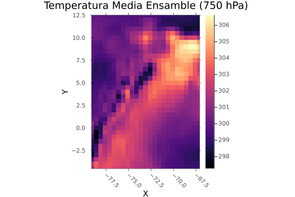
En cubos de alta dimensionalidad, la complejidad no reside solo en el volumen de datos, sino en la precisión de los selectores. A continuación, se comparan las funciones críticas para navegar y colapsar las dimensiones de ERA5.
| Operación | Python 🐍 | R 🔵 | Julia 🟣 |
|---|---|---|---|
| Selección por valor (Presión) | .sel(level=750) |
slice(level, indice) |
cube[Z(At(750))] |
| Búsqueda del más cercano | method='nearest' |
which.min(abs(v - val)) |
X(Near(valor)) |
| Reducción (Promedio Ensamble) | .mean(dim='number') |
st_apply(..., mean) |
mean(cube, dims=4) |
| Recorte Espacial (BBox) | .sel(lat=slice(), ...) |
st_crop(obj, bbox) |
X(Between(a, b)) |
| Eliminar dimensión unitaria | .squeeze() |
adrop() |
dropdims(..., dims=N) |
Notas sobre la gestión 5D:
xarray es extremadamente intuitivo al permitir llamar a las dimensiones por su nombre (dim='number'), lo que reduce errores humanos al manipular arreglos de gran tamaño.st_as_stars() tras un filtrado es vital. Al trabajar con objetos proxy, R solo “anota” la intención del recorte; materializarlo selectivamente es la estrategia más eficiente para no agotar la RAM.At() y Near() permite que el código sea autodocumentado, indicando explícitamente si estamos buscando un valor exacto o la coordenada más próxima.Una vez que hemos filtrado nuestro cubo 5D a una estructura más manejable (generalmente 3D: espacio y tiempo), el siguiente reto es la operacionalización. En la práctica profesional, los datos climáticos brutos rara vez vienen en las unidades o proyecciones necesarias para un informe técnico. En la siguiente sección, abordaremos el Álgebra de mapas multidimensional, donde transformaremos Kelvin a Celsius y realizaremos agregaciones temporales masivas bajo el estándar de evaluación perezosa.
Una de las ventajas más potentes de trabajar con cubos de datos es la capacidad de realizar operaciones aritméticas sobre millones de píxeles simultáneamente sin necesidad de escribir bucles (for loops). Esto se conoce como álgebra de mapas o vectorización.
Dado que la temperatura en ERA5 viene por defecto en Kelvin (K), una operación obligatoria para el análisis climático en Colombia es la conversión a grados Celsius. La fórmula matemática es sencilla (\(C = K - 273.15\)), pero el reto computacional es aplicarla a través de todas las dimensiones (espacio, tiempo y niveles) de forma eficiente. Gracias a la evaluación perezosa, esta resta no colapsa la memoria RAM; simplemente se añade como una instrucción pendiente en el grafo de tareas hasta que decidamos visualizar o guardar el dato.
# #| eval: false
# Resta vectorizada a todo el cubo de medias
t_celsius = t_mean - 273.15
# Actualización de atributos
t_celsius.attrs['units'] = '°C'
t_celsius.attrs['long_name'] = 'Temperatura Media (Celsius)'
# Verificación en el nivel de Bogotá
t_bogota_celsius = t_celsius.sel(level=750, method='nearest')
print(t_bogota_celsius)<xarray.DataArray 't' (time: 480, latitude: 35, longitude: 25)> Size: 3MB
array([[[12.0961969 , 12.3952002 , 12.69636166, ..., 12.17075153,
12.14112588, 12.14014489],
[12.6068961 , 12.90982333, 13.15624599, ..., 12.21980063,
12.19664945, 12.21783866],
[12.93984138, 13.24688872, 13.41954155, ..., 12.13955631,
12.25099585, 12.32378471],
...,
[13.20941521, 14.535899 , 14.63615535, ..., 12.80191531,
12.8297752 , 12.79838378],
[13.24139523, 14.28712198, 14.5904416 , ..., 12.79367507,
12.82800943, 12.786612 ],
[13.63359181, 14.1389937 , 14.51510218, ..., 12.91021572,
12.96318875, 12.9115891 ]],
[[11.32220215, 11.64455282, 11.98946607, ..., 11.9117723 ,
11.86860909, 11.86527375],
[11.94630286, 12.28395685, 12.61768691, ..., 11.85958406,
11.80111753, 11.75834672],
[12.46131838, 12.76954291, 12.9657393 , ..., 11.67417847,
11.68261492, 11.6832035 ],
...
[14.11564633, 13.1505563 , 12.49349459, ..., 12.19292172,
12.24981868, 12.27493181],
[13.28043831, 12.35419515, 12.37126424, ..., 12.16388466,
12.18566246, 12.2319648 ],
[13.68499526, 12.48976686, 12.51801914, ..., 12.14975852,
12.12189863, 12.18487767]],
[[11.67751381, 11.79895937, 11.97475134, ..., 13.54118331,
13.74640473, 13.87589435],
[11.82544589, 11.98024484, 12.1888016 , ..., 13.16605581,
13.39227025, 13.5417719 ],
[12.03262927, 12.26649537, 12.5472524 , ..., 12.395004 ,
12.59571291, 12.89608958],
...,
[13.77406842, 13.27867254, 12.88883031, ..., 12.72814547,
12.76836573, 12.95848003],
[13.37108104, 12.84135079, 12.96240396, ..., 12.79877617,
12.8680335 , 13.0365662 ],
[13.78328965, 12.88176724, 13.01753515, ..., 12.73108842,
12.85920466, 13.00772533]]], shape=(480, 35, 25))
Coordinates:
* time (time) datetime64[ns] 4kB 2020-01-01 ... 2020-02-29T21:00:00
* latitude (latitude) float32 140B 12.5 12.0 11.5 11.0 ... -3.5 -4.0 -4.5
* longitude (longitude) float32 100B -79.1 -78.6 -78.1 ... -68.1 -67.6 -67.1
level int32 4B 750
Attributes:
units: °C
long_name: Temperatura Media (Celsius)
standard_name: air_temperatureimport matplotlib.pyplot as plt
# Visualización de la rebanada (Tiempo 0)
t_bogota_celsius.isel(time=0).plot(cmap="inferno")
plt.title("Temperatura ERA5 Bogotá - Nivel 750 hPa (°C)")
plt.show()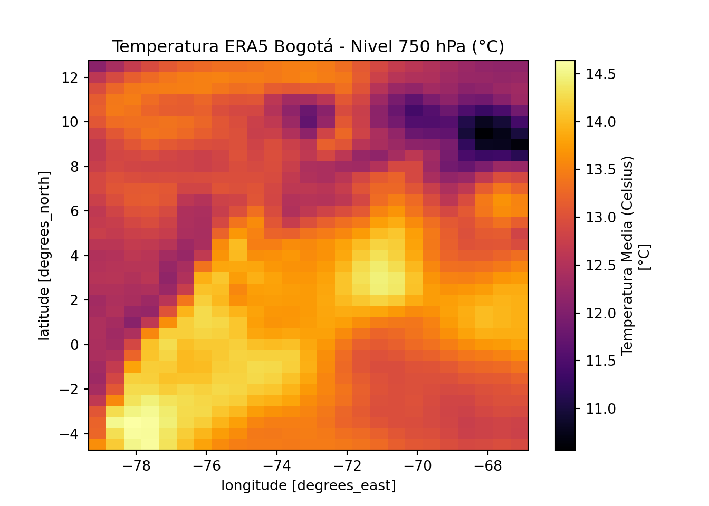
# #| eval: false
# -------------------------------------------------------------------------
# Álgebra de mapas: Conversión de Kelvin a Celsius en {stars}
# -------------------------------------------------------------------------
# Restamos el escalar directamente al objeto stars proxy.
# Esta operación matemática se añade a la lista de tareas pendientes (lazy).
t_celsius <- t_mean - 273.15
# Filtrado espacial/vertical
t_level_bog_c <- t_celsius %>% slice(level, indice_objetivo)
# Materialización de un píxel para control de calidad
verificacion_celsius <- t_level_bog_c %>%
slice(x, 1) %>%
slice(y, 1) %>%
# <--- 1. Aquí se calcula todo y pasa a RAM
st_as_stars() %>%
# <--- 2. Ahora le cambiamos el nombre
setNames("Temperatura_Celsius") %>%
# 3. Y le ponemos unidades
mutate(Temperatura_Celsius = units::set_units(Temperatura_Celsius, "°C"))Warning in CPL_get_metadata(file, NA_character_, options): GDAL Message 1:
dimension #1 (number) is not a Time dimension.Warning in CPL_read_gdal(as.character(x), as.character(options),
as.character(driver), : GDAL Message 1: The dataset has several variables that
could be identified as vector fields, but not all share the same primary
dimension. Consequently they will be ignored.Warning in CPL_read_gdal(as.character(x), as.character(options),
as.character(driver), : GDAL Message 1: dimension #1 (number) is not a Time
dimension.print(verificacion_celsius)stars object with 3 dimensions and 1 attribute
attribute(s):
Min. 1st Qu. Median Mean 3rd Qu. Max.
Temperatura_Celsius [°C] 9.727714 12.28822 13.13741 13.23452 14.22861 16.60126
dimension(s):
from to offset
x 1 1 -79.35
y 1 1 12.75
time 1 480 1051896 [hours since 1900-01-01 00:00:00.0]
delta refsys x/y
x 0.5 WGS 84 [x]
y -0.5 WGS 84 [y]
time 3 [hours since 1900-01-01 00:00:00.0] udunits library(ggplot2)
ggplot() +
geom_stars(data = verificacion_celsius) +
scale_fill_viridis_c(option = "inferno", name = "Temp (°C)") +
theme_minimal() +
ggtitle("Temperatura ERA5 Bogotá - Nivel 750 hPa (°C)")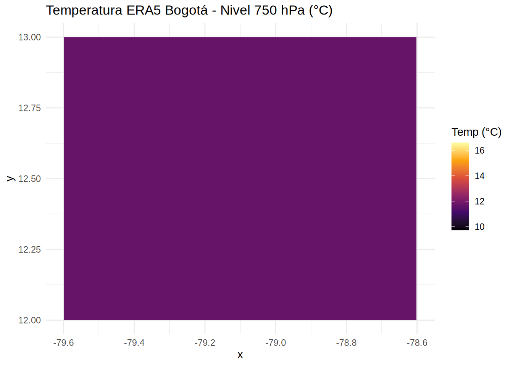
# #| eval: false
j_eval('
# Operador broadcast (.-) para vectorización lazy
t_celsius = t_mean .- 273.15
# Extracción de una rebanada 2D para visualización
t_bog_c_slice = t_celsius[Z(At(1000)), Ti(1)]
using Plots
p_celsius = plot(
t_bog_c_slice,
title="Temperatura ERA5 Bogotá (750 hPa)",
c=:inferno,
colorbar_title="°C"
)
savefig(p_celsius, "images/t_bog_slice_julia.png")
')julia> # Operador broadcast (.-) para vectorización lazy
julia> t_celsius = t_mean .- 273.15
┌ 25×35×37×480 Raster{Float64, 4} ┐
├─────────────────────────────────┴────────────────────────────────────── dims ┐
↓ X Mapped{Float32} [-79.1f0, …, -67.1f0] ForwardOrdered Regular Points,
→ Y Mapped{Float32} [12.5f0, …, -4.5f0] ReverseOrdered Regular Points,
↗ Z Sampled{Int32} [1, …, 1000] ForwardOrdered Irregular Points,
⬔ Ti Sampled{Dates.DateTime} [Dates.DateTime("2020-01-01T00:00:00"), …, Dates.DateTime("2020-02-29T21:00:00")] ForwardOrdered Irregular Points
├──────────────────────────────────────────────────────────────────── metadata ┤
Metadata{Rasters.NCDsource} of Dict{String, Any} with 7 entries:
"missing_value" => -32767
"units" => "K"
"add_offset" => 249.094
"long_name" => "Temperature"
"scale_factor" => 0.00196196
"standard_name" => "air_temperature"
"_FillValue" => -32767
├────────────────────────────────────────────────────────────────────── raster ┤
extent: Extent(X = (-79.1f0, -67.1f0), Y = (-4.5f0, 12.5f0), Z = (1, 1000), Ti = (Dates.DateTime("2020-01-01T00:00:00"), Dates.DateTime("2020-02-29T21:00:00")))
crs: EPSG:4326
mappedcrs: EPSG:4326
└──────────────────────────────────────────────────────────────────────────────┘
[:, :, 1, 1]
↓ → 12.5 12.0 11.5 11.0 10.5 10.0 9.5 9.0 8.5 8.0 7.5 7.0 6.5 6.0 5.5 5.0 4.5 4.0 3.5 3.0 2.5 2.0 1.5 1.0 0.5 0.0 -0.5 -1.0 -1.5 -2.0 -2.5 -3.0 -3.5 -4.0 -4.5
-79.1 -11.3316 -11.0958 -10.939 -10.8225 -10.7054 -10.557 -10.3673 -10.1442 -9.91861 -9.72947 -9.60371 -9.55133 -9.55623 -9.57507 -9.55976 -9.47599 -9.32825 -9.15599 -9.02689 -9.01061 -9.14422 -9.41693 -9.79069 -10.2233 -10.685 -11.1562 -11.6208 -12.0605 -12.4696 -12.8641 -13.2702 -13.6983 -14.1202 -14.4588 -14.6128
-78.6 -11.3189 -11.0717 -10.8861 -10.7279 -10.5668 -10.382 -10.1699 -9.94509 -9.73536 -9.57389 -9.47363 -9.43557 -9.43793 -9.44165 -9.41242 -9.33747 -9.23545 -9.14559 -9.11577 -9.18836 -9.37357 -9.65492 -10.0022 -10.3897 -10.8009 -11.2229 -11.6367 -12.0232 -12.3909 -12.7717 -13.2037 -13.6848 -14.1586 -14.5243 -14.6795
-78.1 -11.2708 -11.0038 -10.7907 -10.6039 -10.4199 -10.2233 -10.0122 -9.80128 -9.61136 -9.46402 -9.3669 -9.31687 -9.29372 -9.27018 -9.22662 -9.17169 -9.13343 -9.14265 -9.22427 -9.38574 -9.6147 -9.89271 -10.2035 -10.5394 -10.8988 -11.2682 -11.623 -11.9496 -12.2745 -12.6501 -13.1097 -13.6363 -14.1468 -14.5251 -14.6742
-77.6 -11.1717 -10.8894 -10.6628 -10.4709 -10.29 -10.1056 -9.91194 -9.71829 -9.53877 -9.38848 -9.27371 -9.19052 -9.1297 -9.07849 -9.03415 -9.01571 -9.05338 -9.16482 -9.34807 -9.58311 -9.84288 -10.1079 -10.3773 -10.6622 -10.969 -11.2794 -11.5665 -11.8349 -12.1311 -12.5151 -13.0079 -13.5684 -14.096 -14.4698 -14.6089
-77.1 -11.0224 -10.7387 -10.5227 -10.3516 -10.1986 -10.042 -9.87015 -9.68592 -9.50091 -9.32806 -9.17679 -9.0524 -8.95646 -8.88838 -8.85875 -8.89093 -9.01179 -9.21976 -9.48737 -9.77264 -10.041 -10.2835 -10.5154 -10.7548 -11.0071 -11.252 -11.4764 -11.7048 -11.9963 -12.403 -12.9247 -13.4996 -14.0189 -14.3709 -14.5023
-76.6 -10.8368 -10.5735 -10.393 -10.2647 -10.1546 -10.0295 -9.86956 -9.67964 -9.47324 -9.26743 -9.07849 -8.91977 -8.80009 -8.72868 -8.72613 -8.81795 -9.0161 -9.30079 -9.6249 -9.93646 -10.2015 -10.4211 -10.6188 -10.8154 -11.015 -11.2035 -11.3834 -11.5965 -11.9037 -12.3371 -12.8733 -13.435 -13.9179 -14.2379 -14.3715
-76.1 -10.6363 -10.4148 -10.2894 -10.2176 -10.1519 -10.0503 -9.89153 -9.68356 -9.44832 -9.20955 -8.98903 -8.80127 -8.66236 -8.59879 -8.63568 -8.79067 -9.05927 -9.39928 -9.75419 -10.0712 -10.3236 -10.5188 -10.6842 -10.8415 -10.9961 -11.1417 -11.2981 -11.5204 -11.861 -12.3201 -12.8492 -13.3675 -13.7939 -14.0799 -14.2326
-75.6 -10.4446 -10.281 -10.2202 -10.2056 -10.1764 -10.085 -9.91527 -9.68415 -9.42125 -9.15501 -8.90722 -8.69493 -8.54739 -8.50109 -8.57996 -8.79166 -9.11459 -9.49325 -9.86348 -10.1705 -10.3983 -10.5643 -10.6983 -10.8254 -10.949 -11.0717 -11.2325 -11.4909 -11.8725 -12.3458 -12.8441 -13.2946 -13.6516 -13.9104 -14.1031
-75.1 -10.2808 -10.1813 -10.1819 -10.2131 -10.2072 -10.115 -9.92999 -9.67768 -9.39516 -9.10851 -8.83992 -8.61312 -8.46577 -8.44184 -8.5678 -8.83188 -9.19092 -9.58213 -9.94195 -10.2227 -10.4169 -10.5517 -10.6606 -10.7675 -10.8758 -11.0042 -11.2017 -11.5125 -11.931 -12.4003 -12.8435 -13.211 -13.4988 -13.7419 -13.9887
-74.6 -10.1509 -10.1083 -10.1548 -10.2139 -10.2176 -10.1225 -9.92685 -9.66512 -9.37142 -9.0677 -8.77733 -8.53582 -8.39514 -8.40417 -8.57839 -8.88779 -9.27214 -9.66296 -9.99414 -10.2308 -10.384 -10.489 -10.5802 -10.6777 -10.7917 -10.9533 -11.21 -11.5796 -12.0244 -12.4656 -12.8345 -13.1111 -13.336 -13.571 -13.8729
-74.1 -10.0481 -10.0495 -10.1238 -10.1964 -10.1996 -10.097 -9.89918 -9.63726 -9.3359 -9.01493 -8.70572 -8.46205 -8.34688 -8.39593 -8.60409 -8.93566 -9.32845 -9.70495 -9.99964 -10.1898 -10.3055 -10.3861 -10.4652 -10.5653 -10.7059 -10.9231 -11.2506 -11.6748 -12.1264 -12.5174 -12.799 -12.9883 -13.1568 -13.3876 -13.7346
-73.6 -9.96295 -9.99375 -10.0809 -10.1529 -10.1503 -10.0479 -9.85798 -9.59959 -9.28882 -8.94999 -8.63117 -8.39966 -8.31529 -8.39691 -8.62999 -8.97569 -9.35866 -9.69769 -9.94568 -10.0954 -10.1799 -10.2419 -10.3181 -10.4358 -10.6214 -10.9084 -11.3077 -11.7707 -12.2074 -12.5339 -12.7266 -12.8357 -12.9573 -13.1821 -13.5577
-73.1 -9.89075 -9.9347 -10.0185 -10.0816 -10.075 -9.98355 -9.80913 -9.55388 -9.23251 -8.87975 -8.55838 -8.34158 -8.28311 -8.39318 -8.64804 -8.99256 -9.34552 -9.6355 -9.83208 -9.94078 -9.99885 -10.0518 -10.1391 -10.2914 -10.538 -10.9008 -11.3612 -11.8449 -12.2469 -12.5006 -12.6098 -12.6536 -12.7391 -12.9538 -13.3389
-72.6 -9.82679 -9.87368 -9.94509 -9.9965 -9.99081 -9.91115 -9.7438 -9.48619 -9.15913 -8.80657 -8.49658 -8.30411 -8.27566 -8.41202 -8.6708 -8.98412 -9.28215 -9.51503 -9.65767 -9.72712 -9.76969 -9.83012 -9.94392 -10.1433 -10.4566 -10.8886 -11.3928 -11.8735 -12.2274 -12.4078 -12.4484 -12.4439 -12.5049 -12.7073 -13.0878
-72.1 -9.77087 -9.81384 -9.87074 -9.91096 -9.90546 -9.83012 -9.66198 -9.39986 -9.06947 -8.72475 -8.43909 -8.2837 -8.28841 -8.43595 -8.67727 -8.94744 -9.18483 -9.35042 -9.43734 -9.47874 -9.51994 -9.59685 -9.74654 -10.0012 -10.3803 -10.8682 -11.3926 -11.8462 -12.1409 -12.2537 -12.2429 -12.2096 -12.2553 -12.4462 -12.81
-71.6 -9.723 -9.75694 -9.79893 -9.82561 -9.81541 -9.73497 -9.55976 -9.28921 -8.95607 -8.62508 -8.37199 -8.25839 -8.2943 -8.44517 -8.66099 -8.8823 -9.05279 -9.1505 -9.19405 -9.22152 -9.27018 -9.37397 -9.56604 -9.87544 -10.3118 -10.8337 -11.3514 -11.7589 -11.9883 -12.0454 -12.002 -11.9575 -11.9959 -12.1692 -12.5029
-71.1 -9.68298 -9.70495 -9.72869 -9.74085 -9.71711 -9.6198 -9.42655 -9.14363 -8.81402 -8.50835 -8.29763 -8.22386 -8.28213 -8.43046 -8.61527 -8.77635 -8.87955 -8.92566 -8.94469 -8.97078 -9.03769 -9.17365 -9.4085 -9.76812 -10.2455 -10.7789 -11.2692 -11.6177 -11.785 -11.8005 -11.7436 -11.6993 -11.7324 -11.8792 -12.1662
-70.6 -9.64923 -9.65413 -9.65884 -9.65257 -9.60489 -9.47991 -9.26233 -8.96823 -8.64941 -8.37945 -8.21602 -8.17756 -8.24407 -8.37395 -8.51404 -8.61743 -8.67001 -8.68728 -8.69787 -8.73594 -8.82599 -8.99295 -9.26606 -9.6665 -10.1709 -10.7008 -11.1519 -11.4431 -11.5608 -11.5519 -11.4945 -11.4554 -11.4776 -11.5863 -11.809
-70.1 -9.61607 -9.60155 -9.58645 -9.55604 -9.47775 -9.32119 -9.07928 -8.7789 -8.48049 -8.25055 -8.12753 -8.10948 -8.16912 -8.26585 -8.35669 -8.41339 -8.43693 -8.44419 -8.46146 -8.51443 -8.62253 -8.81441 -9.12264 -9.55819 -10.0826 -10.6045 -11.0201 -11.269 -11.3554 -11.3379 -11.2877 -11.2498 -11.2514 -11.3091 -11.4507
-69.6 -9.58252 -9.54446 -9.50561 -9.44734 -9.33708 -9.15128 -8.89113 -8.59566 -8.32647 -8.13401 -8.03355 -8.01276 -8.04689 -8.10144 -8.14794 -8.17678 -8.19208 -8.20444 -8.23191 -8.29018 -8.40652 -8.61841 -8.96038 -9.43224 -9.97943 -10.5037 -10.9033 -11.1331 -11.2104 -11.1976 -11.1535 -11.108 -11.0752 -11.0701 -11.1234
-69.1 -9.54485 -9.47717 -9.41124 -9.32178 -9.1813 -8.97392 -8.70945 -8.43281 -8.19404 -8.02374 -7.92525 -7.88542 -7.87973 -7.88935 -7.90446 -7.92564 -7.94821 -7.97077 -7.99941 -8.052 -8.16854 -8.39867 -8.77773 -9.29372 -9.87721 -10.4203 -10.8303 -11.0673 -11.1546 -11.1507 -11.1056 -11.0383 -10.9598 -10.8864 -10.857
-68.6 -9.49659 -9.39339 -9.29372 -9.17483 -9.0114 -8.79401 -8.53994 -8.28861 -8.07554 -7.91309 -7.80008 -7.72572 -7.67648 -7.65077 -7.65489 -7.68315 -7.71983 -7.74632 -7.76378 -7.79969 -7.9123 -8.16461 -8.58898 -9.1609 -9.79442 -10.3775 -10.8186 -11.0805 -11.1856 -11.187 -11.1284 -11.0283 -10.8974 -10.7613 -10.6667
-68.1 -9.43322 -9.28862 -9.15442 -9.00845 -8.83129 -8.61665 -8.38219 -8.15735 -7.95959 -7.79459 -7.65646 -7.54326 -7.4587 -7.4173 -7.42534 -7.46792 -7.51501 -7.5358 -7.53031 -7.546 -7.65882 -7.94095 -8.42026 -9.05691 -9.75047 -10.3832 -10.8629 -11.1539 -11.2767 -11.2775 -11.1964 -11.0562 -10.8745 -10.6889 -10.5543
-67.6 -9.35552 -9.16737 -9.00119 -8.83384 -8.65098 -8.44674 -8.23289 -8.02649 -7.8352 -7.65725 -7.49382 -7.35432 -7.25622 -7.21875 -7.24092 -7.2986 -7.34647 -7.34902 -7.31724 -7.31567 -7.43712 -7.75907 -8.30116 -9.00571 -9.75714 -10.4348 -10.9488 -11.2641 -11.3971 -11.3916 -11.2833 -11.0999 -10.8743 -10.6557 -10.5058
-67.1 -9.26704 -9.03965 -8.84463 -8.66354 -8.4801 -8.28704 -8.08653 -7.88876 -7.69453 -7.50402 -7.32646 -7.18069 -7.09004 -7.07199 -7.11849 -7.18932 -7.22699 -7.20443 -7.14812 -7.1387 -7.27977 -7.6492 -8.2529 -9.01748 -9.8156 -10.5243 -11.0577 -11.3832 -11.517 -11.4974 -11.3608 -11.1397 -10.8782 -10.6381 -10.4878
julia> # Extracción de una rebanada 2D para visualización
julia> t_bog_c_slice = t_celsius[Z(At(1000)), Ti(1)]
┌ 25×35 Raster{Float64, 2} ┐
├──────────────────────────┴────────────────────────────────────────── dims ┐
↓ X Mapped{Float32} [-79.1f0, …, -67.1f0] ForwardOrdered Regular Points,
→ Y Mapped{Float32} [12.5f0, …, -4.5f0] ReverseOrdered Regular Points
├───────────────────────────────────────────────────────────────── metadata ┤
Metadata{Rasters.NCDsource} of Dict{String, Any} with 7 entries:
"missing_value" => -32767
"units" => "K"
"add_offset" => 249.094
"long_name" => "Temperature"
"scale_factor" => 0.00196196
"standard_name" => "air_temperature"
"_FillValue" => -32767
├─────────────────────────────────────────────────────────────────── raster ┤
extent: Extent(X = (-79.1f0, -67.1f0), Y = (-4.5f0, 12.5f0))
crs: EPSG:4326
mappedcrs: EPSG:4326
└───────────────────────────────────────────────────────────────────────────┘
↓ → 12.5 12.0 11.5 11.0 10.5 10.0 9.5 9.0 8.5 8.0 7.5 7.0 6.5 6.0 5.5 5.0 4.5 4.0 3.5 3.0 2.5 2.0 1.5 1.0 0.5 0.0 -0.5 -1.0 -1.5 -2.0 -2.5 -3.0 -3.5 -4.0 -4.5
-79.1 26.8741 26.9838 27.0572 27.149 27.3122 27.1692 26.6757 26.5441 26.7117 26.5869 26.3094 26.0038 25.736 25.6616 25.6341 25.733 25.9373 26.1325 26.2526 26.2165 26.3189 26.3387 26.351 27.0005 27.7629 27.6477 26.963 26.2661 25.4776 25.3675 25.0752 24.5727 26.5247 28.6558 28.1951
-78.6 26.8254 26.9879 27.0844 27.1664 27.2418 27.1556 26.8109 26.5321 26.4827 26.3175 26.0338 25.6985 25.4788 25.6204 25.8729 26.0711 26.1933 26.2639 26.3724 26.5162 26.6124 26.5139 26.6814 27.0987 26.7307 25.4152 24.2429 24.124 24.9068 25.8945 26.0752 26.5502 28.7831 30.3523 30.1771
-78.1 26.758 26.9298 27.0124 27.0236 27.1201 27.1184 26.733 26.4321 26.4266 26.2441 25.949 25.7501 25.6946 25.7187 25.8319 26.1036 26.4058 26.7464 26.9498 26.8696 26.7342 26.7719 26.838 26.3128 25.5975 25.5294 25.5982 25.9665 27.4939 29.1651 29.4902 29.2192 29.3574 29.4545 29.5251
-77.6 26.6899 26.8431 26.8684 26.7705 26.8464 26.9908 26.9504 26.9261 26.7185 26.3234 26.0057 25.692 25.6077 25.6133 25.7964 26.3053 26.7317 26.8392 26.5245 26.6234 27.4342 27.5886 26.7354 26.1446 26.9732 28.5759 29.0158 28.3538 28.1486 28.4095 28.5757 28.8111 29.23 29.6909 29.9106
-77.1 26.6126 26.7532 26.7052 26.541 26.6589 27.0105 27.2728 27.3744 27.0893 26.6712 26.2681 25.9412 26.0779 26.1433 26.0646 26.0964 26.3436 26.9475 27.18 27.1119 27.0897 26.9787 27.3707 28.2363 28.7225 28.6777 28.5284 28.6148 28.8168 28.9032 29.1386 29.5275 29.8557 30.0119 29.8981
-76.6 26.592 26.696 26.5892 26.4089 26.6406 27.1119 27.2649 27.2626 27.2153 26.8888 26.5082 26.5492 26.6043 26.2614 26.1833 26.3818 26.7132 27.2114 27.4709 27.1696 26.1227 26.1195 28.1351 29.3185 28.5944 28.066 28.5698 29.4111 29.9028 29.9852 29.9924 29.8885 29.8137 29.7364 29.5751
-76.1 26.5127 26.5576 26.5098 26.354 26.5105 26.9438 27.1217 27.0723 27.1378 27.1248 27.282 27.5973 27.4052 27.2995 27.2861 27.0707 27.229 26.3581 25.1178 26.2253 27.9355 28.7107 29.234 28.7699 28.1221 28.6628 29.4892 30.0032 30.2004 30.0605 29.8739 29.6976 29.706 29.6834 29.5133
-75.6 26.3993 26.5157 26.662 26.7756 26.7742 26.737 26.828 26.9469 27.2384 27.3587 27.4309 27.5606 27.6681 28.0499 26.8413 25.4166 27.2408 28.5161 27.2898 27.7466 29.49 29.7325 28.9977 28.4829 28.5428 28.852 29.1598 29.7702 30.242 30.2155 30.0697 29.8653 29.685 29.4472 29.1255
-75.1 26.416 26.5588 26.6497 27.1582 27.4647 27.2832 27.0717 26.9634 27.2698 27.2004 26.9677 27.2333 27.4517 27.6326 26.7415 26.2408 28.6008 30.657 30.3146 29.3831 28.7974 28.666 28.8449 29.1102 29.1963 29.1816 29.4843 29.7729 29.656 29.4918 29.4949 29.4939 29.4996 29.5 29.3644
-74.6 26.4223 26.4813 26.5098 27.3375 28.0782 28.3201 28.0101 27.1996 27.1486 27.4448 27.7837 28.2263 28.0634 28.2102 28.6518 28.5477 27.8861 27.1362 27.7166 28.7083 28.8794 29.3181 29.7639 29.686 29.4859 29.429 29.5577 29.5116 29.4374 29.5023 29.4839 29.3976 29.2077 29.0056 28.9695
-74.1 26.4276 26.5345 26.5984 27.4025 28.149 28.5408 28.2718 27.291 26.9492 27.3326 27.6381 27.5822 27.5194 27.7434 27.2428 26.1623 25.8123 26.1497 27.3263 28.768 29.3236 29.5816 29.6779 29.58 29.613 29.5059 29.3277 29.233 29.2239 29.1304 29.0468 29.0778 28.9177 28.7211 28.7107
-73.6 26.5482 26.8504 26.7529 27.3389 28.665 29.532 29.1366 28.1741 27.5788 27.7309 27.962 27.891 27.8541 26.9131 25.2916 25.1425 27.0758 28.749 28.985 29.16 29.3823 29.4806 29.5173 29.3293 29.1776 29.0919 29.1121 29.0519 28.8486 28.724 28.8378 28.9559 28.8433 28.703 28.5453
-73.1 26.5527 27.3656 27.5892 28.0607 29.9157 31.0664 30.2167 29.0907 28.5357 28.8841 28.7072 27.5386 26.5382 25.2251 25.5202 27.7336 29.1898 29.4865 29.394 29.6263 29.7227 29.4916 29.2759 28.9563 28.7523 28.6683 28.6254 28.4906 28.3752 28.3679 28.4072 28.4739 28.5045 28.4676 28.3105
-72.6 26.3316 27.4543 28.0662 28.2634 29.4976 29.9715 28.9985 28.2747 28.126 28.9761 28.3314 25.8111 24.7479 25.1407 27.3391 29.8106 30.2867 30.3727 30.4892 30.2363 29.7963 29.3754 29.056 28.7366 28.5369 28.3554 28.2335 28.086 27.8898 27.6881 27.6244 27.8029 28.003 28.2302 28.3779
-72.1 26.2255 26.8874 27.0695 27.1915 28.2608 28.5967 28.1615 27.8739 27.6991 28.8975 29.3589 28.0346 27.696 28.4276 29.6889 30.5606 30.6346 30.7441 30.42 29.9118 29.6344 29.333 28.9822 28.602 28.2253 27.9196 27.7986 27.6259 27.3852 27.2604 27.2859 27.3626 27.3844 27.6191 27.9212
-71.6 26.0591 26.1978 26.0685 26.5076 27.7762 28.1859 28.0177 27.9077 28.0317 29.2349 30.2151 30.21 29.9738 29.8614 30.2585 30.6052 30.5855 30.3028 29.9163 29.7607 29.4197 28.8416 28.4386 28.2502 28.0693 27.7852 27.4913 27.2147 26.9926 26.8612 26.8166 26.9137 27.0752 27.2296 27.418
-71.1 25.8025 25.6383 25.7038 26.6873 28.0372 28.1914 27.7278 27.5539 28.3407 29.7913 30.6846 31.1618 31.0988 30.8555 30.9517 30.8345 30.5418 30.1368 29.7853 29.4558 29.0007 28.6148 28.1906 27.8229 27.5839 27.3709 27.1947 27.1001 26.9596 26.8388 26.8303 26.8276 26.784 26.6595 26.7101
-70.6 25.869 25.4793 25.642 27.4272 29.7796 30.3833 29.645 28.899 29.1914 30.2779 31.1 31.6197 31.6089 31.5294 31.4317 30.8738 30.3328 29.8239 29.4313 29.1686 28.9145 28.4766 27.8553 27.4868 27.2808 27.1741 27.0913 26.9365 26.7193 26.6673 26.7421 26.5939 26.4325 26.3877 26.4584
-70.1 25.8929 25.5202 25.6504 27.6353 30.6462 31.9005 31.3888 30.7831 30.8347 31.1015 31.0448 31.0664 31.2842 31.5701 31.5065 30.9852 30.4011 29.7917 29.3717 29.1019 28.7617 28.1882 27.6544 27.3858 27.1266 27.0691 27.0212 26.807 26.5767 26.4705 26.4756 26.3928 26.3679 26.3379 26.3238
-69.6 25.7801 25.4782 25.5233 26.7603 29.147 31.0562 31.7127 31.9532 32.2799 32.1844 31.5834 31.4696 32.0223 32.2144 31.6691 30.9077 30.193 29.6028 29.1739 28.6801 28.2683 28.0001 27.6793 27.2816 26.9802 26.994 26.9775 26.765 26.4799 26.2788 26.2539 26.2076 26.1837 26.1348 26.1295
-69.1 25.7685 25.4907 25.3338 25.5861 27.025 29.8147 32.1251 32.8716 32.7419 32.3896 31.9809 31.6682 31.7922 31.9884 31.7147 31.0731 30.2104 29.3999 28.8826 28.4672 28.0301 27.6726 27.3822 27.218 27.2023 27.1825 27.0401 26.7729 26.454 26.2119 26.0836 25.9567 26.0032 26.1752 26.2343
-68.6 25.7038 25.5117 25.227 24.8545 25.7499 29.0858 32.2862 33.1555 32.7053 32.3443 32.1965 31.592 31.3282 31.7048 31.3668 30.3319 29.4896 28.819 28.2602 28.0211 27.8572 27.6593 27.4566 27.2969 27.2147 27.0931 26.9243 26.6657 26.4458 26.2151 25.9384 25.773 25.8084 25.9463 25.9822
-68.1 25.6092 25.4754 25.2421 24.9023 25.9384 29.5063 32.7359 33.4618 32.9354 32.3327 31.8659 31.2442 31.0484 31.0454 30.0178 28.6889 28.2231 28.1608 27.9281 27.8194 27.8225 27.8011 27.622 27.3442 27.1904 27.0344 26.8302 26.5137 26.2569 26.0395 25.8193 25.714 25.7165 25.8974 26.0144
-67.6 25.5419 25.3614 25.1676 25.1519 26.3636 29.6446 32.6378 33.4023 32.874 31.8755 30.8687 30.2202 30.121 30.1162 29.7747 29.2306 28.5836 28.0787 27.9065 28.0111 27.9916 27.8955 27.7862 27.5255 27.2296 26.8411 26.5778 26.4101 26.2178 26.0265 25.7858 25.5971 25.6 25.8327 25.9851
-67.1 25.4738 25.2786 25.086 25.0777 25.9492 28.5392 31.4376 32.7056 32.3976 31.2457 30.0152 29.2373 29.1109 29.5061 30.0127 30.0019 29.2801 28.4064 27.9661 28.096 28.1639 28.1058 27.9899 27.5647 27.1417 26.7452 26.5092 26.4242 26.2335 25.9528 25.5621 25.412 25.6481 25.881 26.021
julia> using Plots
julia> p_celsius = plot( t_bog_c_slice, title="Temperatura ERA5 Bogotá (750 hPa)", c=:inferno, colorbar_title="°C" )
julia> savefig(p_celsius, "images/t_bog_slice_julia.png")
"/home/rstudio/work/01_prog_sig/images/t_bog_slice_julia.png"
knitr::include_graphics("images/t_bog_slice_julia.png")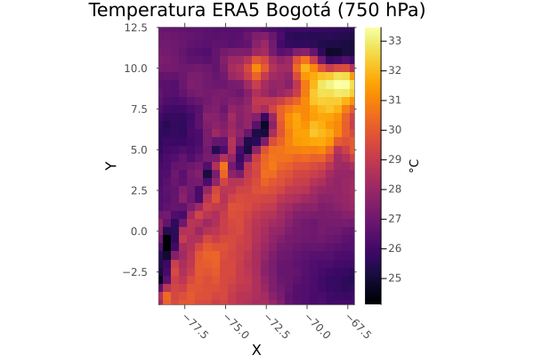
El álgebra de mapas multidimensional no se limita a operaciones escalares; también abarca funciones de reducción sobre ejes completos. Si deseamos conocer la temperatura media histórica de cada píxel, debemos “colapsar” la dimensión time.
Al igual que con la conversión a Celsius, esta operación se distribuye espacialmente y de forma perezosa:
t_celsius.mean(dim='time')st_apply(t_celsius, c("x", "y", "level"), mean)dropdims(mean(t_celsius, dims=Ti), dims=Ti)El resultado es un cubo donde la dimensión temporal ha desaparecido, dejándonos con un mapa estático que representa el promedio climatológico para el periodo analizado.
| Operación | Python 🐍 | R 🔵 | Julia 🟣 |
|---|---|---|---|
| Operación Escalar | ds - 273.15 |
obj - 273.15 |
cube .- 273.15 |
| Actualizar Metadato | da.attrs['units'] = '°C' |
units::set_units(obj, "°C") |
Depende de DimensionalData |
| Promedio Temporal | .mean(dim='time') |
st_apply(..., mean) |
mean(cube, dims=Ti) |
| Tipo de Ejecución | Perezosa (Dask) | Perezosa (Proxy) | Perezosa (DiskArrays) |
Los datos de reanálisis como ERA5 suelen descargarse en resoluciones temporales muy altas (ej. datos horarios). Sin embargo, para la planificación territorial en Colombia, la gestión de riesgos o la agricultura, rara vez analizamos el clima hora a hora. Generalmente, necesitamos transformar esa alta frecuencia en promedios diarios, climatologías mensuales o acumulados anuales.
El proceso de cambiar la frecuencia temporal de un cubo de datos se conoce como remuestreo temporal (temporal resampling). Computacionalmente, esto implica redefinir la “geometría temporal” del cubo: agrupamos las “láminas” horarias en bloques (ej. 24 láminas para formar un día) y les aplicamos una función de reducción (media, máximo, suma). Al igual que el álgebra de mapas, estas operaciones aprovechan la evaluación perezosa, ejecutando los cálculos paso a paso para evitar el colapso de la memoria RAM. El primer y más crítico paso antes de cualquier remuestreo es auditar la resolución original del archivo.
# #| eval: false
# -------------------------------------------------------------------------
# Inspección de resolución temporal
# -------------------------------------------------------------------------
import pandas as pd
# Calculamos la diferencia entre los dos primeros registros de tiempo
delta_t = ds.time.diff(dim="time")[0].values
# Convertimos a horas (float)
horas_paso = delta_t / pd.Timedelta('1 hour')
print(f"Resolución temporal detectada: {horas_paso} horas")Resolución temporal detectada: 3.0 horas# -------------------------------------------------------------------------
# Remuestreo temporal con xarray (Resampling)
# -------------------------------------------------------------------------
# Partimos del cubo t_celsius (que ya tiene el ensamble promediado)
# .resample() agrupa la dimensión de tiempo. "1D" significa "1 Día" (Diario).
# Luego aplicamos .mean() para calcular la temperatura media diaria.
t_diaria = t_celsius.resample(time="1D").mean()
print("\n--- Estructura Original ---")
--- Estructura Original ---print(t_celsius.time)<xarray.DataArray 'time' (time: 480)> Size: 4kB
array(['2020-01-01T00:00:00.000000000', '2020-01-01T03:00:00.000000000',
'2020-01-01T06:00:00.000000000', ..., '2020-02-29T15:00:00.000000000',
'2020-02-29T18:00:00.000000000', '2020-02-29T21:00:00.000000000'],
shape=(480,), dtype='datetime64[ns]')
Coordinates:
* time (time) datetime64[ns] 4kB 2020-01-01 ... 2020-02-29T21:00:00
Attributes:
long_name: timeprint("\n--- Estructura Remuestreada (Diaria) ---")
--- Estructura Remuestreada (Diaria) ---print(t_diaria.time)<xarray.DataArray 'time' (time: 60)> Size: 480B
array(['2020-01-01T00:00:00.000000000', '2020-01-02T00:00:00.000000000',
'2020-01-03T00:00:00.000000000', '2020-01-04T00:00:00.000000000',
'2020-01-05T00:00:00.000000000', '2020-01-06T00:00:00.000000000',
'2020-01-07T00:00:00.000000000', '2020-01-08T00:00:00.000000000',
'2020-01-09T00:00:00.000000000', '2020-01-10T00:00:00.000000000',
'2020-01-11T00:00:00.000000000', '2020-01-12T00:00:00.000000000',
'2020-01-13T00:00:00.000000000', '2020-01-14T00:00:00.000000000',
'2020-01-15T00:00:00.000000000', '2020-01-16T00:00:00.000000000',
'2020-01-17T00:00:00.000000000', '2020-01-18T00:00:00.000000000',
'2020-01-19T00:00:00.000000000', '2020-01-20T00:00:00.000000000',
'2020-01-21T00:00:00.000000000', '2020-01-22T00:00:00.000000000',
'2020-01-23T00:00:00.000000000', '2020-01-24T00:00:00.000000000',
'2020-01-25T00:00:00.000000000', '2020-01-26T00:00:00.000000000',
'2020-01-27T00:00:00.000000000', '2020-01-28T00:00:00.000000000',
'2020-01-29T00:00:00.000000000', '2020-01-30T00:00:00.000000000',
'2020-01-31T00:00:00.000000000', '2020-02-01T00:00:00.000000000',
'2020-02-02T00:00:00.000000000', '2020-02-03T00:00:00.000000000',
'2020-02-04T00:00:00.000000000', '2020-02-05T00:00:00.000000000',
'2020-02-06T00:00:00.000000000', '2020-02-07T00:00:00.000000000',
'2020-02-08T00:00:00.000000000', '2020-02-09T00:00:00.000000000',
'2020-02-10T00:00:00.000000000', '2020-02-11T00:00:00.000000000',
'2020-02-12T00:00:00.000000000', '2020-02-13T00:00:00.000000000',
'2020-02-14T00:00:00.000000000', '2020-02-15T00:00:00.000000000',
'2020-02-16T00:00:00.000000000', '2020-02-17T00:00:00.000000000',
'2020-02-18T00:00:00.000000000', '2020-02-19T00:00:00.000000000',
'2020-02-20T00:00:00.000000000', '2020-02-21T00:00:00.000000000',
'2020-02-22T00:00:00.000000000', '2020-02-23T00:00:00.000000000',
'2020-02-24T00:00:00.000000000', '2020-02-25T00:00:00.000000000',
'2020-02-26T00:00:00.000000000', '2020-02-27T00:00:00.000000000',
'2020-02-28T00:00:00.000000000', '2020-02-29T00:00:00.000000000'],
dtype='datetime64[ns]')
Coordinates:
* time (time) datetime64[ns] 480B 2020-01-01 2020-01-02 ... 2020-02-29
Attributes:
long_name: time# Seleccionamos: Nivel 750hPa Y un punto específico de Lat/Lon
# (Cerca del centro de Bogotá)
punto_especifico = t_diaria.sel(
level=750,
latitude=4.6,
longitude=-74.0,
method='nearest'
)
# Ahora sí, graficar una línea
plt.figure(figsize=(10, 4))
punto_especifico.plot(marker='o', color='firebrick')
plt.title("Evolución de la Temperatura Diaria en un punto de Bogotá")
plt.ylabel("Temperatura Media [°C]")
plt.grid(True)
plt.show()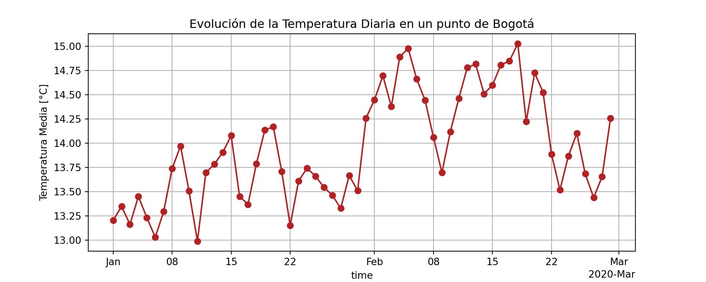
# #| eval: false
# -------------------------------------------------------------------------
# 1. Sincronización y Auditoría Temporal
# -------------------------------------------------------------------------
# Es imperativo convertir la dimensión 'time' a formato POSIXct (Fecha/Hora).
# Sin esto, las funciones de agregación temporal no reconocerán unidades como "days".
fechas_reales <- as.POSIXct(st_get_dimension_values(t_celsius, "time"))
t_celsius <- st_set_dimensions(t_celsius, "time", values = fechas_reales)
# Auditoría de resolución: Calculamos la diferencia entre los dos primeros pasos
diff_horas <- as.numeric(difftime(fechas_reales[2], fechas_reales[1], units = "hours"))
cat("Resolución temporal detectada:", diff_horas, "horas\n")Resolución temporal detectada: 3 horas# -------------------------------------------------------------------------
# 2. Remuestreo Temporal (Temporal Resampling)
# -------------------------------------------------------------------------
# stars utiliza aggregate() para reducir la resolución temporal.
# Esta operación es "Lazy" (perezosa): no calcula nada aún, solo lo anota.
# El argumento 'by = "days"' colapsa las horas en promedios diarios.
t_diaria <- aggregate(t_celsius, by = "days", FUN = mean, na.rm = TRUE)
# Filtrado perezoso por nivel de presión (750hPa para Bogotá)
t_diaria_bogota <- t_diaria %>% slice(level, indice_objetivo)
# -------------------------------------------------------------------------
# 3. Materialización y Extracción de Serie de Tiempo (Punto Exacto)
# -------------------------------------------------------------------------
# A diferencia de slice() que usa índices (1, 2, 3...), st_extract() usa
# coordenadas geográficas reales, igual que el .sel() de xarray.
#
# Localización del punto más cercano (Equivalente a 'nearest' de Python)
#
# Extraemos los vectores de coordenadas del cubo
lon_vec <- st_get_dimension_values(t_diaria, "x")
lat_vec <- st_get_dimension_values(t_diaria, "y")
# Encontramos la posición (índice) más cercana a nuestro objetivo
idx_x <- which.min(abs(lon_vec - (-74.0)))
idx_y <- which.min(abs(lat_vec - 4.6))
# Extraemos el píxel por índice, así evitamos que st_extract cambie el tipo de objeto
punto_bogota <- t_diaria %>%
slice(level, indice_objetivo) %>%
slice(x, idx_x) %>%
slice(y, idx_y) %>%
st_as_stars() %>%
setNames("Temp_C")Warning in CPL_get_metadata(file, NA_character_, options): GDAL Message 1:
dimension #1 (number) is not a Time dimension.Warning in CPL_read_gdal(as.character(x), as.character(options),
as.character(driver), : GDAL Message 1: The dataset has several variables that
could be identified as vector fields, but not all share the same primary
dimension. Consequently they will be ignored.Warning in CPL_read_gdal(as.character(x), as.character(options),
as.character(driver), : GDAL Message 1: dimension #1 (number) is not a Time
dimension.# Alternativa usando un punto sf (MEJORAR)
# 1. Definimos el punto de interés (Centro de Bogotá) como objeto espacial
#punto_interes <- st_sfc(st_point(c(-74.0, 4.6)), crs = 4326)
# 2. Extraemos el valor del cubo más cercano a esa coordenada
# Usamos st_as_stars() para materializar el resultado en RAM
#punto_bogota <- t_diaria_bogota %>%
# st_extract(at = punto_interes) %>%
# st_as_stars() %>%
# setNames("Temp_C")
# -------------------------------------------------------------------------
# 4. Visualización de Resultados
# -------------------------------------------------------------------------
# Ahora fechas y valores_temp vendrán del píxel más cercano a -74.0, 4.6
valores_temp <- as.numeric(punto_bogota[[1]])
fechas <- st_get_dimension_values(punto_bogota, "time")
plot(fechas, valores_temp,
type = "o", # "o" para ver puntos y líneas
# (más parecido al marker='o' de Python)
# Alternativa "l"
col = "firebrick",
lwd = 2,
pch = 16,
main = paste("Temp. Media Diaria - Resolución original:", diff_horas, "h"),
xlab = "Fecha",
ylab = "Temperatura [°C]")
grid()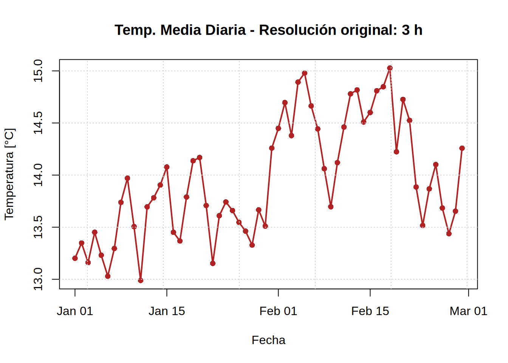
# #| eval: false
j_eval('
# -------------------------------------------------------------------------
# 1. Auditoría y Cálculo del Factor de Agregación
# -------------------------------------------------------------------------
using Dates
# Obtenemos los valores de la dimensión de tiempo
tiempos = lookup(t_celsius, Ti); nothing
# Retorna un sub-vector con los 5 elementos
println("Primeros 5: ", first(tiempos, 5))
println("Últimos 5: ", last(tiempos, 5))
# Calculamos la diferencia entre los dos primeros pasos
paso_tiempo = tiempos[2] - tiempos[1]
# Convertimos el Periodo a horas (ERA5 suele ser Hour(1) o Hour(3))
horas_paso = Dates.value(Hour(paso_tiempo))
# Calculamos dinámicamente cuántos pasos hay en 24 horas
factor_agregacion = Int(24 / horas_paso)
println("Resolución: $horas_paso horas. Factor de agregación diario: $factor_agregacion")
# -------------------------------------------------------------------------
# Remuestreo temporal y Series de Tiempo en Julia
# -------------------------------------------------------------------------
# En Rasters.jl, la reducción de resolución (downsampling/aggregation)
# se realiza indicando la dimensión y el factor de agrupación.
# Si ERA5 es horario, agrupar de 24 en 24 nos da el promedio diario.
# La función `aggregate` se encarga de esto leyendo del disco eficientemente.
# Agregamos la dimensión temporal (Ti) en bloques de 24 horas usando la media
t_diaria = aggregate(mean, t_celsius, Ti(factor_agregacion))
println("\n--- Nueva estructura del cubo diario ---")
println(dims(t_diaria, Ti))
# Para analizar una serie de tiempo, fijamos las coordenadas espaciales (X, Y)
# y el nivel de presión (Z), dejando libre la dimensión del tiempo (Ti(:)).
# Nota: Extraemos la serie del centro geométrico del recorte.
serie_bogota = t_diaria[X(Near(-74.0)), Y(Near(4.6)), Z(At(1000))]
# Al dejar el tiempo libre, serie_bogota es un vector 1D.
# Rasters.jl + Plots detecta automáticamente la dimensión temporal para el eje X.
p_serie = plot(serie_bogota,
title="Temp. Diaria (Paso original: $(horas_paso)h)",
ylabel="Temperatura [°C]",
xlabel="Fecha",
linewidth=2,
color=:darkred,
markershape=:circle,
legend=false)
savefig(p_serie, "images/c10_serie_tiempo_julia.png")
')julia> # -------------------------------------------------------------------------
julia> # 1. Auditoría y Cálculo del Factor de Agregación
julia> # -------------------------------------------------------------------------
julia> using Dates
julia> # Obtenemos los valores de la dimensión de tiempo
julia> tiempos = lookup(t_celsius, Ti); nothing
julia> # Retorna un sub-vector con los 5 elementos
julia> println("Primeros 5: ", first(tiempos, 5))
Primeros 5: [DateTime("2020-01-01T00:00:00"), DateTime("2020-01-01T03:00:00"), DateTime("2020-01-01T06:00:00"), DateTime("2020-01-01T09:00:00"), DateTime("2020-01-01T12:00:00")]
julia> println("Últimos 5: ", last(tiempos, 5))
Últimos 5: [DateTime("2020-02-29T09:00:00"), DateTime("2020-02-29T12:00:00"), DateTime("2020-02-29T15:00:00"), DateTime("2020-02-29T18:00:00"), DateTime("2020-02-29T21:00:00")]
julia> # Calculamos la diferencia entre los dos primeros pasos
julia> paso_tiempo = tiempos[2] - tiempos[1]
10800000 milliseconds
julia> # Convertimos el Periodo a horas (ERA5 suele ser Hour(1) o Hour(3))
julia> horas_paso = Dates.value(Hour(paso_tiempo))
3
julia> # Calculamos dinámicamente cuántos pasos hay en 24 horas
julia> factor_agregacion = Int(24 / horas_paso)
8
julia> println("Resolución: $horas_paso horas. Factor de agregación diario: $factor_agregacion")
Resolución: 3 horas. Factor de agregación diario: 8
julia> # -------------------------------------------------------------------------
julia> # Remuestreo temporal y Series de Tiempo en Julia
julia> # -------------------------------------------------------------------------
julia> # En Rasters.jl, la reducción de resolución (downsampling/aggregation)
julia> # se realiza indicando la dimensión y el factor de agrupación.
julia> # Si ERA5 es horario, agrupar de 24 en 24 nos da el promedio diario.
julia> # La función `aggregate` se encarga de esto leyendo del disco eficientemente.
julia> # Agregamos la dimensión temporal (Ti) en bloques de 24 horas usando la media
julia> t_diaria = aggregate(mean, t_celsius, Ti(factor_agregacion))
┌ 25×35×37×60 Raster{Float64, 4} ┐
├────────────────────────────────┴─────────────────────────────────────── dims ┐
↓ X Mapped{Float32} [-79.1f0, …, -67.1f0] ForwardOrdered Regular Points,
→ Y Mapped{Float32} [12.5f0, …, -4.5f0] ReverseOrdered Regular Points,
↗ Z Sampled{Int32} [1, …, 1000] ForwardOrdered Irregular Points,
⬔ Ti Sampled{DateTime} [DateTime("2020-01-01T12:00:00"), …, DateTime("2020-02-29T12:00:00")] ForwardOrdered Irregular Points
├────────────────────────────────────────────────────────────────────── raster ┤
extent: Extent(X = (-79.1f0, -67.1f0), Y = (-4.5f0, 12.5f0), Z = (1, 1000), Ti = (DateTime("2020-01-01T12:00:00"), DateTime("2020-02-29T12:00:00")))
crs: EPSG:4326
mappedcrs: EPSG:4326
└──────────────────────────────────────────────────────────────────────────────┘
[:, :, 1, 1]
↓ → 12.5 12.0 11.5 11.0 10.5 10.0 9.5 9.0 8.5 8.0 7.5 7.0 6.5 6.0 5.5 5.0 4.5 4.0 3.5 3.0 2.5 2.0 1.5 1.0 0.5 0.0 -0.5 -1.0 -1.5 -2.0 -2.5 -3.0 -3.5 -4.0 -4.5
-79.1 -12.2825 -11.7752 -11.2897 -10.8423 -10.4472 -10.1096 -9.82448 -9.57764 -9.35501 -9.14716 -8.95219 -8.78145 -8.65032 -8.56696 -8.52954 -8.52767 -8.55345 -8.60213 -8.66893 -8.75163 -8.84056 -8.92038 -8.99263 -9.08021 -9.20072 -9.34294 -9.46598 -9.54032 -9.58159 -9.64244 -9.77342 -9.98767 -10.2511 -10.495 -10.6554
-78.6 -12.1144 -11.6161 -11.1441 -10.7132 -10.3351 -10.0124 -9.73629 -9.49311 -9.27074 -9.06439 -8.87622 -8.71953 -8.60635 -8.53834 -8.50862 -8.50518 -8.52103 -8.55647 -8.6116 -8.68495 -8.76313 -8.83188 -8.9004 -8.99165 -9.11322 -9.24364 -9.34375 -9.39905 -9.44033 -9.52192 -9.68636 -9.92979 -10.2024 -10.4319 -10.5626
-78.1 -11.9422 -11.4562 -11.0002 -10.5877 -10.2273 -9.91719 -9.64688 -9.40489 -9.18236 -8.97853 -8.8007 -8.65998 -8.56301 -8.50663 -8.47865 -8.46881 -8.47338 -8.49751 -8.54616 -8.614 -8.68328 -8.74533 -8.81302 -8.90621 -9.0264 -9.14429 -9.22378 -9.26321 -9.30476 -9.40543 -9.59594 -9.85793 -10.1306 -10.3423 -10.4461
-77.6 -11.7685 -11.2979 -10.8603 -10.4672 -10.1225 -9.82191 -9.55476 -9.31221 -9.08995 -8.89292 -8.72836 -8.60287 -8.51848 -8.46896 -8.44059 -8.42305 -8.41773 -8.43379 -8.47654 -8.53734 -8.59889 -8.65621 -8.72394 -8.82064 -8.94023 -9.04306 -9.09846 -9.12323 -9.17041 -9.29196 -9.50343 -9.7731 -10.0372 -10.2278 -10.3092
-77.1 -11.5962 -11.1437 -10.7262 -10.3521 -10.0212 -9.7269 -9.46071 -9.21681 -8.99727 -8.80848 -8.65466 -8.54035 -8.4645 -8.4178 -8.38673 -8.36353 -8.35441 -8.36998 -8.41005 -8.46116 -8.50896 -8.5587 -8.63097 -8.73579 -8.85032 -8.93149 -8.96637 -8.98768 -9.04973 -9.19244 -9.41664 -9.68249 -9.92714 -10.0928 -10.1575
-76.6 -11.429 -10.9968 -10.6005 -10.2432 -9.92322 -9.63314 -9.366 -9.1219 -8.90722 -8.72703 -8.58347 -8.47877 -8.40863 -8.36152 -8.32787 -8.30315 -8.29278 -8.30487 -8.33714 -8.37592 -8.41116 -8.45734 -8.53768 -8.64738 -8.75139 -8.81596 -8.84294 -8.87114 -8.94974 -9.10655 -9.33181 -9.58162 -9.79881 -9.94002 -9.99628
-76.1 -11.2712 -10.86 -10.4829 -10.1398 -9.8273 -9.53961 -9.27371 -9.03433 -8.82739 -8.65564 -8.52068 -8.41896 -8.3472 -8.29881 -8.2645 -8.2401 -8.23075 -8.23843 -8.2591 -8.28336 -8.31036 -8.35867 -8.44493 -8.55467 -8.64897 -8.70248 -8.72622 -8.76331 -8.85772 -9.02403 -9.24195 -9.4679 -9.65431 -9.77421 -9.83091
-75.6 -11.1255 -10.7336 -10.3733 -10.0417 -9.73509 -9.44958 -9.18709 -8.95462 -8.75681 -8.5934 -8.46295 -8.36191 -8.29013 -8.2427 -8.2065 -8.17938 -8.16814 -8.17185 -8.18136 -8.1898 -8.20753 -8.25837 -8.35014 -8.45937 -8.54673 -8.59261 -8.61819 -8.66788 -8.77513 -8.94255 -9.14527 -9.34231 -9.49924 -9.60428 -9.67005
-75.1 -10.9909 -10.6164 -10.2687 -9.94482 -9.64214 -9.36114 -9.10552 -8.88181 -8.69388 -8.53851 -8.41403 -8.31897 -8.25091 -8.20527 -8.17315 -8.14855 -8.12932 -8.11475 -8.10149 -8.09146 -8.10198 -8.15669 -8.25376 -8.36135 -8.44113 -8.48326 -8.51583 -8.57849 -8.69358 -8.85736 -9.04102 -9.20968 -9.34172 -9.43908 -9.52129
-74.6 -10.8638 -10.5016 -10.1615 -9.84207 -9.54456 -9.27212 -9.02832 -8.81777 -8.64049 -8.49192 -8.36986 -8.27463 -8.20662 -8.16505 -8.14031 -8.1187 -8.09217 -8.05974 -8.02318 -7.99456 -7.99927 -8.05675 -8.15566 -8.25788 -8.33003 -8.37238 -8.41425 -8.48875 -8.61039 -8.76769 -8.93098 -9.07273 -9.18525 -9.28126 -9.38505
-74.1 -10.7376 -10.3832 -10.0487 -9.73556 -9.44592 -9.1829 -8.95141 -8.75453 -8.58889 -8.4477 -8.3279 -8.23286 -8.16949 -8.13229 -8.10391 -8.07385 -8.03944 -7.9962 -7.94328 -7.90019 -7.90137 -7.95924 -8.05369 -8.14622 -8.21126 -8.25621 -8.30958 -8.39669 -8.52277 -8.66989 -8.81128 -8.92919 -9.02766 -9.12877 -9.25858
-73.6 -10.6071 -10.2591 -9.93072 -9.62458 -9.34324 -9.09279 -8.87828 -8.69748 -8.54298 -8.40814 -8.29283 -8.20258 -8.14099 -8.09771 -8.06136 -8.02791 -7.98649 -7.92584 -7.85568 -7.80543 -7.80601 -7.86173 -7.94701 -8.02801 -8.08753 -8.13749 -8.2027 -8.29994 -8.42666 -8.56152 -8.68129 -8.77851 -8.86903 -8.98152 -9.14047
-73.1 -10.471 -10.1286 -9.80641 -9.50829 -9.23793 -9.00656 -8.81407 -8.65071 -8.50754 -8.37778 -8.26349 -8.17163 -8.10303 -8.05236 -8.01337 -7.97567 -7.92008 -7.8414 -7.76089 -7.70899 -7.70936 -7.76035 -7.83535 -7.90615 -7.96297 -8.01854 -8.09381 -8.1985 -8.32181 -8.44216 -8.54146 -8.62437 -8.71534 -8.84556 -9.03371
-72.6 -10.3305 -9.99466 -9.67962 -9.39241 -9.13932 -8.92757 -8.75281 -8.60483 -8.47524 -8.35561 -8.24439 -8.14825 -8.07399 -8.02038 -7.97406 -7.91662 -7.83853 -7.7474 -7.66201 -7.60992 -7.6109 -7.6582 -7.7241 -7.78509 -7.83787 -7.89707 -7.97945 -8.08697 -8.20434 -8.3107 -8.39627 -8.47539 -8.57734 -8.72936 -8.94444
-72.1 -10.1896 -9.86213 -9.5568 -9.28364 -9.04882 -8.85586 -8.69937 -8.56836 -8.45037 -8.33707 -8.22764 -8.12957 -8.05018 -7.98534 -7.92128 -7.84454 -7.75078 -7.64849 -7.5592 -7.51086 -7.51559 -7.55817 -7.61323 -7.66411 -7.71248 -7.77303 -7.85722 -7.96292 -8.07301 -8.17011 -8.25324 -8.34102 -8.46138 -8.63632 -8.87219
-71.6 -10.0544 -9.73686 -9.44457 -9.18616 -8.97049 -8.79781 -8.6606 -8.54344 -8.43105 -8.31733 -8.20265 -8.0992 -8.01224 -7.93261 -7.85121 -7.75959 -7.65198 -7.5411 -7.45448 -7.41497 -7.42287 -7.45973 -7.50409 -7.5448 -7.58686 -7.64388 -7.7241 -7.82343 -7.92631 -8.02149 -8.11399 -8.22183 -8.3662 -8.56071 -8.80978
-71.1 -9.93043 -9.62549 -9.3475 -9.1066 -8.91075 -8.75617 -8.63178 -8.52166 -8.41219 -8.29584 -8.17437 -8.06046 -7.96032 -7.86671 -7.77021 -7.66156 -7.54122 -7.42998 -7.35263 -7.32126 -7.33114 -7.36273 -7.39614 -7.42571 -7.45911 -7.50885 -7.58125 -7.67081 -7.76783 -7.86848 -7.97984 -8.11434 -8.28226 -8.49091 -8.74548
-70.6 -9.82014 -9.5296 -9.26827 -9.04605 -8.86753 -8.72642 -8.61022 -8.50349 -8.39073 -8.26705 -8.13891 -8.01536 -7.89916 -7.78774 -7.67334 -7.54978 -7.42505 -7.31994 -7.25269 -7.23032 -7.24148 -7.26503 -7.28538 -7.30306 -7.32776 -7.36832 -7.43067 -7.51101 -7.60609 -7.71787 -7.85224 -8.01295 -8.20015 -8.41665 -8.67026
-70.1 -9.72366 -9.44886 -9.20561 -9.00149 -8.8372 -8.7055 -8.59271 -8.48184 -8.36071 -8.22938 -8.09398 -7.95959 -7.8284 -7.70007 -7.56945 -7.43601 -7.31189 -7.21495 -7.15866 -7.14312 -7.15109 -7.16354 -7.17201 -7.17978 -7.19592 -7.2291 -7.283 -7.35788 -7.45519 -7.58061 -7.73685 -7.91802 -8.11691 -8.33356 -8.58035
-69.6 -9.64087 -9.38255 -9.15668 -8.96826 -8.81505 -8.68841 -8.5725 -8.45327 -8.32539 -8.18877 -8.04349 -7.89462 -7.74914 -7.6058 -7.46245 -7.32455 -7.20492 -7.1182 -7.07153 -7.05676 -7.05667 -7.05782 -7.05561 -7.05622 -7.0691 -7.10083 -7.15283 -7.22817 -7.3323 -7.47049 -7.64133 -7.83289 -8.0336 -8.24493 -8.4823
-69.1 -9.56994 -9.32727 -9.11742 -8.94116 -8.79457 -8.66741 -8.54629 -8.42109 -8.28733 -8.14136 -7.98404 -7.82389 -7.66568 -7.50892 -7.35753 -7.2199 -7.10765 -7.0304 -6.98802 -6.96853 -6.95813 -6.94746 -6.93753 -6.93674 -6.95276 -6.98959 -7.0483 -7.13247 -7.24663 -7.39454 -7.57146 -7.76236 -7.95608 -8.15799 -8.38631
-68.6 -9.50949 -9.2809 -9.08323 -8.9158 -8.77208 -8.64193 -8.51463 -8.38322 -8.24204 -8.08569 -7.91843 -7.74804 -7.57767 -7.41239 -7.25948 -7.12659 -7.02236 -6.95165 -6.90761 -6.87823 -6.85439 -6.83288 -6.81988 -6.82398 -6.8501 -6.90018 -6.97448 -7.07285 -7.19798 -7.35121 -7.52538 -7.70627 -7.88746 -8.07843 -8.30033
-68.1 -9.45733 -9.23979 -9.05103 -8.8874 -8.74319 -8.60887 -8.47573 -8.33741 -8.18749 -8.02279 -7.8468 -7.66662 -7.48825 -7.31994 -7.16845 -7.04131 -6.94589 -6.87864 -6.82893 -6.78704 -6.74896 -6.71921 -6.70687 -6.7199 -6.76208 -6.832 -6.92571 -7.04063 -7.17583 -7.32921 -7.49308 -7.65828 -7.82451 -8.00704 -8.22646
-67.6 -9.41132 -9.2009 -9.01655 -8.85343 -8.70638 -8.56704 -8.42825 -8.28297 -8.12439 -7.95032 -7.76584 -7.57933 -7.39893 -7.23192 -7.08531 -6.9672 -6.87926 -6.81218 -6.75391 -6.69792 -6.64728 -6.61206 -6.60456 -6.63119 -6.69231 -6.7828 -6.89618 -7.02554 -7.16568 -7.31312 -7.4622 -7.60999 -7.76317 -7.9398 -8.16032
-67.1 -9.36938 -9.16205 -8.97819 -8.81356 -8.66307 -8.51872 -8.37314 -8.21969 -8.05173 -7.86902 -7.67888 -7.49016 -7.31099 -7.14942 -7.01402 -6.9079 -6.82525 -6.75435 -6.68632 -6.61768 -6.55727 -6.521 -6.52142 -6.56394 -6.64441 -6.75418 -6.88254 -7.0188 -7.15658 -7.29227 -7.42461 -7.55577 -7.69808 -7.8713 -8.09452
julia> println(" --- Nueva estructura del cubo diario ---")
--- Nueva estructura del cubo diario ---
julia> println(dims(t_diaria, Ti))
Ti{DimensionalData.Dimensions.Lookups.Sampled{DateTime, Vector{DateTime}, DimensionalData.Dimensions.Lookups.ForwardOrdered, DimensionalData.Dimensions.Lookups.Irregular{Tuple{Nothing, Nothing}}, DimensionalData.Dimensions.Lookups.Points, DimensionalData.Dimensions.Lookups.Metadata{Rasters.NCDsource, Dict{String, Any}}}}([DateTime("2020-01-01T12:00:00"), DateTime("2020-01-02T12:00:00"), DateTime("2020-01-03T12:00:00"), DateTime("2020-01-04T12:00:00"), DateTime("2020-01-05T12:00:00"), DateTime("2020-01-06T12:00:00"), DateTime("2020-01-07T12:00:00"), DateTime("2020-01-08T12:00:00"), DateTime("2020-01-09T12:00:00"), DateTime("2020-01-10T12:00:00"), DateTime("2020-01-11T12:00:00"), DateTime("2020-01-12T12:00:00"), DateTime("2020-01-13T12:00:00"), DateTime("2020-01-14T12:00:00"), DateTime("2020-01-15T12:00:00"), DateTime("2020-01-16T12:00:00"), DateTime("2020-01-17T12:00:00"), DateTime("2020-01-18T12:00:00"), DateTime("2020-01-19T12:00:00"), DateTime("2020-01-20T12:00:00"), DateTime("2020-01-21T12:00:00"), DateTime("2020-01-22T12:00:00"), DateTime("2020-01-23T12:00:00"), DateTime("2020-01-24T12:00:00"), DateTime("2020-01-25T12:00:00"), DateTime("2020-01-26T12:00:00"), DateTime("2020-01-27T12:00:00"), DateTime("2020-01-28T12:00:00"), DateTime("2020-01-29T12:00:00"), DateTime("2020-01-30T12:00:00"), DateTime("2020-01-31T12:00:00"), DateTime("2020-02-01T12:00:00"), DateTime("2020-02-02T12:00:00"), DateTime("2020-02-03T12:00:00"), DateTime("2020-02-04T12:00:00"), DateTime("2020-02-05T12:00:00"), DateTime("2020-02-06T12:00:00"), DateTime("2020-02-07T12:00:00"), DateTime("2020-02-08T12:00:00"), DateTime("2020-02-09T12:00:00"), DateTime("2020-02-10T12:00:00"), DateTime("2020-02-11T12:00:00"), DateTime("2020-02-12T12:00:00"), DateTime("2020-02-13T12:00:00"), DateTime("2020-02-14T12:00:00"), DateTime("2020-02-15T12:00:00"), DateTime("2020-02-16T12:00:00"), DateTime("2020-02-17T12:00:00"), DateTime("2020-02-18T12:00:00"), DateTime("2020-02-19T12:00:00"), DateTime("2020-02-20T12:00:00"), DateTime("2020-02-21T12:00:00"), DateTime("2020-02-22T12:00:00"), DateTime("2020-02-23T12:00:00"), DateTime("2020-02-24T12:00:00"), DateTime("2020-02-25T12:00:00"), DateTime("2020-02-26T12:00:00"), DateTime("2020-02-27T12:00:00"), DateTime("2020-02-28T12:00:00"), DateTime("2020-02-29T12:00:00")])
julia> # Para analizar una serie de tiempo, fijamos las coordenadas espaciales (X, Y)
julia> # y el nivel de presión (Z), dejando libre la dimensión del tiempo (Ti(:)).
julia> # Nota: Extraemos la serie del centro geométrico del recorte.
julia> serie_bogota = t_diaria[X(Near(-74.0)), Y(Near(4.6)), Z(At(1000))]
┌ 60-element Raster{Float64, 1} ┐
├───────────────────────────────┴──────────────────────────────────────── dims ┐
↓ Ti Sampled{DateTime} [DateTime("2020-01-01T12:00:00"), …, DateTime("2020-02-29T12:00:00")] ForwardOrdered Irregular Points
├────────────────────────────────────────────────────────────────────── raster ┤
extent: Extent(Ti = (DateTime("2020-01-01T12:00:00"), DateTime("2020-02-29T12:00:00")),)
└──────────────────────────────────────────────────────────────────────────────┘
2020-01-01T12:00:00 25.7781
2020-01-02T12:00:00 25.8099
2020-01-03T12:00:00 25.6968
2020-01-04T12:00:00 25.7635
2020-01-05T12:00:00 25.7499
2020-01-06T12:00:00 25.7282
2020-01-07T12:00:00 25.8262
2020-01-08T12:00:00 25.9775
2020-01-09T12:00:00 26.0718
2020-01-10T12:00:00 25.9744
2020-01-11T12:00:00 25.789
2020-01-12T12:00:00 25.9599
2020-01-13T12:00:00 26.041
2020-01-14T12:00:00 26.1107
2020-01-15T12:00:00 26.2149
2020-01-16T12:00:00 25.87
2020-01-17T12:00:00 25.7431
2020-01-18T12:00:00 25.9463
2020-01-19T12:00:00 26.1073
2020-01-20T12:00:00 26.1411
2020-01-21T12:00:00 25.8813
2020-01-22T12:00:00 25.7538
2020-01-23T12:00:00 25.9594
2020-01-24T12:00:00 25.9524
2020-01-25T12:00:00 25.8761
2020-01-26T12:00:00 25.8441
2020-01-27T12:00:00 25.8657
2020-01-28T12:00:00 25.8061
2020-01-29T12:00:00 25.8816
2020-01-30T12:00:00 25.9236
2020-01-31T12:00:00 26.1544
2020-02-01T12:00:00 26.2093
2020-02-02T12:00:00 26.3324
2020-02-03T12:00:00 26.1652
2020-02-04T12:00:00 26.372
2020-02-05T12:00:00 26.4567
2020-02-06T12:00:00 26.3896
2020-02-07T12:00:00 26.2822
2020-02-08T12:00:00 26.0432
2020-02-09T12:00:00 25.8858
2020-02-10T12:00:00 26.1399
2020-02-11T12:00:00 26.2779
2020-02-12T12:00:00 26.4022
2020-02-13T12:00:00 26.4262
2020-02-14T12:00:00 26.2978
2020-02-15T12:00:00 26.3237
2020-02-16T12:00:00 26.4605
2020-02-17T12:00:00 26.5041
2020-02-18T12:00:00 26.5592
2020-02-19T12:00:00 26.0896
2020-02-20T12:00:00 26.3442
2020-02-21T12:00:00 26.2431
2020-02-22T12:00:00 25.9363
2020-02-23T12:00:00 25.818
2020-02-24T12:00:00 25.9445
2020-02-25T12:00:00 26.029
2020-02-26T12:00:00 25.9205
2020-02-27T12:00:00 25.7925
2020-02-28T12:00:00 25.9013
2020-02-29T12:00:00 26.1115
julia> # Al dejar el tiempo libre, serie_bogota es un vector 1D.
julia> # Rasters.jl + Plots detecta automáticamente la dimensión temporal para el eje X.
julia> p_serie = plot(serie_bogota, title="Temp. Diaria (Paso original: $(horas_paso)h)", ylabel="Temperatura [°C]", xlabel="Fecha", linewidth=2, color=:darkred, markershape=:circle, legend=false)
julia> savefig(p_serie, "images/c10_serie_tiempo_julia.png")
"/home/rstudio/work/01_prog_sig/images/c10_serie_tiempo_julia.png"
knitr::include_graphics("images/c10_serie_tiempo_julia.png")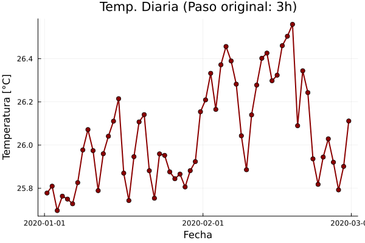
La siguiente tabla sintetiza las funciones clave para agrupar y extraer series temporales a partir de cubos multidimensionales:
| Operación | Python 🐍 | R 🔵 | Julia 🟣 |
|---|---|---|---|
| Detectar paso de tiempo | ds.time.diff(dim="time") |
difftime(f2, f1) |
tiempos[2] - tiempos[1] |
| Agrupación Temporal | .resample(time="1D") |
aggregate(by = "days") |
aggregate(mean, obj, Ti(X)) |
| Aplicar Reducción | .mean() |
Incluido en aggregate(FUN) |
Incluido en aggregate(FUN) |
| Extraer por Coordenada | .sel(lat=Y, lon=X, method='nearest') |
which.min(abs(vec - val)) |
X(Near(lon)), Y(Near(lat)) |
Notas sobre el remuestreo:
xarray.resample() utiliza una sintaxis muy similar a pandas (ej. “1D”, “1M”), lo que lo hace extremadamente intuitivo si ya tienes experiencia en análisis de datos tradicionales.aggregate() en stars es robusto, pero depende estrictamente de que la dimensión de tiempo esté correctamente formateada como POSIXct. La extracción puntual requiere un manejo explícito de índices si no se cuenta con un objeto vectorial (sf) de antemano.Near()) es muy limpia y autodocumentada.Los datos globales de ERA5 se distribuyen de manera nativa en coordenadas geográficas (WGS84, EPSG:4326), donde la unidad de medida fundamental es el grado decimal. Sin embargo, para realizar análisis espaciales rigurosos en Colombia —como el cálculo de gradientes térmicos por kilómetro, la medición de áreas afectadas por anomalías, o la integración con capas catastrales locales— es importante transformar el cubo a un sistema de coordenadas proyectado.
El estándar oficial actual para el país es el MAGNA-SIRGAS / Origen Nacional (EPSG:9377). La operación geomática que transforma los píxeles de grados a metros a través de todas las dimensiones del cubo (espacio, tiempo y niveles) se conoce como warping. Debido a que los centros de los píxeles originales no coincidirán geométricamente con la nueva cuadrícula ortogonal, debemos aplicar un método de interpolación; para variables climáticas continuas como la temperatura, el estándar matemático es la interpolación bilineal.
# #| eval: false
# -------------------------------------------------------------------------
# Reproyección espacial de cubos multidimensionales (Warping)
# -------------------------------------------------------------------------
# 1. Selección de nivel y re-asignación de CRS (Seguridad)
t_3d = t_diaria.sel(level=750, method='nearest')
t_3d.rio.write_crs("epsg:4326", inplace=True)<xarray.DataArray 't' (time: 60, latitude: 35, longitude: 25)> Size: 420kB
array([[[11.97345154, 12.3003883 , 12.62850223, ..., 11.81487581,
11.87586836, 11.90846148],
[12.36326924, 12.60777899, 12.83291434, ..., 11.64710337,
11.71064647, 11.77948688],
[12.50605116, 12.63063587, 12.74075109, ..., 11.41522376,
11.55317435, 11.68474855],
...,
[12.79058497, 13.51930741, 13.36651947, ..., 12.77650788,
12.72056739, 12.6941054 ],
[12.68770449, 13.29559448, 13.31281071, ..., 12.78136374,
12.73263346, 12.69084363],
[12.93677581, 13.21091121, 13.25532517, ..., 12.82268761,
12.78997186, 12.73567451]],
[[12.90092092, 12.98646254, 13.12031753, ..., 12.21769152,
12.22141925, 12.14809085],
[12.78550839, 12.89400499, 13.04392356, ..., 12.13958083,
12.15640467, 12.11130403],
[12.57974743, 12.73994178, 12.91100051, ..., 11.95679937,
12.03346311, 12.03044659],
...
[13.18940318, 13.15860035, 13.10697617, ..., 12.78246735,
12.78310499, 12.75885021],
[12.96630336, 12.939964 , 13.07151368, ..., 12.79617657,
12.80596186, 12.79551441],
[13.01071732, 12.87097644, 13.0336723 , ..., 12.80880671,
12.82003896, 12.80466206]],
[[11.40901905, 11.67106385, 11.89458059, ..., 13.2660424 ,
13.40941291, 13.53568981],
[11.78319009, 12.09690812, 12.35605902, ..., 12.85054749,
13.0540522 , 13.26913249],
[12.20425206, 12.53957622, 12.81422664, ..., 12.27093431,
12.49930691, 12.85351496],
...,
[13.12409431, 12.85895941, 12.75065901, ..., 12.7633382 ,
12.76461348, 12.78827967],
[12.90474675, 12.63029252, 12.69729359, ..., 12.73547831,
12.726674 , 12.75578464],
[12.94315219, 12.59075895, 12.69408087, ..., 12.70501882,
12.68208837, 12.71127258]]], shape=(60, 35, 25))
Coordinates:
* time (time) datetime64[ns] 480B 2020-01-01 2020-01-02 ... 2020-02-29
* latitude (latitude) float32 140B 12.5 12.0 11.5 11.0 ... -3.5 -4.0 -4.5
* longitude (longitude) float32 100B -79.1 -78.6 -78.1 ... -67.6 -67.1
level int32 4B 750
spatial_ref int64 8B 0
Attributes:
units: °C
long_name: Temperatura Media (Celsius)
standard_name: air_temperature# 2. Transformación a MAGNA-SIRGAS Origen Nacional (Metros)
# Se aplica el algoritmo bilineal para variables continuas.
t_proyectado = t_3d.rio.reproject("EPSG:9377", resampling=1)
# 3. Validación de la estructura resultante
print(f"Estructura 3D proyectada: {t_proyectado.shape}")Estructura 3D proyectada: (60, 35, 25)print(f"Nuevo CRS: {t_proyectado.rio.crs}")Nuevo CRS: EPSG:9377# 4. Renderizado de validación métrica
plt.figure(figsize=(8, 6))
t_proyectado.isel(time=0).plot(cmap="magma")
plt.title("Temperatura Diaria Bogotá (750 hPa)\n(Unidades en Metros)")
plt.grid(True, alpha=0.3)
plt.show()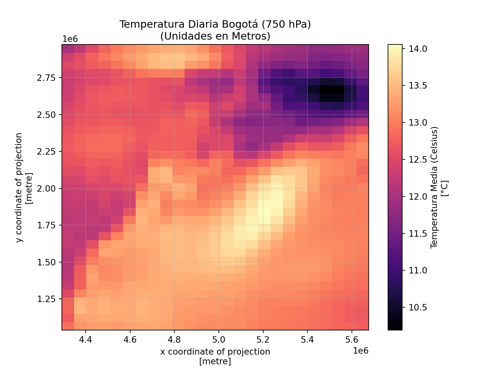
# #| eval: false
# -------------------------------------------------------------------------
# Reproyección espacial de cubos en {stars} (Warping)
# -------------------------------------------------------------------------
# 1. Selección del nivel de presión (Reducción a 3D)
# Para mantener la paridad con Python y optimizar la RAM, filtramos el
# cubo proxy al nivel de interés (750hPa) antes de realizar el cambio geométrico.
# Convertimos el recorte en un objeto físico en memoria con dimensiones claras
t_diaria_3d <- t_diaria %>%
slice(level, indice_objetivo) %>%
st_as_stars()Warning in CPL_get_metadata(file, NA_character_, options): GDAL Message 1:
dimension #1 (number) is not a Time dimension.Warning in CPL_read_gdal(as.character(x), as.character(options),
as.character(driver), : GDAL Message 1: The dataset has several variables that
could be identified as vector fields, but not all share the same primary
dimension. Consequently they will be ignored.Warning in CPL_read_gdal(as.character(x), as.character(options),
as.character(driver), : GDAL Message 1: dimension #1 (number) is not a Time
dimension.# 2. Ejecución de st_warp()
# Esta función es la herramienta optimizada de stars para transformar
# la geometría. Define una nueva cuadrícula en el CRS 9377 (metros)
# y remuestrea los valores originales mediante interpolación bilineal.
# IMPORTANTE: Para usar métodos como "bilinear", se debe especificar
# use_gdal = TRUE. Esto invoca las librerías C++ de GDAL, ya que el
# motor nativo de R solo soporta el método "near".
# Nota: Funciona solo si el objeto no es proxy
t_proyectado <- st_warp(
t_diaria_3d,
crs = 9377,
method = "bilinear",
use_gdal = TRUE
)Warning in st_warp(t_diaria_3d, crs = 9377, method = "bilinear", use_gdal =
TRUE): no_data_value not set: missing values will appear as zero values#A diferencia de st_warp, st_transform maneja mejor los objetos proxy con múltiples
#bandas temporales, evitando el error de discrepancia de bandas de GDAL.
#Sigue siendo una operación perezosa (lazy) en {stars}.
#t_proyectado <- st_transform(t_diaria_3d, crs = 9377)
# 3. Validación de metadatos espaciales
# Confirmamos que el objeto ahora reconoce la proyección en metros.
cat("CRS Original (Grados):\n", st_crs(t_diaria)$input, "\n\n")CRS Original (Grados):
EPSG:4326 cat("CRS Proyectado (Metros):\n", st_crs(t_proyectado)$input, "\n")CRS Proyectado (Metros):
MAGNA-SIRGAS 2018 / Origen-Nacional # 4. Inspección visual (Capa del primer día proyectado)
paleta_colores <- viridis::magma(100)
plot(t_proyectado[,,,1],
main = "Temperatura ERA5 (750 hPa)\nProyección Origen Nacional (m)",
col = paleta_colores,
axes = TRUE,
key.pos = 4)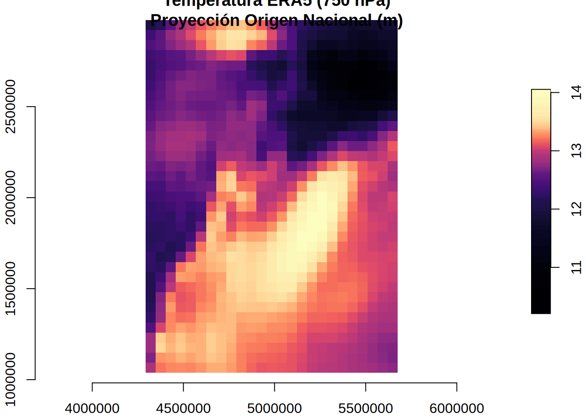
# #| eval: false
j_eval('
using ArchGDAL
# Reducción a 3D (Superficie) y reproyección métrica simultánea
t_3d = t_diaria[Z(At(1000))]
t_proyectado = resample(t_3d; crs=EPSG(9377), method=:bilinear)
# Auditoría de las nuevas dimensiones en metros
println("Estructura proyectada:")
println(dims(t_proyectado, (X, Y)))
# Renderizado del mapa proyectado para validación
p_proy = plot(t_proyectado[Ti(1)],
title="Bogotá - Temperatura Diaria (m)",
c=:magma,
xlabel="Este [Metros]",
ylabel="Norte [Metros]",
bottom_margin=10Plots.mm)
savefig(p_proy, "images/c10_reproyeccion_julia.png")
')julia> using ArchGDAL
julia> # Reducción a 3D (Superficie) y reproyección métrica simultánea
julia> t_3d = t_diaria[Z(At(1000))]
┌ 25×35×60 Raster{Float64, 3} ┐
├─────────────────────────────┴────────────────────────────────────────── dims ┐
↓ X Mapped{Float32} [-79.1f0, …, -67.1f0] ForwardOrdered Regular Points,
→ Y Mapped{Float32} [12.5f0, …, -4.5f0] ReverseOrdered Regular Points,
↗ Ti Sampled{DateTime} [DateTime("2020-01-01T12:00:00"), …, DateTime("2020-02-29T12:00:00")] ForwardOrdered Irregular Points
├────────────────────────────────────────────────────────────────────── raster ┤
extent: Extent(X = (-79.1f0, -67.1f0), Y = (-4.5f0, 12.5f0), Ti = (DateTime("2020-01-01T12:00:00"), DateTime("2020-02-29T12:00:00")))
crs: EPSG:4326
mappedcrs: EPSG:4326
└──────────────────────────────────────────────────────────────────────────────┘
[:, :, 1]
↓ → 12.5 12.0 11.5 11.0 10.5 10.0 9.5 9.0 8.5 8.0 7.5 7.0 6.5 6.0 5.5 5.0 4.5 4.0 3.5 3.0 2.5 2.0 1.5 1.0 0.5 0.0 -0.5 -1.0 -1.5 -2.0 -2.5 -3.0 -3.5 -4.0 -4.5
-79.1 26.3966 26.4781 26.5436 26.6023 26.5331 26.1177 25.7669 25.9468 26.0943 25.8269 25.5733 25.3852 25.24 25.1824 25.0668 25.0734 25.1461 25.2027 25.2586 25.2768 25.4434 25.3521 25.1205 25.451 26.0526 26.181 25.8158 25.3849 24.9568 25.0613 24.9259 24.568 26.2011 27.8529 27.3658
-78.6 26.3218 26.4491 26.5264 26.5286 26.3504 26.0351 25.8457 25.8719 25.8479 25.6591 25.5033 25.2452 25.0354 25.1273 25.2845 25.3872 25.3541 25.228 25.1705 25.3475 25.5344 25.3959 25.6868 26.3684 26.2356 25.2151 24.2777 24.1961 24.8776 25.7418 25.8379 26.035 27.6917 28.8428 28.6381
-78.1 26.2643 26.3925 26.4525 26.4087 26.2642 26.016 25.7099 25.6592 25.759 25.6704 25.5588 25.3867 25.2042 25.1108 25.0721 25.0988 25.1793 25.3689 25.3983 25.3228 25.3579 25.6234 26.2396 26.2709 25.6642 25.4449 25.3707 25.609 26.9774 28.5758 28.8328 28.266 28.009 27.8694 27.8604
-77.6 26.1941 26.3294 26.3986 26.3341 26.2081 26.0108 25.8067 25.8798 25.8908 25.6745 25.4874 25.1985 25.0433 25.0477 25.1446 25.3028 25.3193 25.2253 24.9614 25.2791 26.2775 26.7215 26.4867 26.2051 26.7255 27.9713 28.2132 27.4165 27.2326 27.6929 27.919 27.9063 28.0121 28.2695 28.41
-77.1 26.1292 26.2744 26.365 26.3064 26.2057 26.0947 26.0076 26.1183 26.1687 26.0442 25.7703 25.4663 25.5516 25.6775 25.6614 25.6087 25.6025 25.8919 26.1254 26.3976 26.6419 26.6345 27.1266 27.7768 27.7769 27.6021 27.5746 27.6509 27.8553 28.0115 28.1533 28.3013 28.4292 28.525 28.5243
-76.6 26.1241 26.234 26.3197 26.3499 26.3834 26.3387 26.1943 26.2584 26.4638 26.3593 26.1919 26.3991 26.4495 26.1357 26.1579 26.5023 26.8397 27.0586 27.1312 26.916 26.0274 25.9053 27.4992 28.3381 27.5232 27.1118 27.6359 28.2194 28.5001 28.5506 28.527 28.4091 28.3383 28.3145 28.3319
-76.1 26.0478 26.0852 26.2043 26.3796 26.5111 26.5775 26.5827 26.4981 26.4604 26.4748 27.04 27.8587 27.8113 27.6778 27.7337 27.6762 27.795 26.6176 25.1216 25.976 27.4945 28.1267 28.3736 27.8611 27.4221 27.9946 28.5168 28.5634 28.5309 28.4656 28.4002 28.3342 28.399 28.4274 28.4021
-75.6 25.9267 25.9746 26.2733 26.8104 26.959 26.7707 26.752 26.6497 26.5212 26.5324 27.1309 27.8932 28.1643 28.4304 27.1652 25.7338 27.3527 28.2617 26.8856 27.2799 28.9428 29.1839 28.3995 27.9049 28.0286 28.2063 28.1914 28.4577 28.7877 28.7998 28.7131 28.5532 28.363 28.1269 27.9512
-75.1 25.8726 25.8997 26.2482 27.1848 27.5264 27.1488 26.8142 26.5732 26.5103 26.2846 26.4867 27.2026 27.5071 27.6464 26.7151 26.048 28.0642 29.8097 29.5228 28.9388 28.6077 28.4011 28.275 28.367 28.4509 28.3987 28.5237 28.6188 28.4643 28.3186 28.3159 28.2824 28.2164 28.1237 28.007
-74.6 25.8574 25.7162 26.0363 27.0683 27.5178 27.5168 27.2414 26.6555 26.5257 26.5831 26.9729 27.5393 27.4624 27.699 28.3143 28.3203 27.5167 26.6681 27.4177 28.6275 28.7744 28.8313 28.7765 28.4757 28.3116 28.3637 28.525 28.4601 28.4298 28.4883 28.4108 28.2737 28.0865 27.8271 27.5995
-74.1 25.7764 25.5777 26.0996 27.259 27.6927 27.7849 27.5391 26.8442 26.5577 26.602 26.4387 26.2242 26.5768 27.2214 26.9884 26.1426 25.7781 26.0144 27.2001 28.5437 28.7566 28.5782 28.3785 28.2564 28.3719 28.3755 28.317 28.2714 28.2738 28.1185 27.9449 27.9037 27.7588 27.6073 27.4344
-73.6 25.7934 25.6414 25.9799 27.2041 28.2109 28.3956 27.904 27.3447 27.1068 27.2946 27.1556 26.8758 27.3037 26.8974 25.3781 25.0089 26.6402 28.019 28.0247 28.0997 28.1893 28.1359 28.1768 28.1811 28.2141 28.2022 28.2533 28.1804 27.9639 27.7721 27.7115 27.6109 27.3753 27.3092 27.2236
-73.1 25.873 26.0438 26.0528 26.6755 27.9468 28.528 28.1559 27.8665 27.896 28.5522 28.5131 27.4674 26.5389 25.2795 25.4443 27.1081 28.0535 28.0453 27.7344 27.9846 28.1522 28.0301 28.0935 28.1214 28.1673 28.1308 28.0484 27.8615 27.6895 27.5616 27.3266 27.0814 26.9328 26.9037 26.8222
-72.6 25.8045 26.4622 26.5837 26.4173 27.0772 27.6185 27.3302 27.094 27.2209 28.0046 27.5266 25.619 24.7763 25.0428 26.9992 28.937 28.9095 28.6917 28.6432 28.4235 28.0778 27.8899 27.9947 28.1022 28.2104 28.1104 27.9371 27.7042 27.3784 27.0116 26.708 26.6027 26.5714 26.6412 26.696
-72.1 25.9365 26.5732 26.501 26.1866 26.7949 27.19 26.6878 26.3729 26.5643 27.5177 27.8488 27.1202 27.2919 28.0946 28.9873 29.3966 29.1976 29.1179 28.6603 28.1624 28.0671 28.1055 28.1315 28.0832 27.9978 27.8509 27.724 27.4231 26.9781 26.6289 26.4337 26.2884 26.0953 26.1187 26.2617
-71.6 25.9517 26.2178 25.9387 26.1668 27.0046 27.0593 26.5274 26.6143 27.2699 28.1473 28.7177 28.7066 28.7023 28.7959 28.9351 29.0414 29.0046 28.738 28.3802 28.2937 28.1968 28.0086 27.9773 28.0429 28.0209 27.8486 27.5316 27.0519 26.5743 26.2142 25.9734 25.9057 25.9668 26.0351 26.1089
-71.1 25.5346 25.3676 25.493 26.7109 27.5881 27.2528 26.853 27.0449 28.0002 29.0031 29.2667 29.1268 28.8857 28.8157 28.9751 29.0321 28.9201 28.6561 28.4599 28.2748 28.0808 28.0993 28.1 27.9846 27.8068 27.5389 27.1521 26.7417 26.346 26.0604 25.9595 25.9071 25.8883 25.8223 25.8527
-70.6 25.4031 24.9468 25.3641 27.2229 28.5171 28.5724 28.4635 28.3057 28.7236 29.4786 29.6527 29.573 29.3726 29.228 29.1607 28.9288 28.7421 28.5246 28.3034 28.1962 28.2403 28.238 28.0224 27.834 27.644 27.3871 26.9633 26.4696 26.0558 25.8401 25.8228 25.7387 25.712 25.7722 25.8617
-70.1 25.4935 25.1572 25.4929 26.9687 28.2853 28.7903 29.1471 29.4543 29.6767 29.6353 29.2989 29.1846 29.2505 29.3229 29.2895 29.0244 28.7606 28.5245 28.3935 28.4131 28.3644 28.1304 27.9245 27.7745 27.4766 27.2295 26.8648 26.3674 26.0447 25.8584 25.7339 25.6591 25.7218 25.7935 25.8547
-69.6 25.4625 25.2236 25.4236 26.2276 27.0844 27.8384 28.7369 29.6343 30.0197 29.8813 29.5573 29.4376 29.6127 29.5856 29.2729 28.8938 28.5414 28.3621 28.3376 28.2786 28.195 28.1616 28.0165 27.6645 27.2731 27.047 26.766 26.3429 26.0053 25.8094 25.7133 25.6329 25.6188 25.6637 25.7796
-69.1 25.4661 25.207 25.2903 25.695 26.1593 27.2177 28.6845 29.7032 29.9745 29.9919 29.8252 29.492 29.4621 29.3417 29.0931 28.9307 28.6306 28.3768 28.284 28.2416 28.1647 28.0092 27.7364 27.5185 27.3669 27.0649 26.6854 26.2922 25.9196 25.7132 25.6281 25.5207 25.5909 25.8154 25.9244
-68.6 25.3825 25.23 25.2033 25.259 25.56 26.9255 28.6925 29.7289 30.0244 30.033 29.8183 29.4633 29.4393 29.3862 29.0172 28.5347 28.21 28.1508 28.0719 28.0606 28.0375 27.8667 27.6609 27.4509 27.1622 26.7765 26.4401 26.0934 25.8202 25.711 25.6063 25.4885 25.5973 25.7918 25.7922
-68.1 25.2547 25.1583 25.0088 24.9305 25.5776 27.4628 29.2649 29.9352 29.9743 29.7893 29.554 29.3666 29.2694 28.9727 28.3268 27.6755 27.617 28.0152 28.1095 28.0054 27.8899 27.7502 27.5526 27.2259 26.9077 26.6376 26.3561 25.9827 25.6979 25.5836 25.5492 25.563 25.7212 25.9527 25.9729
-67.6 25.2042 25.0734 24.8937 24.9898 25.8581 27.6853 29.286 29.7412 29.7117 29.5068 29.1271 28.8704 28.7531 28.5349 28.3792 28.3801 28.315 28.1694 28.0812 28.042 27.8441 27.622 27.3672 27.0693 26.8628 26.506 26.0876 25.8328 25.6913 25.5938 25.5753 25.6193 25.7745 25.98 25.9971
-67.1 25.1675 25.0405 24.8796 25.0054 25.6457 26.9526 28.3196 28.9591 29.258 29.2178 28.6526 28.2543 28.2693 28.3899 28.7117 29.0909 28.9263 28.2093 27.7732 27.8192 27.7162 27.5249 27.2813 26.9224 26.6852 26.3795 26.0076 25.7571 25.6296 25.5869 25.5311 25.5438 25.7764 25.9478 25.9313
julia> t_proyectado = resample(t_3d; crs=EPSG(9377), method=:bilinear)
┌ 25×35×60 Raster{Union{Missing, Float64}, 3} ┐
├─────────────────────────────────────────────┴────────────────────────── dims ┐
↓ X Projected{Float64} 4.31992264133028e6:55361.53918591557:5.648599581792254e6 ForwardOrdered Regular Points,
→ Y Projected{Float64} 2.9477618655660865e6:-55361.53918591556:1.0654695332449577e6 ReverseOrdered Regular Points,
↗ Ti Sampled{DateTime} [DateTime("2020-01-01T12:00:00"), …, DateTime("2020-02-29T12:00:00")] ForwardOrdered Irregular Points
├──────────────────────────────────────────────────────────────────── metadata ┤
Metadata{Rasters.GDALsource} of Dict{String, Any} with 1 entry:
"filepath" => "/vsimem/tmp"
├────────────────────────────────────────────────────────────────────── raster ┤
missingval: missing
extent: Extent(X = (4.31992264133028e6, 5.648599581792254e6), Y = (1.0654695332449577e6, 2.9477618655660865e6), Ti = (DateTime("2020-01-01T12:00:00"), DateTime("2020-02-29T12:00:00")))
crs: EPSG:9377
└──────────────────────────────────────────────────────────────────────────────┘
[:, :, 1]
↓ → 2.94776e6 2.8924e6 2.83704e6 2.78168e6 2.72632e6 2.67095e6 2.61559e6 2.56023e6 2.50487e6 2.44951e6 2.39415e6 2.33878e6 2.28342e6 2.22806e6 2.1727e6 2.11734e6 2.06198e6 2.00662e6 1.95125e6 1.89589e6 1.84053e6 1.78517e6 1.72981e6 1.67445e6 1.61908e6 1.56372e6 1.50836e6 1.453e6 1.39764e6 1.34228e6 1.28692e6 1.23155e6 1.17619e6 1.12083e6 1.06547e6
4.31992e6 26.3966 26.4772 26.5426 26.6012 26.5348 26.1291 25.778 25.9404 26.0885 25.8385 25.5853 25.3948 25.2479 25.1858 25.074 25.073 25.1411 25.1986 25.2543 25.2753 25.4294 25.3601 25.1417 25.4196 25.9933 26.1679 25.8544 25.432 25.0051 25.0491 24.9421 24.6122 25.9933 27.6367 27.4314
4.37528e6 26.343 26.454 26.5285 26.5446 26.3911 26.0597 25.8394 25.8815 25.8814 25.6882 25.5188 25.2716 25.0639 25.1266 25.2619 25.3636 25.3464 25.2357 25.1775 25.3317 25.5166 25.4072 25.6522 26.292 26.2457 25.329 24.394 24.2208 24.8037 25.6308 25.8074 25.9742 27.4343 28.6525 28.6102
4.43065e6 26.2796 26.4018 26.4668 26.4344 26.2844 26.0267 25.741 25.6915 25.7673 25.6735 25.5584 25.3826 25.2002 25.1167 25.0876 25.1132 25.1827 25.3498 25.3878 25.329 25.3595 25.5954 26.1719 26.2687 25.7336 25.4647 25.3605 25.5567 26.7808 28.3252 28.7218 28.2635 28.0214 27.9212 27.9004
4.48601e6 26.2116 26.3375 26.4067 26.35 26.2215 26.0176 25.7991 25.847 25.8732 25.6829 25.5035 25.2306 25.0656 25.0526 25.1342 25.2806 25.3105 25.238 24.9991 25.2562 26.1653 26.65 26.4993 26.2328 26.6509 27.7868 28.1192 27.4548 27.2417 27.6615 27.9214 27.9234 28.0004 28.22 28.3639
4.54137e6 26.1442 26.2775 26.3663 26.3128 26.2088 26.0851 25.9819 26.0826 26.1329 26.009 25.7543 25.4574 25.5053 25.6226 25.6264 25.5923 25.5869 25.838 26.0554 26.3284 26.6047 26.6368 27.0623 27.6677 27.7429 27.6268 27.5962 27.6382 27.8131 27.9809 28.1271 28.2676 28.3942 28.4987 28.517
4.59673e6 26.1252 26.2335 26.3216 26.3421 26.3546 26.3041 26.1732 26.238 26.4214 26.33 26.1587 26.3054 26.3711 26.1172 26.1216 26.4231 26.7437 26.9782 27.0741 26.9072 26.1255 25.9459 27.3423 28.2375 27.6101 27.171 27.5804 28.1363 28.4436 28.5222 28.5128 28.4171 28.3505 28.3281 28.341
4.65209e6 26.0628 26.1082 26.2143 26.3715 26.4889 26.5427 26.5327 26.4716 26.4612 26.4626 26.9333 27.6865 27.6994 27.5667 27.6163 27.5993 27.7257 26.725 25.3422 25.9599 27.3033 27.9692 28.3055 27.9253 27.4715 27.9023 28.4234 28.5406 28.5315 28.4766 28.414 28.3465 28.3884 28.4175 28.4008
4.70745e6 25.9484 25.9887 26.2355 26.7358 26.8929 26.7502 26.7318 26.6361 26.5196 26.526 27.0928 27.8493 28.1209 28.357 27.282 25.9596 27.2739 28.1007 26.8885 27.1714 28.7229 29.1048 28.4653 27.9499 27.9889 28.1756 28.2063 28.4352 28.7395 28.7813 28.7063 28.5598 28.3872 28.174 28.0028
4.76281e6 25.8813 25.9078 26.2138 27.1136 27.4449 27.1138 26.8174 26.5903 26.5144 26.3182 26.5345 27.2249 27.5448 27.6997 26.8106 26.0742 27.8732 29.5804 29.3817 28.8788 28.6459 28.463 28.2972 28.3352 28.4186 28.392 28.4927 28.5983 28.4971 28.3625 28.3405 28.3042 28.235 28.1372 28.0192
4.81818e6 25.8596 25.7562 26.0243 27.0586 27.5067 27.4767 27.2053 26.6686 26.5294 26.5535 26.9101 27.4788 27.4688 27.6808 28.1583 28.1531 27.5992 26.9393 27.5088 28.5592 28.7536 28.8 28.7501 28.4952 28.335 28.3612 28.5082 28.476 28.4363 28.4721 28.4132 28.2902 28.1179 27.8799 27.6581
4.87354e6 25.7867 25.6208 26.0247 27.2102 27.6617 27.7545 27.5181 26.8529 26.5664 26.5981 26.4917 26.345 26.6325 27.2228 27.1042 26.3645 25.9384 26.0513 27.1254 28.4405 28.7401 28.6103 28.4236 28.2844 28.3583 28.374 28.3359 28.2895 28.2846 28.1606 27.9977 27.9361 27.8013 27.6442 27.4703
4.9289e6 25.7915 25.658 25.9397 27.1796 28.1337 28.332 27.887 27.3219 27.0684 27.2257 27.101 26.8355 27.2187 26.9437 25.6004 25.1274 26.4662 27.7651 27.9532 28.1197 28.2241 28.1751 28.19 28.1873 28.2221 28.2163 28.2536 28.1949 28.0098 27.8202 27.7375 27.6451 27.4337 27.3418 27.2524
4.98426e6 25.8658 25.9864 26.0406 26.7044 27.9334 28.4987 28.1484 27.8347 27.829 28.417 28.4017 27.4717 26.6501 25.4871 25.4372 26.8322 27.865 28.0352 27.7807 27.9747 28.1415 28.0491 28.0946 28.1238 28.1667 28.1401 28.0726 27.9068 27.7316 27.5942 27.3843 27.1532 26.9886 26.9411 26.8661
5.03962e6 25.8094 26.3444 26.5284 26.4393 27.1222 27.6703 27.4054 27.1647 27.2696 28.0118 27.6299 25.8723 24.9726 25.0541 26.7497 28.6496 28.8322 28.6512 28.5703 28.4001 28.1101 27.9184 27.994 28.0943 28.1964 28.1219 27.9643 27.7429 27.4406 27.0996 26.7972 26.6586 26.6079 26.6559 26.7011
5.09498e6 25.9293 26.4843 26.5138 26.2089 26.795 27.2054 26.7512 26.4381 26.6053 27.5101 27.8094 27.0437 27.0777 27.7889 28.7512 29.3188 29.1853 29.0865 28.6921 28.2253 28.0782 28.0839 28.1156 28.0882 28.0244 27.8899 27.7579 27.4815 27.0641 26.705 26.4835 26.3346 26.161 26.1622 26.2826
5.15035e6 25.9512 26.1992 25.9968 26.1624 26.9681 27.0645 26.5575 26.5957 27.1921 28.0579 28.6219 28.5833 28.5847 28.7262 28.9262 29.0642 29.0261 28.7926 28.4361 28.2914 28.1924 28.033 27.995 28.0418 28.0214 27.8662 27.5823 27.1393 26.6677 26.2966 26.0465 25.952 25.9745 26.0347 26.1124
5.20571e6 25.5423 25.4062 25.4953 26.6585 27.5354 27.2541 26.8505 27.011 27.9097 28.8941 29.2106 29.1008 28.8836 28.8175 28.9611 29.0287 28.9358 28.6842 28.4688 28.2912 28.1086 28.0901 28.0873 28.0 27.8456 27.5984 27.2326 26.8201 26.4154 26.1103 25.9746 25.9136 25.8975 25.85 25.8727
5.26107e6 25.4032 24.9952 25.326 27.1592 28.4461 28.517 28.3908 28.2425 28.6588 29.4087 29.6151 29.543 29.3445 29.2007 29.1468 28.9529 28.7727 28.5549 28.3371 28.2142 28.2214 28.2227 28.0488 27.8682 27.6811 27.4306 27.0289 26.5528 26.1343 25.8902 25.8408 25.7665 25.7337 25.7713 25.8499
5.31643e6 25.493 25.1868 25.4628 26.9307 28.2489 28.766 29.1062 29.3862 29.6122 29.6248 29.3398 29.2208 29.258 29.3111 29.2799 29.0333 28.7774 28.5424 28.3949 28.3885 28.3535 28.1614 27.9552 27.7964 27.5248 27.2737 26.9157 26.4335 26.0833 25.8781 25.7573 25.6772 25.7141 25.7823 25.847
5.37179e6 25.4626 25.2416 25.4068 26.2056 27.0715 27.8336 28.7158 29.5892 29.9844 29.8731 29.557 29.4253 29.5728 29.5634 29.2936 28.9327 28.5896 28.3941 28.3468 28.2984 28.2221 28.1629 28.0193 27.7095 27.3363 27.0934 26.8091 26.3929 26.0477 25.8378 25.7275 25.6456 25.6312 25.6719 25.7731
5.42715e6 25.4616 25.2247 25.2828 25.6785 26.1458 27.1882 28.628 29.6567 29.9637 29.9851 29.817 29.5061 29.4753 29.3708 29.1275 28.9399 28.6434 28.394 28.2971 28.2498 28.1752 28.0412 27.7965 27.5602 27.3727 27.0924 26.7347 26.342 25.9718 25.7491 25.649 25.547 25.5867 25.7721 25.8942
5.48251e6 25.3734 25.2344 25.1977 25.2498 25.5501 26.877 28.6215 29.6828 30.0084 30.0303 29.8302 29.4857 29.4427 29.3859 29.0487 28.6081 28.2807 28.1837 28.1043 28.0848 28.0567 27.9008 27.6911 27.4804 27.2172 26.8548 26.5102 26.159 25.8657 25.7253 25.6212 25.5067 25.5836 25.7694 25.8055
5.53788e6 25.2502 25.1568 25.0099 24.9347 25.5612 27.3937 29.1855 29.9001 29.9739 29.8104 29.583 29.3851 29.2889 29.0282 28.4377 27.813 27.6917 28.0052 28.0989 28.0204 27.9189 27.7793 27.5864 27.2879 26.9757 26.6871 26.3988 26.0386 25.7468 25.6144 25.5622 25.5536 25.6865 25.9041 25.9495
5.59324e6 25.2003 25.0751 24.8994 24.9875 25.8225 27.6076 29.2202 29.7244 29.7217 29.5304 29.1727 28.9203 28.8027 28.5899 28.3878 28.3073 28.2372 28.1561 28.0901 28.041 27.8668 27.6594 27.4175 27.1218 26.8917 26.5611 26.1701 25.8849 25.7104 25.6038 25.574 25.6067 25.7482 25.9501 25.9919
5.6486e6 25.1675 25.0435 24.884 25.0015 25.6237 26.903 28.2629 28.9403 29.2569 29.2328 28.7102 28.3201 28.3088 28.3977 28.6587 28.9866 28.8634 28.2541 27.8464 27.8479 27.7451 27.5571 27.3173 26.9789 26.7362 26.4315 26.0602 25.7961 25.6536 25.5938 25.5435 25.5525 25.7487 25.9297 25.941
julia> # Auditoría de las nuevas dimensiones en metros
julia> println("Estructura proyectada:")
Estructura proyectada:
julia> println(dims(t_proyectado, (X, Y)))
(↓ X Projected{Float64} 4.31992264133028e6:55361.53918591557:5.648599581792254e6 ForwardOrdered Regular Points,
→ Y Projected{Float64} 2.9477618655660865e6:-55361.53918591556:1.0654695332449577e6 ReverseOrdered Regular Points)
julia> # Renderizado del mapa proyectado para validación
julia> p_proy = plot(t_proyectado[Ti(1)], title="Bogotá - Temperatura Diaria (m)", c=:magma, xlabel="Este [Metros]", ylabel="Norte [Metros]", bottom_margin=10Plots.mm)
julia> savefig(p_proy, "images/c10_reproyeccion_julia.png")
"/home/rstudio/work/01_prog_sig/images/c10_reproyeccion_julia.png"
knitr::include_graphics("images/c10_reproyeccion_julia.png")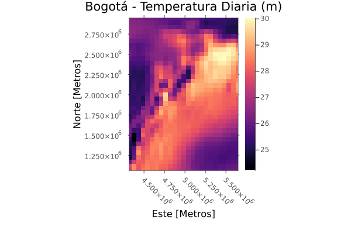
Reproyectar datos ráster no es una simple reasignación de etiquetas; requiere recalcular los valores de cada píxel en una nueva malla matemática. Esta operación rompe temporalmente el paradigma de la “evaluación perezosa”, ya que fuerza a las librerías a procesar grandes bloques de datos o incluso materializarlos en RAM. Por regla general: filtre primero (espacio, tiempo y niveles), y reproyecte de último.
| Operación | Python 🐍 (rioxarray) |
R 🔵 (stars) |
Julia 🟣 (Rasters.jl) |
|---|---|---|---|
| Forzar/Asignar CRS original | .rio.write_crs("EPSG:4326") |
st_set_crs(obj, 4326) |
Automático vía metadatos |
| Reproyectar (Warping) | .rio.reproject("EPSG:9377") |
st_warp(crs = 9377) |
resample(crs=EPSG(9377)) |
| Definir Método Bilineal | resampling=1 |
method = "bilinear" |
method=:bilinear |
| Dependencia del motor C++ | Implícito (Rasterio/GDAL) | use_gdal = TRUE |
Requiere using ArchGDAL |
Tras haber procesado nuestro cubo 5D inicial (recorte espacial sobre Bogotá, agregación de los miembros de ensamble, conversión de unidades a grados Celsius, remuestreo temporal a promedios diarios y reproyección a coordenadas métricas), hemos construido un grafo de tareas computacionales sustancial.
Para evitar que el compilador tenga que recalcular todo este flujo desde los datos base cada vez que ejecutamos nuestro código, y para preparar el terreno para las operaciones integradas Raster-Vector del siguiente módulo, el paso final es guardar (materializar) este nuevo cubo simplificado en el disco duro. Exportaremos el resultado en formato estandarizado NetCDF (.nc), lo que garantizará que tanto la estructura dimensional como los metadatos se conserven perfectamente.
# #| eval: false
# -------------------------------------------------------------------------
# Persistencia: Exportar el DataArray a disco
# -------------------------------------------------------------------------
import os
# 1. Definición de la ruta de salida
# Aseguramos un nombre descriptivo que indique el procesamiento previo
archivo_salida = "./data_heavy/t_diaria_bogota_9377.nc"
# 2. Materialización y exportación
# El método .to_netcdf() detona la ejecución de todo el grafo de tareas
# diferidas (Dask) y escribe el resultado físico en el disco.
# Verificamos si el archivo ya existe para evitar sobrescribirlo innecesariamente.
if not os.path.exists(archivo_salida):
t_proyectado.to_netcdf(archivo_salida)
print(f"¡Éxito! Archivo guardado en: {archivo_salida}")
else:
print(f"El archivo {archivo_salida} ya existe en disco.")El archivo ./data_heavy/t_diaria_bogota_9377.nc ya existe en disco.# #| eval: false
# -------------------------------------------------------------------------
# Persistencia: Exportar objeto {stars} a NetCDF
# -------------------------------------------------------------------------
# 1. Definición de la ruta de destino
archivo_salida_r <- "./data_heavy/t_diaria_bogota_9377_R.nc"
# 2. Materialización y exportación
# En {stars}, la función recomendada para escribir arreglos multidimensionales
# complejos (con tiempo y profundidad) en NetCDF es write_mdim().
# Esta función ejecutará el proxy y volcará el resultado a disco.
if (!file.exists(archivo_salida_r)) {
write_mdim(t_proyectado, archivo_salida_r)
cat("¡Éxito! Archivo guardado en:", archivo_salida_r, "\n")
} else {
cat("El archivo", archivo_salida_r, "ya existe. Omisión de escritura.\n")
}El archivo ./data_heavy/t_diaria_bogota_9377_R.nc ya existe. Omisión de escritura.# #| eval: false
j_eval('
# -------------------------------------------------------------------------
# Persistencia: Guardar el Raster a disco
# -------------------------------------------------------------------------
# 1. Definición de la ruta
# Concatenamos la ruta de manera segura usando joinpath
archivo_salida_jl = joinpath("./data_heavy/", "t_diaria_bogota_9377_JL.nc")
# 2. Exportación a formato nativo
# Rasters.jl sobrescribe la función base `write` de Julia. Al pasarle un
# archivo con extensión .nc, invoca internamente a NCDatasets para
# compilar el cubo en disco, manteniendo intacto el sistema EPSG y el tiempo.
if !isfile(archivo_salida_jl)
write(archivo_salida_jl, t_proyectado)
println("¡Éxito! Archivo guardado en: $archivo_salida_jl")
else
println("El archivo $archivo_salida_jl ya existe en disco.")
end
')julia> # -------------------------------------------------------------------------
julia> # Persistencia: Guardar el Raster a disco
julia> # -------------------------------------------------------------------------
julia> # 1. Definición de la ruta
julia> # Concatenamos la ruta de manera segura usando joinpath
julia> archivo_salida_jl = joinpath("./data_heavy/", "t_diaria_bogota_9377_JL.nc")
"./data_heavy/t_diaria_bogota_9377_JL.nc"
julia> # 2. Exportación a formato nativo
julia> # Rasters.jl sobrescribe la función base `write` de Julia. Al pasarle un
julia> # archivo con extensión .nc, invoca internamente a NCDatasets para
julia> # compilar el cubo en disco, manteniendo intacto el sistema EPSG y el tiempo.
julia> if !isfile(archivo_salida_jl) write(archivo_salida_jl, t_proyectado) println("¡Éxito! Archivo guardado en: $archivo_salida_jl") else println("El archivo $archivo_salida_jl ya existe en disco.") end
El archivo ./data_heavy/t_diaria_bogota_9377_JL.nc ya existe en disco.
| Operación | Python 🐍 (xarray) |
R 🔵 (stars) |
Julia 🟣 (Rasters) |
|---|---|---|---|
| Exportar a NetCDF | .to_netcdf("file.nc") |
write_mdim(obj, "file.nc") |
write("file.nc", obj) |
| Materialización | Ejecuta el grafo (Dask) | Ejecuta el Proxy | Compila (NCDatasets) |
| Operación | Python 🐍 (xarray / rioxarray) |
R 🔵 (stars / sf) |
Julia 🟣 (Rasters.jl) |
|---|---|---|---|
| Cargar librería base | import xarray as xr |
library(stars) |
using Rasters |
| Lectura (Evaluación Perezosa) | xr.open_dataset(file) |
read_stars(file, proxy=TRUE) |
Raster(file) |
| Asignar CRS original | ds.rio.write_crs("epsg:4326") |
st_crs(y) <- 4326 |
Automático vía metadatos |
| Extraer dimensión temporal | ds.time.values |
st_get_dimension_values(y, "time") |
lookup(cube, Ti) |
| Conversión de tiempo | Automática (CF Conventions) | Manual via as.POSIXct() |
Automática (CF Conventions) |
| Selección por Posición/Índice | .isel(time=0) |
y[,,,i] |
cube[Ti(1)] |
| Selección por Valor Físico | .sel(level=750, method='nearest') |
slice(level, indice_objetivo) |
cube[Z(At(750))] |
| Recorte Espacial (BBox) | .sel(lat=slice(), lon=slice()) |
st_crop(obj, bbox) |
X(Between()), Y(Between()) |
| Eliminar dimensiones unitarias | .squeeze() |
adrop() |
dropdims(..., dims=N) |
| Álgebra: Operación Escalar | obj - 273.15 |
obj - 273.15 |
cube .- 273.15 (Broadcast) |
| Álgebra: Promedio (Reducción) | .mean(dim='number') |
st_apply(..., mean) |
mean(cube, dims=4) |
| Remuestreo: Agrupación Temporal | .resample(time="1D") |
aggregate(by = "days") |
aggregate(mean, obj, Ti(X)) |
| Reproyectar (Warping) | .rio.reproject("EPSG:9377") |
st_warp(crs = 9377) |
resample(crs=EPSG(9377)) |
| Exportar a NetCDF | .to_netcdf("file.nc") |
write_mdim(obj, "file.nc") |
write("file.nc", obj) |
Para poner en práctica los conceptos avanzados abordados en este capítulo, deberán resolver los siguientes dos ejercicios en grupos de 4 personas. El objetivo es que ejecuten un flujo de trabajo profesional completo: desde la adquisición de datos climáticos brutos en la nube hasta el procesamiento multidimensional en su máquina local. Pueden elegir resolver la parte de código en Python, R o Julia.
Contexto: Los repositorios climáticos globales contienen petabytes de información. Para su proyecto final (o para este ejercicio), necesitarán descargar un subconjunto de datos de reanálisis ERA5 correspondiente a una región y periodo de su interés.
Instrucciones:
cdsapi, integren este código en un script (.py) para realizar la descarga automáticamente desde su entorno de programación. Deben instalar la librería cdsapi..nc (asegúrense de que no supere los 500 MB para no saturar sus equipos locales) y guárdenlo en su carpeta ./data_heavy/.Contexto: Tienen un archivo NetCDF crudo recién descargado de Copernicus. Deben aplicar el flujo de trabajo aprendido para limpiar, transformar y preparar este hipercubo para análisis posteriores o cartografía.
Instrucciones de código:
.nc en su entorno utilizando la estrategia de evaluación perezosa (lazy evaluation) correspondiente a su lenguaje (xarray + dask, stars con proxy=TRUE, o Rasters.jl).idxmax o índices espaciotemporales según el lenguaje elegido).mi_zona_procesada.nc.El objetivo de esta evaluación no es solo que el código se ejecute sin errores, sino que demuestren comprensión sobre cómo se gestiona la memoria y la metadata en datos multidimensionales.
1. Archivos de Código: Deben desarrollar los algoritmos del procesamiento en un documento computacional (.qmd con chunks de código de R, Python o Julia).
2. Documento Analítico (Quarto): Deben renderizar su archivo .qmd tanto en formato HTML como en PDF. Además del código, deben responder argumentativamente a las siguientes preguntas de análisis dentro del documento:
3. Repositorio en GitHub: Suban la carpeta del proyecto a un repositorio privado en GitHub (puede ser en la cuenta de uno de los miembros del grupo).
.nc al repositorio! (GitHub bloquea archivos muy pesados). Asegúrense de agregar la carpeta data_heavy/ a su archivo .gitignore..py) usando la librería cdsapi con la que descargaron los datos.
.qmd).